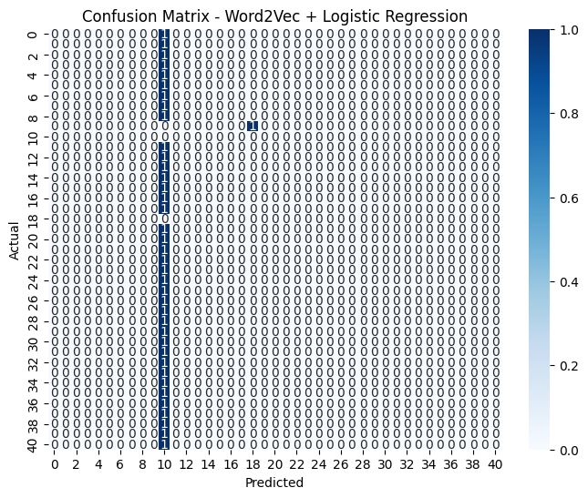

#TF-IDF dan Word Embeding
TF-IDF#
!pip install scikit-learn
^C
import pandas as pd
import ast
from sklearn.feature_extraction.text import TfidfVectorizer
from google.colab import drive
import pandas as pd
# Mount Google Drive
drive.mount('/content/drive')
Mounted at /content/drive
# Baca CSV dari path Drive
df = pd.read_csv('/content/drive/MyDrive/Semester 7/PPW/hasil_preprocessing_berita.csv')
df.head()
| Teks Asli | Setelah Stopword Removal | Setelah Cleaning | Setelah Normalisasi | Setelah Stemming | Tokenisasi Akhir | |
|---|---|---|---|---|---|---|
| 0 | alfamart kembali menggelar aksi donor darah se... | ['alfamart', 'kembali', 'menggelar', 'aksi', '... | ['alfamart', 'kembali', 'menggelar', 'aksi', '... | ['alfamart', 'kembali', 'menggelar', 'aksi', '... | ['alfamart', 'kembali', 'gelar', 'aksi', 'dono... | ['alfamart', 'kembali', 'gelar', 'aksi', 'dono... |
| 1 | menteri koordinator bidang hukum, ham, imigras... | ['menteri', 'koordinator', 'bidang', 'hukum,',... | ['menteri', 'koordinator', 'bidang', 'hukum', ... | ['menteri', 'koordinator', 'bidang', 'hukum', ... | ['menteri', 'koordinator', 'bidang', 'hukum', ... | ['menteri', 'koordinator', 'bidang', 'hukum', ... |
| 2 | gubernur sumatera utara (sumut) bobby nasution... | ['gubernur', 'sumatera', 'utara', '(sumut)', '... | ['gubernur', 'sumatera', 'utara', 'sumut', 'bo... | ['gubernur', 'sumatera', 'utara', 'sumut', 'bo... | ['gubernur', 'sumatera', 'utara', 'sumut', 'bo... | ['gubernur', 'sumatera', 'utara', 'sumut', 'bo... |
| 3 | dukungan untuk plt ketua umum partai persatuan... | ['dukungan', 'plt', 'ketua', 'umum', 'partai',... | ['dukungan', 'plt', 'ketua', 'umum', 'partai',... | ['dukungan', 'plt', 'ketua', 'umum', 'partai',... | ['dukung', 'plt', 'ketua', 'umum', 'partai', '... | ['dukung', 'plt', 'ketua', 'umum', 'partai', '... |
| 4 | bagi pengguna whoosh rute jakarta-bandung atau... | ['bagi', 'pengguna', 'whoosh', 'rute', 'jakart... | ['bagi', 'pengguna', 'whoosh', 'rute', 'jakart... | ['bagi', 'pengguna', 'whoosh', 'rute', 'jakart... | ['bagi', 'guna', 'whoosh', 'rute', 'jakartaban... | ['bagi', 'guna', 'whoosh', 'rute', 'jakartaban... |
print(type(df["Tokenisasi Akhir"].iloc[0]))
print(df["Tokenisasi Akhir"].iloc[0])
<class 'str'>
['alfamart', 'kembali', 'gelar', 'aksi', 'donor', 'darah', 'serentak', 'kotakabupaten', 'lama', 'satu', 'minggu', 'september', 'dalam', 'program', 'sehat', 'tetes', 'darah', 'pertiwi', 'giat', 'sosial', 'ini', 'alfamart', 'target', 'kumpul', 'kantong', 'darah', 'bantu', 'penuh', 'stok', 'palang', 'merah', 'indonesia', 'pmi', 'ini', 'salah', 'satu', 'kontribusi', 'alfamart', 'bantu', 'pasien', 'butuh', 'transfusi', 'darah', 'gandeng', 'pmi', 'daerah', 'harap', 'ribu', 'kantong', 'darah', 'dapat', 'capai', 'salur', 'kepada', 'butuh', 'kata', 'corporate', 'affairs', 'director', 'alfamart', 'solihin', 'dalam', 'terang', 'tulis', 'rabu', 'scroll', 'continue', 'with', 'content', 'giat', 'donor', 'darah', 'kali', 'jadi', 'bagi', 'rangkai', 'semarak', 'ulang', 'tahun', 'alfamart', 'sua', 'ke', 'target', 'kantong', 'darah', 'pilih', 'bagai', 'refleksi', 'usia', 'alfamart', 'telah', 'tahun', 'layan', 'masyarakat', 'indonesia', 'solihin', 'tambah', 'donor', 'darah', 'telah', 'jadi', 'giat', 'rutin', 'alfamart', 'tahun', 'ini', 'program', 'dapat', 'dukung', 'jumlah', 'mitra', 'seperti', 'bear', 'brand', 'milo', 'aquviva', 'ichitan', 'paper', 'bag', 'program', 'jadi', 'bagi', 'tanggung', 'jawab', 'sosial', 'usaha', 'kumpul', 'darah', 'dalam', 'jumlah', 'besar', 'makin', 'banyak', 'pasien', 'bisa', 'bantu', 'ujar', 'solihin', 'selain', 'donor', 'darah', 'giat', 'turut', 'isi', 'talkshow', 'sehat', 'sama', 'direktur', 'rumah', 'sakit', 'islam', 'sari', 'asih', 'arrahmah', 'irhami', 'sempat', 'itu', 'irhami', 'tekan', 'penting', 'siap', 'belum', 'donor', 'darah', 'selain', 'pasti', 'kondisi', 'tubuh', 'sehat', 'calon', 'donor', 'perlu', 'jaga', 'pola', 'tidur', 'cukup', 'serta', 'pola', 'makan', 'atur', 'agar', 'proses', 'donor', 'darah', 'jalan', 'lancar', 'ujar', 'irhami', 'apresiasi', 'khusus', 'beri', 'lalu', 'blood', 'heroes', 'bagi', 'donor', 'telah', 'sumbang', 'darah', 'lebih', 'kali', 'harga', 'serah', 'langsung', 'oleh', 'solihin', 'sama', 'wakil', 'ketua', 'pmi', 'provinsi', 'banten', 'jaenudin', 'sementara', 'itu', 'jaenudin', 'sampai', 'apresiasi', 'hadap', 'program', 'donor', 'darah', 'jalan', 'alfamart', 'kumpul', 'kantong', 'darah', 'kumpul', 'lama', 'september', 'alfamart', 'dapat', 'jadi', 'contoh', 'bagi', 'usaha', 'lain', 'donor', 'darah', 'bukan', 'hanya', 'manfaat', 'bagi', 'sehat', 'tetapi', 'wujud', 'nyata', 'peduli', 'kepada', 'sama', 'ujar', 'jaenudin', 'kantong', 'darah', 'kumpul', 'akan', 'sangat', 'arti', 'bagi', 'hidup', 'orang', 'lain', 'gantung', 'kepada', 'stok', 'darah', 'pmi', 'sambung', 'para', 'serta', 'donor', 'darah', 'dapat', 'paket', 'makan', 'gizi', 'goodie', 'bag', 'bagai', 'tambah', 'nutrisi', 'seperti', 'susu', 'murni', 'bear', 'brand', 'susu', 'sapi', 'steril', 'murni', 'milo', 'biskuit', 'air', 'mineral', 'aquviva', 'telah', 'lalu', 'tahap', 'nano', 'purifikasi', 'pasti', 'murni', 'imbang', 'mineral', 'ichitan', 'serta', 'pelbagai', 'nutrisi', 'tambah', 'salah', 'orang', 'donor', 'baru', 'pertama', 'kali', 'laku', 'donor', 'darah', 'rico', 'aku', 'awal', 'sempat', 'takut', 'sedikit', 'takut', 'awal', 'jarum', 'tapi', 'rani', 'diri', 'harap', 'darah', 'bisa', 'manfaat', 'kata', 'rico', 'donor', 'lain', 'mas', 'justru', 'rutin', 'ikut', 'giat', 'ini', 'manfaat', 'rasa', 'langsung', 'apalagi', 'bantu', 'butuh', 'alfamart', 'konsisten', 'ada', 'ujar', 'mas', 'giat', 'donor', 'darah', 'alfamart', 'jadi', 'bagi', 'upaya', 'dukung', 'sedia', 'darah', 'pmi', 'sangat', 'butuh', 'pasien', 'masuk', 'idap', 'thalassemia', 'seperti', 'intan', 'turut', 'beri', 'cerita', 'acara', 'sebut', 'intan', 'harus', 'rutin', 'jalan', 'transfusi', 'darah', 'sejak', 'usia', 'tahun', 'bagi', 'intan', 'tiap', 'tetes', 'darah', 'sedia', 'pmi', 'topang', 'hidup', 'kalau', 'transfusi', 'badan', 'lemas', 'sekali', 'rasa', 'sanggup', 'diri', 'donor', 'darah', 'seperti', 'ini', 'bisa', 'tetap', 'lanjut', 'aktivitas', 'seharihari', 'tutur', 'intan', 'kisah', 'intan', 'jadi', 'bukti', 'nyata', 'bahwa', 'donor', 'darah', 'sekadar', 'angka', 'tetapi', 'tentang', 'harap', 'selamat', 'hidup']
df["Tokenisasi Akhir_joined"] = df["Tokenisasi Akhir"].apply(
lambda x: " ".join(ast.literal_eval(x)) if isinstance(x, str) else ""
)
df[["Tokenisasi Akhir", "Tokenisasi Akhir_joined"]].head()
| Tokenisasi Akhir | Tokenisasi Akhir_joined | |
|---|---|---|
| 0 | ['alfamart', 'kembali', 'gelar', 'aksi', 'dono... | alfamart kembali gelar aksi donor darah serent... |
| 1 | ['menteri', 'koordinator', 'bidang', 'hukum', ... | menteri koordinator bidang hukum ham imigrasi ... |
| 2 | ['gubernur', 'sumatera', 'utara', 'sumut', 'bo... | gubernur sumatera utara sumut bobby nasution t... |
| 3 | ['dukung', 'plt', 'ketua', 'umum', 'partai', '... | dukung plt ketua umum partai satu bangun ppp m... |
| 4 | ['bagi', 'guna', 'whoosh', 'rute', 'jakartaban... | bagi guna whoosh rute jakartabandung atau bali... |
vectorizer = TfidfVectorizer(max_features=1000) # ambil 1000 fitur teratas
X_tfidf = vectorizer.fit_transform(df["Tokenisasi Akhir_joined"])
tfidf_df = pd.DataFrame(
X_tfidf.toarray(),
columns=vectorizer.get_feature_names_out()
)
tfidf_df.head()
| acara | ada | adapun | adil | afp | afriansyah | agam | agama | agar | agenda | ... | wira | with | wujud | xiii | ya | yaitu | yakin | yakni | yang | yayasan | |
|---|---|---|---|---|---|---|---|---|---|---|---|---|---|---|---|---|---|---|---|---|---|
| 0 | 0.016249 | 0.010689 | 0.0 | 0.0 | 0.0 | 0.0 | 0.0 | 0.0 | 0.013411 | 0.0 | ... | 0.0 | 0.005929 | 0.018111 | 0.0 | 0.0 | 0.000000 | 0.00000 | 0.0 | 0.000000 | 0.0 |
| 1 | 0.000000 | 0.000000 | 0.0 | 0.0 | 0.0 | 0.0 | 0.0 | 0.0 | 0.000000 | 0.0 | ... | 0.0 | 0.012363 | 0.000000 | 0.0 | 0.0 | 0.000000 | 0.00000 | 0.0 | 0.035928 | 0.0 |
| 2 | 0.000000 | 0.000000 | 0.0 | 0.0 | 0.0 | 0.0 | 0.0 | 0.0 | 0.000000 | 0.0 | ... | 0.0 | 0.014949 | 0.000000 | 0.0 | 0.0 | 0.000000 | 0.00000 | 0.0 | 0.000000 | 0.0 |
| 3 | 0.000000 | 0.000000 | 0.0 | 0.0 | 0.0 | 0.0 | 0.0 | 0.0 | 0.033599 | 0.0 | ... | 0.0 | 0.014854 | 0.000000 | 0.0 | 0.0 | 0.000000 | 0.04709 | 0.0 | 0.000000 | 0.0 |
| 4 | 0.000000 | 0.000000 | 0.0 | 0.0 | 0.0 | 0.0 | 0.0 | 0.0 | 0.000000 | 0.0 | ... | 0.0 | 0.029843 | 0.000000 | 0.0 | 0.0 | 0.079639 | 0.00000 | 0.0 | 0.000000 | 0.0 |
5 rows × 1000 columns
Word Embeding#
!pip install gensim
Requirement already satisfied: gensim in /usr/local/lib/python3.12/dist-packages (4.3.3)
Requirement already satisfied: numpy<2.0,>=1.18.5 in /usr/local/lib/python3.12/dist-packages (from gensim) (1.26.4)
Requirement already satisfied: scipy<1.14.0,>=1.7.0 in /usr/local/lib/python3.12/dist-packages (from gensim) (1.13.1)
Requirement already satisfied: smart-open>=1.8.1 in /usr/local/lib/python3.12/dist-packages (from gensim) (7.3.1)
Requirement already satisfied: wrapt in /usr/local/lib/python3.12/dist-packages (from smart-open>=1.8.1->gensim) (1.17.3)
!pip install --upgrade --force-reinstall numpy gensim
Collecting numpy
Downloading numpy-2.3.3-cp312-cp312-manylinux_2_27_x86_64.manylinux_2_28_x86_64.whl.metadata (62 kB)
?25l ━━━━━━━━━━━━━━━━━━━━━━━━━━━━━━━━━━━━━━━━ 0.0/62.1 kB ? eta -:--:--
━━━━━━━━━━━━━━━━━━━━━━━━━━━━━━━━━━━━━━━━ 62.1/62.1 kB 2.4 MB/s eta 0:00:00
?25hCollecting gensim
Using cached gensim-4.3.3-cp312-cp312-manylinux_2_17_x86_64.manylinux2014_x86_64.whl.metadata (8.1 kB)
Collecting numpy
Using cached numpy-1.26.4-cp312-cp312-manylinux_2_17_x86_64.manylinux2014_x86_64.whl.metadata (61 kB)
Collecting scipy<1.14.0,>=1.7.0 (from gensim)
Using cached scipy-1.13.1-cp312-cp312-manylinux_2_17_x86_64.manylinux2014_x86_64.whl.metadata (60 kB)
Collecting smart-open>=1.8.1 (from gensim)
Downloading smart_open-7.3.1-py3-none-any.whl.metadata (24 kB)
Collecting wrapt (from smart-open>=1.8.1->gensim)
Downloading wrapt-1.17.3-cp312-cp312-manylinux1_x86_64.manylinux_2_28_x86_64.manylinux_2_5_x86_64.whl.metadata (6.4 kB)
Using cached gensim-4.3.3-cp312-cp312-manylinux_2_17_x86_64.manylinux2014_x86_64.whl (26.6 MB)
Using cached numpy-1.26.4-cp312-cp312-manylinux_2_17_x86_64.manylinux2014_x86_64.whl (18.0 MB)
Using cached scipy-1.13.1-cp312-cp312-manylinux_2_17_x86_64.manylinux2014_x86_64.whl (38.2 MB)
Downloading smart_open-7.3.1-py3-none-any.whl (61 kB)
━━━━━━━━━━━━━━━━━━━━━━━━━━━━━━━━━━━━━━━━ 61.7/61.7 kB 4.8 MB/s eta 0:00:00
?25hDownloading wrapt-1.17.3-cp312-cp312-manylinux1_x86_64.manylinux_2_28_x86_64.manylinux_2_5_x86_64.whl (88 kB)
━━━━━━━━━━━━━━━━━━━━━━━━━━━━━━━━━━━━━━━━ 88.0/88.0 kB 6.5 MB/s eta 0:00:00
?25hInstalling collected packages: wrapt, numpy, smart-open, scipy, gensim
Attempting uninstall: wrapt
Found existing installation: wrapt 1.17.3
Uninstalling wrapt-1.17.3:
Successfully uninstalled wrapt-1.17.3
Attempting uninstall: numpy
Found existing installation: numpy 1.26.4
Uninstalling numpy-1.26.4:
Successfully uninstalled numpy-1.26.4
Attempting uninstall: smart-open
Found existing installation: smart_open 7.3.1
Uninstalling smart_open-7.3.1:
Successfully uninstalled smart_open-7.3.1
Attempting uninstall: scipy
Found existing installation: scipy 1.13.1
Uninstalling scipy-1.13.1:
Successfully uninstalled scipy-1.13.1
Attempting uninstall: gensim
Found existing installation: gensim 4.3.3
Uninstalling gensim-4.3.3:
Successfully uninstalled gensim-4.3.3
ERROR: pip's dependency resolver does not currently take into account all the packages that are installed. This behaviour is the source of the following dependency conflicts.
opencv-python 4.12.0.88 requires numpy<2.3.0,>=2; python_version >= "3.9", but you have numpy 1.26.4 which is incompatible.
tsfresh 0.21.1 requires scipy>=1.14.0; python_version >= "3.10", but you have scipy 1.13.1 which is incompatible.
opencv-python-headless 4.12.0.88 requires numpy<2.3.0,>=2; python_version >= "3.9", but you have numpy 1.26.4 which is incompatible.
thinc 8.3.6 requires numpy<3.0.0,>=2.0.0, but you have numpy 1.26.4 which is incompatible.
opencv-contrib-python 4.12.0.88 requires numpy<2.3.0,>=2; python_version >= "3.9", but you have numpy 1.26.4 which is incompatible.
Successfully installed gensim-4.3.3 numpy-1.26.4 scipy-1.13.1 smart-open-7.3.1 wrapt-1.17.3
import pandas as pd
import ast
from gensim.models import Word2Vec
from google.colab import drive
import pandas as pd
# Mount Google Drive
drive.mount('/content/drive')
Drive already mounted at /content/drive; to attempt to forcibly remount, call drive.mount("/content/drive", force_remount=True).
# Baca CSV dari path Drive
df = pd.read_csv('/content/drive/MyDrive/Semester 7/PPW/hasil_preprocessing_berita.csv')
df.head()
| Teks Asli | Setelah Stopword Removal | Setelah Cleaning | Setelah Normalisasi | Setelah Stemming | Tokenisasi Akhir | |
|---|---|---|---|---|---|---|
| 0 | alfamart kembali menggelar aksi donor darah se... | ['alfamart', 'kembali', 'menggelar', 'aksi', '... | ['alfamart', 'kembali', 'menggelar', 'aksi', '... | ['alfamart', 'kembali', 'menggelar', 'aksi', '... | ['alfamart', 'kembali', 'gelar', 'aksi', 'dono... | ['alfamart', 'kembali', 'gelar', 'aksi', 'dono... |
| 1 | menteri koordinator bidang hukum, ham, imigras... | ['menteri', 'koordinator', 'bidang', 'hukum,',... | ['menteri', 'koordinator', 'bidang', 'hukum', ... | ['menteri', 'koordinator', 'bidang', 'hukum', ... | ['menteri', 'koordinator', 'bidang', 'hukum', ... | ['menteri', 'koordinator', 'bidang', 'hukum', ... |
| 2 | gubernur sumatera utara (sumut) bobby nasution... | ['gubernur', 'sumatera', 'utara', '(sumut)', '... | ['gubernur', 'sumatera', 'utara', 'sumut', 'bo... | ['gubernur', 'sumatera', 'utara', 'sumut', 'bo... | ['gubernur', 'sumatera', 'utara', 'sumut', 'bo... | ['gubernur', 'sumatera', 'utara', 'sumut', 'bo... |
| 3 | dukungan untuk plt ketua umum partai persatuan... | ['dukungan', 'plt', 'ketua', 'umum', 'partai',... | ['dukungan', 'plt', 'ketua', 'umum', 'partai',... | ['dukungan', 'plt', 'ketua', 'umum', 'partai',... | ['dukung', 'plt', 'ketua', 'umum', 'partai', '... | ['dukung', 'plt', 'ketua', 'umum', 'partai', '... |
| 4 | bagi pengguna whoosh rute jakarta-bandung atau... | ['bagi', 'pengguna', 'whoosh', 'rute', 'jakart... | ['bagi', 'pengguna', 'whoosh', 'rute', 'jakart... | ['bagi', 'pengguna', 'whoosh', 'rute', 'jakart... | ['bagi', 'guna', 'whoosh', 'rute', 'jakartaban... | ['bagi', 'guna', 'whoosh', 'rute', 'jakartaban... |
corpus = df["Tokenisasi Akhir"].apply(
lambda x: ast.literal_eval(x) if isinstance(x, str) else []
).tolist()
model = Word2Vec(
sentences=corpus,
vector_size=100, # dimensi vektor
window=5, # konteks window
min_count=2, # kata muncul minimal 2 kali
sg=1, # 1=skip-gram, 0=CBOW
workers=4
)
model.save("word2vec_berita.model")
# === Cek hasil ===
print("\nVektor untuk kata 'indonesia':")
print(model.wv['indonesia'][:10])
print("\nKata yang mirip dengan 'indonesia':")
print(model.wv.most_similar("indonesia", topn=5))
Vektor untuk kata 'indonesia':
[-0.10769716 0.16461094 -0.01713117 -0.11248162 0.06770208 -0.34250796
0.07890345 0.31476623 -0.1776477 -0.01983514]
Kata yang mirip dengan 'indonesia':
[('selamat', 0.9722529649734497), ('republik', 0.9701743125915527), ('atur', 0.9699234366416931), ('segala', 0.9698802828788757), ('prioritas', 0.966983437538147)]
Klasifikasi TF-IDF & WordEmbeding 2Vec#
import pandas as pd
import ast
from sklearn.feature_extraction.text import TfidfVectorizer
from sklearn.model_selection import train_test_split
from sklearn.naive_bayes import MultinomialNB
from sklearn.linear_model import LogisticRegression
from sklearn.metrics import accuracy_score, classification_report
from gensim.models import Word2Vec
import numpy as np
from google.colab import drive
import pandas as pd
# Mount Google Drive
drive.mount('/content/drive')
Drive already mounted at /content/drive; to attempt to forcibly remount, call drive.mount("/content/drive", force_remount=True).
# Baca CSV dari path Drive
df = pd.read_csv('/content/drive/MyDrive/Semester 7/PPW/hasil_preprocessing_berita.csv')
df.head()
| Teks Asli | Setelah Stopword Removal | Setelah Cleaning | Setelah Normalisasi | Setelah Stemming | Tokenisasi Akhir | |
|---|---|---|---|---|---|---|
| 0 | alfamart kembali menggelar aksi donor darah se... | ['alfamart', 'kembali', 'menggelar', 'aksi', '... | ['alfamart', 'kembali', 'menggelar', 'aksi', '... | ['alfamart', 'kembali', 'menggelar', 'aksi', '... | ['alfamart', 'kembali', 'gelar', 'aksi', 'dono... | ['alfamart', 'kembali', 'gelar', 'aksi', 'dono... |
| 1 | menteri koordinator bidang hukum, ham, imigras... | ['menteri', 'koordinator', 'bidang', 'hukum,',... | ['menteri', 'koordinator', 'bidang', 'hukum', ... | ['menteri', 'koordinator', 'bidang', 'hukum', ... | ['menteri', 'koordinator', 'bidang', 'hukum', ... | ['menteri', 'koordinator', 'bidang', 'hukum', ... |
| 2 | gubernur sumatera utara (sumut) bobby nasution... | ['gubernur', 'sumatera', 'utara', '(sumut)', '... | ['gubernur', 'sumatera', 'utara', 'sumut', 'bo... | ['gubernur', 'sumatera', 'utara', 'sumut', 'bo... | ['gubernur', 'sumatera', 'utara', 'sumut', 'bo... | ['gubernur', 'sumatera', 'utara', 'sumut', 'bo... |
| 3 | dukungan untuk plt ketua umum partai persatuan... | ['dukungan', 'plt', 'ketua', 'umum', 'partai',... | ['dukungan', 'plt', 'ketua', 'umum', 'partai',... | ['dukungan', 'plt', 'ketua', 'umum', 'partai',... | ['dukung', 'plt', 'ketua', 'umum', 'partai', '... | ['dukung', 'plt', 'ketua', 'umum', 'partai', '... |
| 4 | bagi pengguna whoosh rute jakarta-bandung atau... | ['bagi', 'pengguna', 'whoosh', 'rute', 'jakart... | ['bagi', 'pengguna', 'whoosh', 'rute', 'jakart... | ['bagi', 'pengguna', 'whoosh', 'rute', 'jakart... | ['bagi', 'guna', 'whoosh', 'rute', 'jakartaban... | ['bagi', 'guna', 'whoosh', 'rute', 'jakartaban... |
# Gabungkan token untuk TF-IDF
df["Tokenisasi Akhir_joined"] = df["Tokenisasi Akhir"].apply(
lambda x: " ".join(ast.literal_eval(x)) if isinstance(x, str) else ""
)
# Buat list of tokens untuk Word2Vec
corpus = df["Tokenisasi Akhir"].apply(
lambda x: ast.literal_eval(x) if isinstance(x, str) else []
).tolist()
X_text = df["Tokenisasi Akhir_joined"]
y = df["Teks Asli"]
# === Split data (train/test) ===
X_train, X_test, y_train, y_test, corpus_train, corpus_test = train_test_split(
X_text, y, corpus, test_size=0.2, random_state=42
)
print(X_train.isna().sum())
print(y_train.isna().sum())
0
13
X_train = X_train.fillna("Teks Asli")
X_test = X_test.fillna("Teks Asli")
# TF-IDF Vectorization
vectorizer = TfidfVectorizer(max_features=5000)
X_train_tfidf = vectorizer.fit_transform(X_train)
X_test_tfidf = vectorizer.transform(X_test)
# Naive Bayes (cocok untuk teks)
model_tfidf = MultinomialNB()
model_tfidf.fit(X_train_tfidf, y_train)
# Prediksi
y_pred_tfidf = model_tfidf.predict(X_test_tfidf)
print("=== Hasil TF-IDF + Naive Bayes ===")
print("Akurasi:", accuracy_score(y_test, y_pred_tfidf))
print(classification_report(y_test, y_pred_tfidf))
=== Hasil TF-IDF + Naive Bayes ===
Akurasi: 0.0
precision recall f1-score support
admin gejayan memanggil , syahdan husein, melakukan aksi mogok makan di dalam tahanan rutan polda metro jaya. aksi itu dilakukan sebagai protes lantaran aktivis ditahan saat kericuhan terjadi beberapa waktu lalu. "sejak 11 september, syahdan sudah mogok makan. berarti, per hari ini, sudah seminggu. ini sebagai bentuk protesnya dia atas penangkapan-penangkapan seluruh aktivis," kata kakak syahdan, sizigia pikhansa, di polda metro jaya , rabu (17/9/2025). sizigia mengatakan aksi mogok makan itu akan terus dilakukan hingga tahanan politik dibebaskan. "dia mengatakan akan mogok makan sampai seluruh tahanan politik dibebaskan," imbuhnya. scroll to continue with content dia mengatakan pihak keluarga tidak dihubungi polisi sejak syahdan ditangkap. dia juga menyebut saat ini pihak keluarga dan pendamping hukum kesulitan untuk mengunjungi syahdan hingga berdampak pada psikisnya. delpiero hegelian juga datang ke polda metro jaya untuk menjenguk adiknya, direktur lokataru foundation delpedro marhaen rismansyah, yang juga ditahan. dia menyebut berat badan adiknya turun. "kondisi delpedro di dalam, untuk fisik dia sehat, tapi ada penurunan berat badan selama dia ditahan kurang lebih dua minggu di dalam polda metro jaya," kata delpiero. dia meyakini adiknya tidak bersalah dalam kasus tersebut. dia juga meminta adiknya segera dibebaskan. "delpedro dan kawan-kawan tidak bersalah, tapi kami tidak ingin mengemis permohonan ampun dari pemerintah. kami siap menjalani proses hukumnya. namun, jika memang tidak bersalah, tolong segera dilepaskan, harus segera dilepaskan, karena mereka memiliki hak asasi manusia kawan-kawan yang ada di dalam," tuturnya. diketahui, sebanyak 68 orang masih ditahan di polda metro jaya dan polres jajaran buntut kericuhan yang terjadi di jakarta beberapa waktu lalu. para tersangka dibagi menjadi beberapa klaster, mulai penghasutan hingga perusakan dan pembakaran fasilitas umum (fasum). total ada enam tersangka penghasut yang diduga memicu anarki dan kerusuhan semasa unjuk rasa di wilayah dki jakarta pada 25 dan 28 agustus 2025. mereka yakni direktur lokataru delpedro marhaen rismansyah (dmr), ms, admin gejayan memanggil syahdan husein, ka, rap, dan tiktoker figha lesmana (fl) yang menyebarkan hasutan melalui platform media sosial (medsos) untuk mendorong pelajar dan anak-anak melakukan kerusuhan di lokasi unjuk rasa. "keenam pelaku ini ditangkap setelah satgas gakkum anti anarkis melakukan penyelidikan sejak senin (25/8) dan menemukan sejumlah bukti serta keterangan yang membuat kami melakukan penetapan tersangka," kata kabid humas polda metro jaya kombes ade ary. 0.00 0.00 0.00 0.0
aliansi perempuan indonesia menggelar aksi damai di depan mapolda metro jaya hari ini. mereka menuntut massa yang ditahan polda metro jaya terkait aksi ricuh di jakarta dibebaskan. pantauan detikcom , rabu (17/9), aksi damai digelar di depan gerbang mapolda metro jaya di jalan jenderal sudirman. mereka juga melakukan aksi tabur bunga yang bertulisan 'bebaskan kawan kami'. selain itu, mereka membawa sejumlah atribut aksi, termasuk poster tuntutan agar direktur lokataru foundation delpedro marhaen rismansyah dibebaskan. mereka silih berganti menyampaikan orasinya. scroll to continue with content "kami sebagai aliansi perempuan indonesia akan terus monitor mengawal kawan kawan kami yang ditangkap tidak hanya di polda metro jaya, tapi di jogja, kediri, papua, ambon, samarinda, makassar," kata juru bicara aliansi perempuan indonesia, mutiara eka pratiwi, di lokasi, rabu (17/9/2025). dia meminta presiden prabowo subianto untuk tidak lagi melabeli aksi yang digaungkan massa sebagai tindakan makar. mereka juga meminta prabowo menarik mundur tni dari pengamanan aksi. "kami menyuarakan, menuntut kepada presiden prabowo menghentikan label makar terhadap aksi demonstrasi. menarik mundur tni dari segala bentuk aksi demonstrasi dan untuk segara membebaskan kawan kami yang ditangkap, " ujarnya. orator lain juga menyuarakan tuntutan serupa. dia mengatakan tuntutan tersebut sebagai bentuk untuk mengawal kebebasan berpendapat di indonesia. "kita sama-sama peduli, ingin indonesia lebih baik, masa depan kita lebih cerah dengan mengawal semua kebijakan yang berpotensi akan merusak kehidupan yang lebih baik," imbuhnya. simak juga video 'sejumlah aktivis jenguk delpedro-haris anhar, harap kasus dihentikan': [gambas:video 20detik] 0.00 0.00 0.00 1.0
anggota komisi xiii dpr fraksi gerindra, melati erzaldi, mendesak pemerintah meninjau kembali izin pengelolaan hutan tanaman industri (hti) di kabupaten bangka selatan. anak buah ketum gerindra prabowo subianto ini menegaskan suara penolakan masyarakat harus menjadi perhatian serius. "mayoritas masyarakat menolak keberadaan hti ini. aspirasi mereka harus diperhatikan pemerintah dengan mengkaji ulang, bahkan bila perlu mencabut izinnya, melalui pemerintah provinsi," kata melati dalam keterangannya, rabu (17/9/2025). melati menyebutkan penolakan warga datang dari sejumlah wilayah, antara lain kecamatan pulau besar, kecamatan payung, kecamatan tukak sadai, desa sebagin, dan desa bedengung. sorotan terbesar tertuju pada pt hutan lestari raya (hlr), yang memegang konsesi sekitar 31 ribu hektare lahan hti di bangka selatan. scroll to continue with content melati mengingatkan bahwa pemerintah pernah mengambil langkah serupa. pada 2022, kementerian lingkungan hidup dan kehutanan (klhk) mencabut izin pt bangkanesia karena tidak menunjukkan progres lapangan. melati menilai pengalaman itu bisa menjadi rujukan untuk memastikan pengelolaan hutan berjalan sesuai aturan serta berpihak pada masyarakat. selain minim perkembangan, melati menyebut izin hti kerap tumpang tindih dengan aktivitas warga yang sudah lama mengelola lahan untuk berkebun. "masyarakat merasa resah karena lahan yang mereka kelola justru masuk kawasan hti. jika aspirasi mayoritas adalah pencabutan izin, saya mendukung penuh," tegasnya. 0.00 0.00 0.00 1.0
enggak sempat mengikuti perkembangan berita hari ini? abc indonesia sudah merangkum berita-berita yang terjadi dalam 24 jam terakhir dalam dunia hari ini. edisi rabu, 17 september 2025 kita awali dari papua nugini. scroll to continue with content perjanjian militer antara australia dan papua nugini gagal tercapai, sehingga kedua negara terpaksa menandatangani komunike, bukan dokumen asli. kabinet papua nugini belum menyetujui perjanjian tersebut, padahal australia sudah berharap untuk mencapai kesepakatan militer bisa tercapai pada pekan ini. perjanjian militer bernama perjanjian pukpuk mengakui serangan bersenjata ke australia atau papua nugini akan membahayakan perdamaian dan keamanan kedua negara. "perjanjian pukpuk akan meningkatkan hubungan pertahanan antara papua nugini dan australia menjadi sebuah aliansi," demikian pernyataan bersama pm anthony albanese dan pm papua nugini james marape. jepang tidak akan mengakui negara palestina untuk saat ini, menurut laporan surat kabar asahi. laporan tersebut juga mencatat bagaimana perdana menteri jepang shigeru ishiba akan melewatkan pertemuan penting selama sidang umum pbb bulan ini. sikap jepang akan bertentangan dengan langkah untuk mengakui negara palestina dari prancis, inggris, dan kanada. tapi sikap jepang sejalan dengan amerika serikat, sekutu terdekat israel, yang menolak gagasan untuk mengakui negara palestina. sementara itu dalam g7, para pejabat jerman dan italia menyebut pengakuan langsung atas palestina "kontraproduktif." pria yang diduga menembak mati aktivis politik sayap kanan charlie kirk didakwa dengan pasal pembunuhan berat. tyler james robinson dituduh menembak charlie di kampus universitas utah valley di orem pada 10 september. ia juga didakwa melepaskan tembakan senjata api, serta beberapa dakwaan menghalangi keadilan, pemalsuan kesaksian, dan melakukan tindakan kekerasan di hadapan anak-anak. jaksa wilayah utah, jeff gray, mengatakan jaksa penuntut akan menuntut hukuman mati. tyler diduga memberi tahu teman sekamarnya, yang diidentifikasi sebagai pasangannya, bahwa ia membunuh charlie karena sudah "muak dengan kebenciannya" dan "ada kebencian yang tidak bisa dinegosiasikan." sejumlah warga di timor-leste mengatakan mereka untuk terus berunjuk rasa hingga rencana pembelian mobil baru untuk anggota parlemen dibatalkan. sementara para demonstran bentrok dengan polisi di jalanan kota dili. perdana menteri timor-leste mengimbau pengunjuk rasa untuk tidak menggunakan kekerasan, setelah melihat aksi para demonstran membakar ban, kendaraan pemerintah di dekat gedung dpr, dan melemparkan batu ke arah petugas polisi, yang dibalas dengan gas air mata. sekitar 2.000 pengunjuk rasa berkumpul di dekat parlemen nasional untuk menentang rencana pengadaan suv toyota prado bagi masing-masing dari 65 anggota parlemen. 0.00 0.00 0.00 1.0
forum xiangshan adalah pertemuan keamanan internasional tahunan pertama di beijing, yang digelar sejak dimulainya masa jabatan kedua presiden amerika serikat (as) donald trump. acara ini menjadi bagian dari rencana china untuk memperkuat proyeksi kekuatan barunya dalam "menegakkan tatanan internasional." forum yang digelar pada 17â19 september 2025 tersebut, secara luas dianggap sebagai respons china atas dialog shangri-la, sebuah forum keamanan tahunan bergengsi di asia yang digelar di singapura. dialog shangri-la biasanya dihadiri pejabat setingkat menteri dari negara-negara barat, termasuk amerika serikat dan sekutunya. "as lebih suka dialog shangri-la. china lebih suka forum xiangshan," kata raymond kuo, seorang pakar politik senior yang fokus dalam topik asia timur di lembaga penelitian rand, as. "preferensi itu terlihat dari siapa yang mereka kirim." scroll to continue with content pada forum xiangshan tahun 2025 ini, amerika serikat hanya mengirim atase pertahanan dari kedutaannya di beijing. perwakilan ini merupakan tingkat delegasi yang lebih rendah dibanding tahun 2024, ketika pemerintahan trump mengirim wakil asisten menteri pertahanan. pada juni 2025, menteri pertahanan china dong jun absen dari dialog shangri-la. ini merupakan kali pertama sejak tahun 2019, pejabat pertahanan tertinggi beijing tidak hadir di forum tersebut. kepada dw, raymond kuo mengatakan bahwa china melakukan semacam "forum shopping" , berupaya menciptakan sistem terpisah dan mengajak negara lain untuk bergabung. level pejabat yang dikirim as dan china ke forum-forum tersebut, kata raymond kuo, menunjukkan seberapa penting negara-negara lain menilai forum itu, di tengah meningkatnya rivalitas dua ekonomi terbesar dunia ini. menurut kantor berita xinhua, sekitar 1.800 perwakilan dari 100 negara, termasuk pejabat, militer, dan akademisi hadir dalam forum xiangshan 2025. topik utama dalam agenda resmi mencakup soal "tata kelola keamanan global, kerja sama keamanan asia-pasifik, menjaga tatanan internasional pascaperang, dan pembangunan perdamaian regional." narasi tersebut sejalan dengan upaya beijing untuk memperluas pengaruhnya lewat sejumlah ajang internasional belakangan ini, yang digelar di wilayah china, termasuk konferensi tingkat tinggi shanghai cooperation organization (ktt sco) dan parade militer besar pada awal september 2025 ini. di ktt sco awal september 2025, presiden xi jinping bertemu presiden rusia vladimir putin dan perdana menteri india narendra modi, sebelum kemudian menjamu pemimpin korea utara kim jong un dalam parade militer. tampilnya kerja sama keamanan antara china dan sekutu utamanya diperkirakan juga akan terlihat di forum xiangshan. "xi jinping akan menekankan persatuan dengan rusia, korea utara, dan mungkin iran untuk menyampaikan pesan bahwa ada kelompok yang mampu melawan pengaruh global as," kata elizabeth freund larus, seorang peneliti senior di pacific council. narasi beijing soal tatanan dunia baru utamanya ditujukan ke negara-negara selatan, seperti vietnam, malaysia, brasil, dan nigeria. negara-negara tersebut mengirim perwakilan pertahanan dengan jabatan lebih tinggi ke forum xiangshan. raymond kuo mengatakan xi jinping berusaha menampilkan citra china sebagai "mediator yang dapat dipercaya" untuk negara-negara selatan dan menjadikan hubungannya dengan india sebagai contoh. terlepas dari hubungan china dan india yang memburuk sejak bentrokan perbatasan mematikan pada 2020, pertemuan modi dengan xi jinping di ktt sco awal september 2025 ini bisa menguntungkan beijing. "pada titik tertentu, china sudah mengatakan: 'ya, kita mungkin punya perbedaan, bahkan konflik wilayah, tetapi kita tetap bisa menangani dan menyelesaikan isu keamanan regional lebih baik daripada amerika serikat'," papar raymon kuo. namun, meski menekankan multilateralisme, para pengamat menilai china masih lebih menyukai perjanjian bilateral dengan negara-negara selatan. china, kata raymond kuo, mungkin akan meluncurkan inisiatif atau memberi rincian proposal dari ktt sco, tetapi kesepakatan nyata tampaknya terbilang kecil. forum xiangshan juga memberi gambaran tentang cara as dan china dalam menjalankan diplomasi militer di masa depan. menurut freund larus, pilihan delegasi as "menunjukkan bahwa diskusi sebenarnya terjadi lewat jalur belakang, bukan di depan kamera." menjelang forum xiangshan, menteri pertahanan as pete hegseth berbicara lewat telepon dengan menteri pertahanan china dong jun. mereka menekankan pentingnya menjaga saluran komunikasi militer terbuka dan menegaskan kepentingan nasional masing-masing. dalam percakapan itu, dong jun memperingatkan bahwa "upaya penahanan atau pencegahan terhadap china tidak akan berhasil", serta menentang campur tangan as di laut china selatan dan taiwan, sebuah negara demokrasi yang punya pemerintahan sendiri tapi diklaim beijing sebagai wilayahnya. pete hegseth menegaskan kalau as "tidak mencari konflik dengan china", tetapi menekankan bahwa negaranya memiliki "kepentingan strategis di asia-pasifik." "jika ada dialog bilateral dengan beijing, washington tidak merasa perlu masuk ke china untuk melakukannya," kata ying-yu lin, seorang profesor di universitas tamkang, taiwan. pada september 2025, kapal induk terbaru china, fujian, terlihat melintas di selat taiwan menuju laut china selatan. mobilisasi ini kemudian disebut beijing sebagai "bagian dari latihan penelitian dan pelatihan." sementara itu, as dan jepang menggelar latihan militer bersama, termasuk pengerahan sistem rudal jarak menengah, typhon, di jepang. kemudian, latihan militer ini dikritik china dan rusia karena dianggap meningkatkan ketegangan militer di kawasan tersebut. para pengamat memperkirakan beijing akan terus menggunakan forum seperti ini untuk mempromosikan narasi perdamaian, mulai dari perang ukraina hingga laut china selatan dan taiwan. "ini garis narasi yang sama yang terus digunakan pejabat china," kata larus. "jangan berharap ada terobosan di sini." artikel ini terbit pertama kali dalam bahasa inggris diadaptasi oleh: muhammad hanafi editor: tezar aditya simak juga video 'hp china ini cetak pertumbuhan dobel digit di eropa kuartal ii 2025': [gambas:video 20detik] 0.00 0.00 0.00 1.0
gubernur dki jakarta pramono anung menjawab anggota komite ii dpd asal jawa barat (jabar), alfiansyah komeng, yang menyebut jabar sering disalahkan saat banjir terjadi di jakarta. pramono mengatakan ada tiga pemicu banjir di jakarta. "satu karena banjir kiriman dari atas, apakah itu karena hutannya ditebang dan sebagainya-sebagainya. terjadi kemudian kiriman ke jakarta," kata pramono di monas, jakarta pusat, rabu (17/9/2025). kedua, menurut pramono, banjir di jakarta terjadi karena hujan lokal di jakarta. banjir ini terjadi karena sumbatan di saluran air. scroll to continue with content "memang ada juga banjir yang diakibatkan karena internal ataupun masyarakat jakarta sendiri," ungkap pramono. penyebab ketiga, menurut pramono, ialah naiknya air laut atau rob. dia mengatakan pemprov dki telah menyiapkan ratusan pompa untuk mempercepat air surut saat banjir. "yang terakhir karena air rob yang naik. tetapi pengalaman kita tiga-tiganya sekarang ini relatif kalau terjadi banjir di jakarta pasti tidak lama, karena kami mempunyai pompa 600 lebih yang selalu kita standby -kan kalau ada banjir," ujarnya. sebelumnya, komeng curhat ke menteri kehutanan raja juli soal berkurangnya lahan hutan di jawa barat. dia mengatakan banjir jawa barat sering disalahkan saat ada banjir di jakarta. "ya dari jabar sendiri sebenarnya cuma mohon perlindungan masalah deforestasi makin hilangnya hutan, lahan hutan seperti di ciamis, hutan adat sudah hampir hilang, dan permasalahannya memang kadang-kadang di jakarta, tapi kita selalu disalahkan," kata komeng dalam rapat di dpd ri, senayan, jakarta, selasa (16/9). komeng, yang punya latar belakang komedian, mengatakan banjir di jakarta sering disebut berasal dari jabar. dia kemudian berkelakar bahwa utan kayu dan utan panjang di jakarta sudah tidak ada hutannya. "seperti banjir katanya datang dari jabar. karena jakarta sendiri seperti utan kayu dan utan panjang sudah tidak ada. walaupun hewan sudah masuk ke tol, seperti kijang, dan kijang itu kijang innova ya," ujar komeng. simak juga video 'prakiraan cuaca 14 september: waspada hujan sangat lebat di daerah ini': [gambas:video 20detik] 0.00 0.00 0.00 1.0
gubernur sumatera utara (sumut) bobby nasution menekankan pada organisasi perangkat daerah (opd) pemerintah provinsi (pemprov) sumut untuk rutin menyampaikan program-programnya kepada publik di antaranya melalui temu pers. bobby ingin masyarakat luas dapat informasi dalam mendukung suksesnya program pembangunan. sehingga update informasi kepada media harus bisa dilakukan setiap hari. "jangan hanya kegiatan gubernur yang mereka (wartawan) ikut, tapi kalau bisa kegiatan opd juga bisa ikut di lapangan," kata bobby dalam keterangan tertulis, rabu (18/9/2025). scroll to continue with content hal tersebut disampaikannya saat silaturahmi dengan wartawan beberapa waktu lalu, di aula tengku rizal nurdin, rumah dinas gubernur, jalan sudirman, medan saat itu, menurut bobby, temu pers rutin bertujuan untuk transparansi sekaligus sosialisasi program pemprov sumut kepada publik. bobby menegaskan pembangunan tidak bisa berjalan sendiri. oleh sebab itu, media merupakan salah satu unsur penting dalam kesuksesan pembangunan. sementara itu, kepala dinas kominfo erwin harahap berharap temu pers rutin ini dapat jadi sarana menyampaikan program pemerintah. "jumpa pers tiap hari dengan opd di pemprovsu ini adalah perintah langsung pak gubsu, dengan harapan, program kerja para opd terus di-update progresnya kepada rekan media," kata erwin. menindaklanjuti hal itu, temu pers pertama dilakukan di kantor gubernur, jalan diponegoro 30, medan, rabu (17/9/2025). temu pers pertama ini dilakukan bersama narasumber kepala badan perencanaan pembangunan penelitian dan pengembangan sumut dikky anugerah, kepala dinas kesehatan faisal hasrimi, kepala badan keuangan dan aset daerah (bkad) timur tumanggor, dan dirut rsu haji medan sri suriani purnamawati melalui fasilitas dinas komunikasi dan informatika. tema yang diusung mengenai program hasil terbaik cepat (phtc). namun berfokus pada pendidikan dan kesehatan. mengenai program kesehatan, pemprov sumut akan meluncurkan program berobat gratis (probis) dalam waktu dekat. dengan program ini masyarakat sumut akan bisa berobat hanya dengan ktp saja. "kita bukan hanya sekadar universal health coverage (uhc) ecek-ecek, kita mau uhc betul-betul, kita punya komitmen betul-betul," kata faisal. tidak hanya itu, faisal juga mengungkapkan saat ini pemprov sumut telah memberikan beasiswa program pendidikan dokter spesialis (ppds) pada tujuh orang putra/putri dari kepulauan nias. nantinya para penerima beasiswa ini akan mengabdikan dirinya di kepulauan nias, sebagai dokter spesialis. selain kesehatan, dipaparkan juga beberapa phtc. salah satunya adalah program unggulan bersekolah gratis (pubg). dengan program ini siswa/siswi sma/smk/slb di sumut akan bersekolah dengan gratis. program ini akan dimulai pada tahun 2026. "mulai (2026) dari kepulauan nias, ini daerah yang masih jadi perhatian lebih, supaya bisa mengakselerasi pembangunan. pubg ini akan memberikan pembebasan uang sekolah, kemudian 2027 masuk kepada kawasan pantai barat, kemudian di 2028 menyasar pada dataran tinggi dan seterusnya," kata dikky. 0.00 0.00 0.00 0.0
informasi seputar seleksi nasional penerimaan mahasiswa baru (snpmb) tahun 2026 sudah diumumkan kemarin. hal ini penting untuk diketahui oleh calon mahasiswa atau siswa-siswi yang berada di kelas 12 agar bisa mempersiapkan diri untuk jenjang perkuliahan. berikut ulasannya. scroll to continue with content seleksi nasional penerimaan mahasiswa baru (snpmb) tahun 2026 adalah sistem seleksi masuk perguruan tinggi tahun 2026. ini untuk program sarjana, diploma empat/sarjana terapan, dan diploma tiga. berdasarkan konferensi pers peluncuran snpmb 2026 yang disiarkan dalam akun youtube snpmb, ada tiga jalur masuk perguruan tinggi dalam snpmb 2026, yaitu: berikut ini kuota seleksi snpmb 2026 untuk jalur snbp, snbt, dan mandiri. 1. seleksi nasional berdasarkan prestasi (snbp) 2. seleksi nasional berdasarkan tes (snbt) 3. seleksi mandiri (tergantung pada mekanisme di ptn masing-masing dan dapat menggunakan nilai utbk 2026) registrasi akun snpmb dilakukan melalui portal snpmb ( https://portal.snpmb.id ). berikut jadwalnya. informasi penggunaan akun snpmb: pelaksanaan snpmb mempunyai beberapa tujuan, seperti: 0.00 0.00 0.00 1.0
jakarta - fungsi halte di kawasan tanah abang, jakarta pusat, kini berubah drastis. 0.00 0.00 0.00 1.0
jaksa menghadirkan istri terdakwa kasus dugaan suap vonis lepas perkara minyak goreng djuyamto, raden ajeng tumenggung diah ayu kusuma wijaya, sebagai saksi. ayu mengaku pasrah atas kasus yang menjerat suaminya. "ibu sebagai istrinya pak djuyamto ya, gimana perasaannya sekarang?" tanya ketua majelis hakim effendi di pengadilan tipikor jakarta pusat, rabu (17/9/2025). "saya seperti sudah hopeless, saya pasrahkan semuanya," jawab ayu yang dihadirkan sebagai saksi di persidangan. scroll to continue with content ayu mengaku tidak tahu djuyamto membantu pembangunan kantor terpadu majelis wakil cabang wilayah nahdlatul ulama (nu) kartasura. dia mengatakan hanya mengetahui bantuan yang dilakukan djuyamto terkait wayang. "nggak ada selama udah lebih setahun berkeluarga ya, nggak ada selama ini saudara merasa, eh ini suamiku wajar nggak ini profile penghasilannya, gayanya, atau sikap dia. tahu saudara apa yang dilakukan suami saudara membantu yang seperti disampaikan oleh saksi pak (suratno selaku bendahara majelis wakil cabang wilayah nu kartasura). tahu nggak saudara sebagai istri?" tanya hakim. "saya tidak tahu kalau untuk yang nu ini, yang mulia," jawab ayu. "yang lain tahu?" tanya hakim. "belum, hanya wayang saja," jawab ayu. ayu mengatakan djuyamto tak pernah menceritakan nominal bantuan yang diberikan. dia mengatakan hal ini sebagai pembelajaran juga untuknya. "maksud saya, tahu nggak, suami saudara itu baik, suka membantu, tentu kalau membantu kan butuh uang ya. maksud saya ke situ," ujar hakim. "tidak pernah bercerita tentang berapa membantunya, untuk nominal tidak pernah cerita sama saya, termasuk tanah ini, saya juga tidak tahu untuk prosesnya seperti apa," jawab ayu. "jadi cerita tadi saudara nggak tahu bantu untuk majelis wilayah?" tanya hakim. "kalau untuk membangun saya tahu, tapi untuk uang ini saya tidak tahu," jawab ayu. sebagai informasi, majelis hakim yang menjatuhkan vonis lepas ke terdakwa korporasi migor diketuai hakim djuyamto dengan anggota agam syarief baharudin dan ali muhtarom. jaksa mendakwa djuyamto, agam, ali menerima suap dan gratifikasi secara bersama-sama terkait vonis lepas tersebut. total suap yang diterima diduga sebesar rp 40 miliar. uang suap itu diduga diberikan ariyanto, marcella santoso, junaedi saibih, dan m syafei selaku pengacara para terdakwa korporasi migor tersebut. uang suap rp 40 miliar itu dibagi bersama antara djuyamto, agam, ali, eks ketua pn jakarta selatan sekaligus eks wakil ketua pn jakarta pusat muhammad arif nuryanta, serta mantan panitera muda perdata pn jakarta utara wahyu gunawan. dalam surat dakwaan jaksa, dari total suap rp 40 miliar, arif didakwa menerima bagian rp 15,7 miliar, wahyu menerima rp 2,4 miliar, djuyamto menerima bagian rp 9,5 miliar, serta agam dan ali masing-masing menerima rp 6,2 miliar. 0.00 0.00 0.00 1.0
kapolres pelalawan, akbp john louis letedara, melakukan pengecekan ke sejumlah poskamling di kecamatan pangkalan kerinci. kunjungan ini bertujuan untuk memperkuat sinergi antara kepolisian dan masyarakat dalam menjaga keamanan serta ketertiban lingkungan. "menjaga keamanan ini bukan tugas polisi semata, tetapi semua pihak. oleh karena itu saya sangat mengapresiasi adanya pos satkamling yang melakukan pengamanan swakarsa, khususnya di lingkungan masing-masing," ujar john, rabu (17/9/2025). kegiatan sambang dilakukan pada selasa (16/9) di poskamling perumahan griya rumah kita, di mana kapolres dan rombongan disambut hangat oleh warga. selanjutnya, kunjungan dilanjutkan ke poskamling jalan raja dan poskamling jalan arbes. scroll to continue with content dalam setiap kunjungannya, kapolres pelalawan menyampaikan pesan-pesan penting tentang keamanan dan ketertiban masyarakat (kamtibmas). ia menekankan pentingnya peran aktif warga dalam menjaga lingkungan dan tidak ragu melaporkan kejadian mencurigakan kepada polisi melalui layanan 110 yang siaga 24 jam. sebagai bentuk dukungan, kapolres juga menyerahkan bantuan berupa perlengkapan poskamling. kapolres mengapresiasi antusiasme dan kepedulian warga dalam menjaga lingkungan mereka. ia berharap masyarakat pelalawan terus aktif dan siap siaga. kegiatan ini juga dihadiri oleh pejabat utama polres pelalawan, seperti kabag ops kompol yulhairi dan kasat binmas akp edi haryanto. dengan kegiatan ini, polres pelalawan menunjukkan komitmennya untuk membangun kemitraan yang kuat dengan masyarakat demi menciptakan lingkungan yang aman dan kondusif. 0.00 0.00 0.00 1.0
kementerian transmigrasi (kementrans) menggandeng sejumlah universitas ternama dan lokal dalam program ekspedisi patriot. ekspedisi ini bertujuan membangun kawasan transmigrasi menjadi pusat pertumbuhan ekonomi baru. pantauan detikcom di lokasi, wakil menteri transmigrasi viva yoga mauladi tiba di posko ekspedisi patriot di kawasan transmigrasi momi waren, manokwari selatan, papua barat sekitar pukul 17.00 wit. sesampainya dilokasi, viva yoga langsung berdialog dengan sejumlah anggota ekspedisi patriot. dalam dialog tersebut anggota ekspedisi patriot memaparkan sejumlah hasil penelitian dan temuan yang dilakukan. scroll to continue with content "(ekspedisi patriot) bekerjasama dengan universitas nasional yaitu dengan ui, itb, ipb, unpad, ugm, undip, dan uts serta puluhan universitas daerah termasuk uncen dan beberapa daerah dari sabang sampai merauke," kata viva yoga mauladi di papua barat, rabu (17/9/2025). dia mengatakan dalam program tersebut setidaknya ada 2.000 tim ekspedisi yang disebar di seluruh indonesia mulai dari sabang hingga merauke. mereka yang tergabung dalam tim tersebut memiliki beragam latarbelakang pendidikan mulai dari profesor, doktor, hingga lulusan s2, dan s1. "ada 2.000 tim ekspedisi patriot kita kirimkan di 154 kawasan dari sabang sampai merauke, termasuk di papua barat yang terdiri dari 42 profesor, 358 doktor, 854 lulusan s1 dan s2, dan on going 750-an itu mahasiswa s1 dan s2," ujarnya. dia mengatakan tim ekspedisi patriot bertujuan untuk melakukan penelitian terkait potensi wilayah kawasan transmigran. "tujuannya adalah untuk melakukan riset dan penelitian tentang potensi wilayah kawasan ekspedisi. kedua memonitor dan mengevaluasi terhadap persoalan kawasan apa masalahnya, soal infrastruktur, kendala-kendala yang terjadi seperti apa," tuturnya. tidak hanya itu, dia mengatakan tim ekspedisi juga bertujuan melakukan sejumlah penelitian terkait produk-produk unggulan yang bisa dikembangkan. lewat penelitian itu diharapkan mampu menghadirkan pusat pertumbuhan ekonomi baru khususnya di kawasan transmigran. nantinya, hasil penelitian itu bakal ditindaklanjuti dengan menggandeng kementerian dan lembaga terkait untuk menindaklanjuti hasil penelitian dari tim ekspedisi patriot. "(tim ekspedisi patriot) melakukan penelitian tentang produk unggul yang bisa diorientasikan untuk ekspor untuk pengembangan pusat-pusat pertumbuhan ekonomi baru di kawasan itu apa," tutupnya. tonton juga video: festival bangun desa bangun indonesia dimulai dengan senam bareng warga [gambas:video 20detik] 0.00 0.00 0.00 1.0
kepolisian inggris menangkap empat orang setelah foto presiden amerika serikat (as) donald trump dan pelaku kejahatan seksual jeffrey epstein mendadak muncul di dinding kastil windsor , yang akan menjadi tempat trump dijamu oleh raja charles iii selama kunjungan kenegaraan ke negara tersebut. trump tiba di inggris pada selasa (16/9) malam dalam rangka kunjungan kenegaraan kedua yang bersejarah. dia akan bertemu dengan raja charles iii dalam jamuan mewah di kastil windsor, yang berjarak 40 kilometer sebelah barat london, pada rabu (17/9) waktu setempat. aksi protes mewarnai kunjungan kenegaraan trump, dengan para demonstran sempat membentangkan spanduk raksasa yang menampilkan foto trump dan epstein dalam unjuk rasa yang digelar di dekat kastil windsor pada selasa (16/9). scroll to continue with content pada hari yang sama, foto lama trump bersama epstein kembali muncul dengan diproyeksikan ke salah satu dinding kastil windsor. trump terseret dalam kasus epstein karena persahabatannya di masa lalu dengan mendiang pemodal terkemuka as tersebut. kepolisian inggris dalam pernyataannya, seperti dilansir reuters , rabu (17/9/2025), mengatakan empat orang telah ditangkap terkait insiden di kastil windsor tersebut. kasus itu diselidiki sebagai dugaan komunikasi jahat, dengan pihak kepolisian menyebut kemunculan gambar trump dan epstein itu sebagai "proyeksi tidak sah" di kastil windsor, yang juga mereka gambarkan sebagai "aksi publik". pada 8 september lalu, para politisi partai demokrat dalam dpr as mempublikasikan surat ucapan ulang tahun yang diduga ditulis oleh trump untuk epstein sekitar lebih dari 20 tahun lalu. gedung putih telah membantah keaslian surat tersebut. surat yang sama juga sempat diproyeksikan ke dinding kastil windsor di inggris, bersama dengan foto-foto korban epstein, klip mengenai kasus tersebut, dan laporan-laporan polisi. dirilisnya surat ucapan ulang tahun itu baru-baru ini kembali menarik perhatian terhadap isu yang menjadi "duri politik dalam daging" bagi trump. surat itu berisi teks dialog yang diduga antara trump dan epstein, di mana trump memanggilnya "sahabat" dan mengatakan "semoga setiap hari menjadi rahasia indah lainnya". surat itu juga memuat sketsa kasar menyerupai siluet perempuan telanjang. meskipun trump telah meminta para pendukungnya untuk melupakan topik tersebut, rasa ingin tahu publik soal detail tindak kejahatan epstein dan siapa saja yang mungkin mengetahui atau terlibat dengannya tetap tinggi. trump pernah berteman dengan epstein sebelum menjabat sebagai presiden as, sebelum dia berselisih dengan mantan pemodal terkemuka as tersebut beberapa tahun sebelum kematiannya di dalam penjara pada tahun 2019. simak juga video 'pangeran andrew kembali terseret kasus perdagangan seksual epstein': [gambas:video 20detik] 0.00 0.00 0.00 0.0
komisi iii dpr ri mengusulkan ruu jabatan hakim masuk prolegnas prioritas tahun 2026. saat ini, komisi iii dpr juga tengah membahas ruu kuhap. "komisi iii menindaklanjuti surat dari pimpinan baleg nomor b/616/lg.01.01/ viii/2025 tertanggal 19 agustus 2025 perihal permintaan usulan ruu. bersama ini kami sampaikan komisi iii mengusulkan ruu yang masuk dalam prolegnas prioritas tahun 2026 adalah ruu tentang jabatan hakim," kata anggota komisi iii dpr bimantoro wiyono dalam rapat bersama baleg dpr membahas perkembangan ruu prolegnas di kompleks parlemen, senayan, jakarta, rabu (17/9/2025). scroll to continue with content bimantoro mengatakan ruu kuhap saat ini masih dalam pembahasan di komisi iii. dia mengatakan pihaknya masih menerima banyak masukan terkait ruu kuhap. "sampai dengan hari ini kami di komisi iii masih dalam tahap pembahasan, tahap menerima masukan karena sampai dengan hari ini banyak sekali masukan masyarakat yang memang berkenan untuk memberikan masukan terhadap kuhap yang sekarang sedang dibahas," paparnya. sementara itu, ketua baleg dpr yang juga anggota komisi iii dpr, bob hasan, mengingatkan bahwa komisi iii saat ini tengah menunggu surat presiden (surpres) dari sejumlah ruu. "maaf pimpinan komisi iii, saya juga anggota komisi iii. tambah informasi. kita juga sambil menunggu surpres," kata bob. "oh, iya pimpinan," kata bimantoro. "jadi, kebetulan saya anggota komisi iii juga gitu. mengikuti juga kuhap ini dan bahkan sangat intens," kata bob. lihat juga video: komisi iii dpr setujui 9 hakim agung dan 1 hakim ad hoc ham [gambas:video 20detik] 0.00 0.00 0.00 1.0
komjen (purn) ahmad dofiri tiba di istana negara , jakarta, menjelang pelantikan. dofiri datang memakai pakaian dinas upacara (pdu) bersama sang istri. pantuan detikcom , rabu (17/9/2025), ahmad dofiri tiba di kompleks istana kepresidenan, pukul 12.30 wib. dofiri turun dari mobil bersama istri dengan memakai payung, mengingat sedang turun hujan deras di lokasi. dofiri tampak memakai pdu lengkap, sementara sang istri mengenakan kebaya modern. keduanya lalu langsung masuk ke istana. scroll to continue with content diketahui, dofiri akan diberi kenaikan pangkat istimewa dari presiden prabowo subianto menjadi jenderal (hor). setelah itu, dofiri dikabarkan akan dilantik menjadi staf khusus presiden. selain dofiri, prabowo dikabarkan akan melantik letjen purnawirawan djamari chaniago menjadi menko polkam. sama seperti dofiri, diamari juga akan mendapat kenaikan pangkat jenderal (hor). 0.00 0.00 0.00 1.0
kpk tengah mengusut kasus dugaan korupsi kuota haji tahun 2024. kpk kembali memanggil direktur bina umrah dan haji khusus tahun 2024, jaja jaelani, untuk diperiksa. "hari ini rabu (17/9) kpk menjadwalkan pemeriksaan terhadap saksi dugaan tpk terkait kuota haji untuk penyelenggaraan ibadah haji tahun 2023-2024," kata jubir kpk, budi prasetyo, kepada wartawan, rabu (17/9/2025). "jj, direktur bina umrah & haji khusus tahun 2024," tambahnya. scroll to continue with content pemeriksaan dilakukan di gedung kpk , kuningan, jakarta selatan, rabu (17/9). selain jaja, kpk memanggil beberapa saksi lain, yaitu: - ramadan harisman pns pada kementerian agama republik indonesia - m agus syafi kasubdit perizinan, akreditasi, dan bina penyelenggaraan haji khusus periode tahun 2023-2024 - abdul muhyi analis kebijakan pada direktorat bina umrah dan haji khusus tahun 2022-2024 - nur arifin direktur umrah dan haji khusus tahun 2023 sebelumnya, jaja jaelani juga telah diperiksa kpk. jaja didalami soal proses pembagian kuota haji tambahan di indonesia. saksi yang dipanggil tersebut diduga mengetahui kronologi pembagian kuota itu. "jadi penyidik menduga saksi yang dipanggil pada hari kemarin, diduga mengetahui soal kronologi pembagian dari kuota tambahan tersebut," tambahnya. kasus dugaan korupsi kuota haji pada 2024 ini telah naik ke tahap penyidikan, tapi kpk belum menetapkan tersangka. kpk telah memeriksa sejumlah pihak, termasuk eks menteri agama yaqut cholil qoumas. kasus bermula saat indonesia mendapat tambahan kuota haji sebanyak 20 ribu. kemudian, ada pembagian kuota haji tambahan itu sebanyak 50:50 untuk haji reguler dan haji khusus. padahal, menurut uu, kuota haji khusus 8 persen dari total kuota nasional. kpk menduga bahwa asosiasi travel haji yang mendengar informasi adanya kuota tambahan itu lebih menghubungi pihak kementerian agama (kemenag) untuk membahas masalah pembagian kuota haji. berdasarkan penghitungan sementara, kerugian negara yang disebabkan kasus ini mencapai lebih dari rp 1 triliun. kerugian itu timbul akibat perubahan jumlah kuota haji reguler menjadi khusus. terbaru dalam kasus ini, kpk melakukan penyitaan 2 rumah di jakarta selatan senilai rp 2,6 miliar. rumah itu diduga dibeli dari fee kuota haji. simak juga video 'alasan kpk belum tetapkan tersangka kasus korupsi kuota haji': [gambas:video 20detik] 0.00 0.00 0.00 1.0
mahkamah konstitusi (mk) akan menggelar sidang gugatan terhadap uu tni yang baru disahkan. ada lima gugatan yang putusannya akan dibacakan hari ini. dilihat dari situs mk, rabu (17/5/2025), sidang putusan gugatan uu nomor 3 tahun 2025 tentang perubahan uu nomor 34/2024 tentang tentara nasional indonesia (tni) itu digelar pukul 13.30 wib. berikut ini daftar gugatan uu tni yang putusannya akan dibacakan mk hari ini: scroll to continue with content 1. perkara nomor 81/puu-xxiii/2025 yang diajukan muhammad isnur (perwakilan ylbhi) 2. perkara nomor 75/puu-xxiii/2025 yang diajukan muhammad imam maulana 3. perkara nomor 69/puu-xxiii/2025 yang diajukan fadhil wirdiyan ihsan 4. perkara nomor 56/puu-xxiii/2025 yang diajukan muhammad bagir shadr 5. perkara nomor 45/puu-xxiii/2025 yang diajukan kelvin oktariano. kelima gugatan itu pada intinya meminta mk membatalkan uu nomor 3 tahun 2025. para pemohon meminta mk memutuskan agar uu tni nomor 34 tahun 2004 berlaku lagi sepenuhnya. selain putusan gugatan terhadap uu tni, mk akan membacakan putusan terhadap 18 gugatan uu lainnya. antara lain gugatan terhadap uu kejaksaan, uu polri, uu kementerian negara, uu pokok agraria, hingga uu pemilu. simak juga video 'pramono kecewa satpol pp bongkar tenda aksi tolak uu tni di dpr': [gambas:video 20detik] 0.00 0.00 0.00 1.0
mahkamah konstitusi (mk) mengubah makna pasal 82 uu 2 tahun 2004 tentang penyelesaian perselisihan hubungan industrial. mk menegaskan tenggat gugatan phk bagi pekerja adalah satu tahun sejak gagalnya mediasi atau konsiliasi. "mengadili, mengabulkan permohonan pemohon untuk sebagian," ujar ketua mk suhartoyo saat membacakan putusan dalam sidang, rabu (17/9/2025). "menyatakan pasal 82 uu nomor 2 tahun 2004 tentang penyelesaian perselisihan hubungan industrial sebagaimana telah dimaknai terakhir dalam putusan mk nomor 94/puu-xxi/2023 bertentangan dengan uud nri tahun 1945 dan tidak mempunyai ketentuan hukum mengikat secara bersyarat sepanjang tidak dimaknai 'gugatan oleh pekerja/buruh atas pemutusan hubungan kerja dapat diajukan hanya dengan tenggang waktu 1 tahun sejak tidak tercapainya kesepakatan perundingan mediasi atau konsiliasi'," imbuhnya. scroll to continue with content mk menilai untuk mengajukan gugatan perlu adanya tenggat waktu. hal ini diperlukan agar pekerja atau pengusaha mendapatkan kepastian hukum yang adil. "artinya, bagi pekerja akan segera mendapat hak-haknya atas adanya phk yang dialami, dan bagi pengusaha juga akan memperoleh iklim/suasana kepastian hukum dalam menjalankan usahanya," kata hakim konstitusi saldi isra. hakim saldi mengatakan untuk menyelesaikan perselisihan antara pekerja yang terkena phk dan pengusaha membutuhkan waktu yang pasti. mk mengatakan permohonan pemohon yang meminta dibatasi menjadi tiga tahun itu terlalu lama. "setelah mahkamah mencermati perkembangan dan fakta-fakta hukum yang terjadi, mahkamah sebagai lembaga penjaga hak asasi manusia termasuk hak-hak pekerja dan pengusaha, mahkamah tidak dapat mengakomodir permohonan pemohon secara keseluruhan yang menginginkan terhadap masa kadaluwarsa mengajukan gugatan phk pada pekerja 3 tahun sejak phk diterima atau diberitahukan," katanya. "sebab, dengan tenggang waktu cukup lama perselisihan phi atau phk yang dialami akan menjadikan baik pekerja maupun pengusaha terlalu lama dalam mendapatkan kepastian hukum," imbuhnya. oleh karena itu, mk memberikan batas waktu satu tahun. jadi, pekerja yang terkena phk bisa mengajukan gugatan 1 tahun sejak gagalnya mediasi dengan pengusaha. "oleh karena itu, berdasarkan pertimbangan hukum tersebut, dalam batas penalaran yang wajar jangka waktu kadaluwarsa 1 tahun sejak tidak tercapainya mediasi atau konsiliasi untuk mengajukan gugatan pada phi bagi pekerja yang terkena phk, menurut mahkamah adalah jangka waktu kadaluwarsa yang telah memenuhi hak pekerja seperti penghidupan yang layak, dan larangan diskriminasi serta adanya kepastian hukum yang adil sebagaimana didalilkan pemohon," jelas saldi. pemohon dalam perkara ini adalah domuli sentudes yang merupakan karyawan swasta terdaftar dengan nomor perkara 132/puu-xxiii/2025. adapun petitum permohonannya adalah: 1. mengabulkan permohonan pemohon 2. menyatakan bahwa pasal 82 uu ri nomor 2 tahun 2004 tentang penyelesaian perselisihan hubungan industrial bertentangan dengan uud nri tahun 1945, dan oleh karena itu tidak mempunyai ketentuan hukum mengikat sejak diundangkannya, tanpa pemaknaan lain apapun 3. memerintahkan pemuatan putusan dalam berita negara republik indonesia atau apabila mk ri berpendapat lain, mohon putusan yang seadil-adilnya. simak juga video: airlangga tegaskan satgas phk segera direalisasi [gambas:video 20detik] 0.00 0.00 0.00 1.0
mahkamah konstitusi (mk) tidak menerima gugatan terkait pemungutan suara ulang pilbup barito utara tahun 2024. mk menyatakan pemohon tidak memenuhi ketentuan tentang kedudukan pemohon dalam mengajukan permohonan ke mk. "mengadili, dalam pokok permohonan: menyatakan permohonan pemohon tidak diterima," kata ketua mk suhartoyo saat membacakan putusan dalam sidang, rabu (17/9/2025). pemohon dalam perkara ini adalah pasangan calon (paslon) pilbup barito utara, kalimantan tengah, jimmy carter dan inriaty karawaheni, yang merupakan paslon nomor urut 2. termohon dalam perkara ini kpu kabupaten barito utara, sedangkan pihak terkaitnya adalah paslon nomor urut 1 salahudin dan felix sonadie. scroll to continue with content dalam permohonannya, pemohon keberatan kpu kabupaten barito utara tidak membagikan formulir model c mengenai psu di wilayah yang merupakan basis pemilih pemohon. menurut mk, kpu tidak melakukan pelanggaran hak memilih warga. "berdasarkan pertimbangan hukum di atas, mahkamah berpendapat dalil pemohon mengenai tindakan kpu kabupaten barito utara yang tidak mendistribusikan formulir model c.pemberitahuan-kwk secara masif serta tanpa disertai alasan jelas, khususnya di wilayah yang merupakan basis pemilih dan/atau simpatisan pemohon, sehingga melanggar hak memilih warga negara adalah tidak beralasan menurut hukum," kata hakim daniel yusmic p foekh. mk juga menyatakan tidak terdapat kejadian khusus yang mencederai penyelenggaraan pemilu bupati dan wabup barito utara tahun 2024. oleh karena itu, mk mengesampingkan seluruh permohonan jimmy dan inriaty. lebih lanjut, mk mengatakan permohonan jimmy dan inriaty tidak memenuhi syarat kedudukan pemohon sebagaimana diatur dalam uu 10/2016. mk pun menyatakan permohonan jimmy-inriaty tidak dapat diterima. "menimbang bahwa berdasarkan seluruh uraian pertimbangan hukum, permohonan pemohon tidak memenuhi ketentuan pasal 158 ayat 2 huruf a uu 10/2016 berkenaan dengan kedudukan hukum. andaipun ketentuan tersebut dikesampingkan, quad non , ternyata dalil pokok permohonan pemohon tidak beralasan menurut hukum," ucap hakim daniel. simak juga video 'kpu: 22 daerah telah gelar psu, 3 wilayah bakal coblos ulang agustus': [gambas:video 20detik] 0.00 0.00 0.00 1.0
mahkamah konstitusi menolak gugatan benhur tomi mano dan constant karma terkait hasil rekapitulasi pemungutan suara ulang (psu) pilgub papua. benhur-contant merupakan pasangan calon nomor urut 01 di pilgub papua. "mengadili, menolak permohonan pemohon untuk seluruhnya," kata ketua mk suhartoyo saat mengucapkan putusan dalam sidang, rabu (17/9/2025). mk mengatakan bukti yang diajukan benhur-contant dalam permohonan ini tidak menunjukkan adanya pelanggaran hukum. mk juga mengatakan tuduhan pelanggaran ham yang ditujukan pemohon kepada termohon, yakni paslon nomor urut 02 di pilgub papua, matius fakhiri-aryoko, tidak terbukti. scroll to continue with content "mahkamah menilai dalil pemohon mengenai adanya pelanggaran ham dalam proses psu pemilukada provinsi papua adalah tidak beralasan menurut hukum," kata hakim mk arsul sani. mk juga mengesampingkan dalil pemohon yang menyatakan bahwa termohon tidak pernah menindaklanjuti permohonan pemohon. mk berpandangan sebaliknya. "menimbang terhadap dalil pemohon mengenai tidak ada satu keberatan pemohon yang ditindaklanjuti termohon, pada prinsipnya menurut mahkamah keberatan pemohon telah ditindaklanjuti dan telah diselesaikan berjenjang oleh termohon, seandainya terdapat keberatan yang belum atau tidak ditindaklanjuti termohon, mahkamah tidak memperoleh keyakinan bahwa keberatan tersebut berdampak signifikan terhadap perolehan suara masing-masing pasangan calon," katanya. "lagi pula, mahkamah tidak menemukan indikasi pelanggaran atau kecurangan secara terstruktur, sistematis, dan masih yang mempengaruhi perolehan suara paslon sehingga menguntungkan pihak terkait atau merugikan pemohon," imbuhnya. seperti diketahui, pilgub papua ini digelar sebanyak dua kali. pada putaran pertama, pilgub papua dimenangkan oleh benhur tomi mano-yermias bisai. namun hasil itu digugat ke mk. singkat cerita, mk mendiskualifikasi yermias sebagai cawagub papua nomor urut 1 karena tidak jujur mengenai alamat tempat tinggal atau domisili yang berdampak terhadap pencalonannya. mk kemudian meminta kpu menggelar pemungutan suara ulang (psu) tanpa yermias. dia akhirnya digantikan constant karma. saat psu, pilgub papua dimenangkan oleh paslon cawagub nomor urut 2, yakni matius fakhiri-aryoko rumaropen. hasil psu pada agustus 2025, matius-aryoko unggul dengan memperoleh 259.817 suara atau 50,4%. simak juga video 'mk diskualifikasi yermias bisai, minta pilgub papua diulang': [gambas:video 20detik] 0.00 0.00 0.00 1.0
maroko - dua tahun pascagempa, ribuan warga maroko masih tinggal di tenda darurat. mereka menuntut bantuan lebih besar di tengah gencarnya proyek stadion. 0.00 0.00 0.00 0.0
menara bayterek berdiri gagah di kota astana, kazakhstan . di puncak menara ini, telapak tangan presiden pertama kazakhstan, nursultan nazarbayev, menjadi primadona bagi pelancong dalam mengabadikan momen. menara bayterek berada di jantung kota astana, tepatnya di jalan raya nurzhol. bangunan ini memiliki tinggi 105 meter. dibangun pada 1996 dan selesai enam tahun berselang, yakni pada 2002. detikcom mengunjungi menara bayterek pada selasa (16/7/2025) bersama puluhan jurnalis lainnya dari berbagai negara. kunjungan ini bagian dari rangkaian acara viii congress of leaders of world and traditional religions yang digelar di astana, kazakhstan, 16-19 september 2025. scroll to continue with content bangunan menara didominasi warna putih. di bagian atas menara terdapat sebuah telur raksasa berwarna emas. saat memasuki lantas dasar menara, rombongan disambut pemandu yang akan menjelaskan sejarah menara bayterek. rombongan diantar ke bagian atas, tepatnya di ruang observasi. dari ruangan ini, lanskap kota astana terlihat jelas. tinggi ruang observasi ini mencapai 97 meter. ketinggian itu terinspirasi dari tahun 1997 di mana astana pertama kali dijadikan ibu kota kazakhstan. ruang observasi ini terdiri dari dua lantai. di lantai pertama, kita bisa melihat seluruh sudut kota astana. naik satu lantai menggunakan anak tangga, pengunjung akan berada di ruangan yang menjadi primadona bagi tiap orang yang hadir di menara bayterek. ruangan puncak ini memuat prasasti telapak tangan presiden pertama kazakhstan, nursultan nazarbayev, yang berada di tengah ruangan. prasasti tersebut termuat di benda piramida berwarna perak dengan cetakan tangan nursultan nazarbayev yang berwarna emas. pemandu menjelaskan cetakan tangan itu sebagai momen untuk mengenang saat nursultan nazarbayev memulai pembangunan pertama menara bayterek. prasasti tangan emas nazarbayev tersebut menjadi sasaran foto tiap pengunjung yang hadir di lokasi. rangkaian kunjungan di astana dilanjutkan ke museum nasional kazakhstan. museum ini dibangun di tahun 2014 dan kini menjadi museum terbesar di asia tengah. museum tersebut memuat sejarah bangsa kazakhstan dari zaman prasejarah hingga era saat ini. museum nasional kazakhstan memiliki luas bangunan 14 ribu meter persegi yang terdiri dari 11 aula. belasan aula ini memuat perjalanan panjang bangsa kazakhstan mulai dari aula astana, aula kazakhstan merdeka, aula emas, aula sejarah kuno dan abad pertengahan, aula sejarah, aula etnografi hingga aula seni modern kazakhstan. congress of leaders of world and traditional religions merupakan inisiasi pemerintah kazakhstan dalam menjaga perdamaian dan kerukunan umat agama. kongres ini pertama kali digelar di tahun 2003. acara itu lalu rutin dilaksanakan tiap tiga tahun sekali di ibu kota kazakhstan, astana. di gelaran kedelapannya tahun ini, congress of leaders of world and traditional religions mengusung tema dialogue of religions: synergy for the future. acara puncak viii congress of leaders of world and traditional religions akan dihelat pada rabu (17/9) di palace of independence, astana. presiden kazakhstan kassym-jomart tokayev dijadwalkan hadir langsung di lokasi. selain itu imam besar al-azhar sheikh ahmed el-tayeb serta perwakilan vatikan, cardinal george jacob koovakad, prefect of the dicastery, juga akan hadir dalam sesi pleno hari ini. simak juga video 'kebakaran tambang di kazakhstan, 28 orang tewas-belasan hilang': [gambas:video 20detik] 0.00 0.00 0.00 0.0
menteri dalam negeri (mendagri) muhammad tito karnavian menerima delegasi uni emirat arab (uea) untuk membahas peluang kolaborasi penguatan sumber daya manusia (sdm). dalam kesempatan tersebut, tito menekankan pentingnya pembangunan sdm sebagai kunci pertumbuhan ekonomi dan kesejahteraan masyarakat. menurutnya, pembangunan tidak bisa hanya bertumpu pada sumber daya alam (sda). "di berbagai kesempatan diskusi, saya selalu mencontohkan uni emirat arab sebagai salah satu negara maju yang fokus pada penguatan sdm, ini sama halnya dengan singapura," ujar tito dalam keterangan tertulis, rabu (17/9/2025). scroll to continue with content delegasi uea dipimpin assistant minister of cabinet affairs for competitiveness and experience exchange abdulla nasser lootah, didampingi duta besar uea untuk indonesia abdulla aldhaheri. pertemuan tersebut berlangsung di kantor pusat kementerian dalam negeri (kemendagri), jakarta, selasa (16/9). delegasi uea menyambut positif pandangan tito dan menekankan pentingnya kolaborasi serta pertukaran pengalaman antar negara, khususnya dalam peningkatan kualitas sdm dan reformasi birokrasi. dalam pertemuan itu, mereka memaparkan sejumlah program unggulan yang tengah dijalankan di negaranya. salah satunya yakni dubai future experts program (deep) yang berfokus pada pembangunan jejaring pakar foresight strategis di berbagai sektor pemerintahan dubai. program ini berperan dalam riset masa depan, perumusan kebijakan, hingga proyek inovasi. selain itu, ada pula zero government bureaucracy (zgb), program nasional untuk memangkas hambatan birokrasi dengan memanfaatkan teknologi digital termasuk kecerdasan buatan (ai), agar layanan publik lebih cepat dan efisien. delegasi juga menyinggung future leaders program yang ditujukan mencetak generasi pemimpin masa depan agar siap menghadapi tantangan global. tito menyambut baik paparan tersebut dan menilai inisiatif uea sejalan dengan agenda pemerintah indonesia dalam mendorong reformasi birokrasi, memperkuat pelayanan publik, dan meningkatkan kualitas sdm. ia menambahkan future leaders program sejalan dengan gagasan kemendagri memperkuat kapasitas kepala daerah melalui pelatihan atau short course yang menitikberatkan pada pelayanan publik, mulai dari pendidikan, kesehatan, hingga pengelolaan lingkungan. "semangat kolaborasi ini penting. kita siap untuk bekerja sama, berbagi pengalaman, dan belajar bersama demi mewujudkan pelayanan publik yang lebih baik serta pembangunan manusia yang lebih berkualitas," tegas tito. lihat juga video: jokowi bertemu delegasi uea: bahas kerja sama dagang-investasi ikn [gambas:video 20detik] 0.00 0.00 0.00 1.0
otoritas iran telah menghukum gantung seorang narapidana pria yang dinyatakan bersalah atas tuduhan menjadi mata-mata untuk badan intelijen israel , mossad , sejak tahun 2022. otoritas peradilan iran, seperti dilansir afp , rabu (17/9/2025), mengumumkan hukuman gantung telah dilaksanakan terhadap seorang narapidana bernama babak shahbazi pada rabu (17/9) pagi waktu setempat. "babak shahbazi... telah dieksekusi mati dengan hukuman gantung pagi ini setelah menjalani proses hukum yang semestinya dan penguatan hukumannya oleh mahkamah agung," demikian pernyataan otoritas peradilan iran seperti dilaporkan situs web mizan online yang mereka kelola. scroll to continue with content tidak disebutkan lebih lanjut soal kapan shahbazi ditangkap. namun mizan online menyebut dia dijatuhi hukuman mati atas pelanggaran hukum berat, yang dikategorikan sebagai "korupsi di bumi" dan "mengobarkan perang melawan tuhan". laporan mizan online menyebut bahwa shahbazi terlibat dalam perancangan dan pemasangan sistem pendingin industri untuk perusahaan-perusahaan terkait organisasi dan fasilitas militer, keamanan, dan telekomunikasi di iran. akses yang dimilikinya, sebut mizan online , memungkinkan shahbazi untuk "memberikan informasi kepada mossad dengan imbalan uang dan izin tinggal di negara asing". sejak terlibat perang sengit dengan israel selama 12 hari pada juni lalu, iran telah bersumpah untuk menindak tegas orang-orang yang dituduh bekerja sama dengan musuh bebuyutannya tersebut. pada agustus lalu, otoritas teheran mengeksekusi mati seorang pria bernama roozbeh vadi, yang bekerja di anak perusahaan organisasi energi atom iran (iaea). eksekusi mati dilaksanakan setelah vadi divonis bersalah telah memberikan informasi mengenai fasilitas nuklir iran dan para ilmuwan nuklir mereka. akhir juli lalu, badan intelijen iran mengumumkan penangkapan "20 mata-mata, agen operasional, dan pendukung mossad, serta elemen-elemen yang terkait dengan para perwira intelijen rezim (israel) di teheran" serta beberapa provinsi lainnya. iran, menurut kelompok-kelompok hak asasi manusia, termasuk amnesty international, merupakan negara pelaksana eksekusi mati paling produktif kedua di dunia setelah china. lihat juga video: dokumen rahasia as bocor, berisi informasi perang ukraina-mossad [gambas:video 20detik] 0.00 0.00 0.00 1.0
pansus perparkiran melakukan inspeksi mendadak (sidak) pada dua lokasi parkir ilegal di kawasan jakarta timur (jaktim). pansus mengecek langsung praktik parkir ilegal yang dinilai meresahkan dan merugikan masyarakat. ketua pansus perparkiran dprd dki jakarta , ahmad lukman jupiter, memimpin langsung pengecekan dua lokasi. pansus dprd bekerja sama dengan dinas perhubungan (dishub) dki jakarta. dua lokasi yang disidak adalah operator parkir di kompleks ruko graha mas pemuda, jaktim dan di apartemen menara cawang. keduanya dikelola oleh operator buana parking. scroll to continue with content "kami datang ke sini untuk menyampaikan bahwa memastikan setiap kebijakan perparkiran berjalan sesuai dengan aturan," kata jupiter di apartemen menara cawang, rabu (17/9/2025). setelah memastikan operator parkir tak berizin, pansus bersama dishub jakarta langsung menyegel pintu pelang parkir hingga mesin tiket parkir yang ada. mereka juga menempel informasi penghentian sementara pungutan tarif parkir. "penyegelan ini adalah langkah keseriusan kami dari pansus perparkiran dan kami bersama-sama dengan pemprov dki jakarta untuk memberikan efek jerah kepada operator yang nakal, yang tidak memiliki izin," ucapnya. jupiter meyakini operator ilegal juga punya potensi dalam hal mengemplang pajak. mereka diduga tidak melaporkan pajak. "karena itu inilah potensi kebocoran yang terjadi, karena bapenda (badan pendapatan daerah) tidak pernah tahu berapa omzet yang sebenarnya, berapa jumlah kendaraan yang sebenarnya setiap hari, setiap saat," terangnya. temuan di lapangan ini, kata jupiter, akan menjadi bahan rekomendasi pihaknya dalam membuat regulasi peraturan daerah yang komprehensif. "oleh karena itu kami akan menyusun dan akan merekomendasikan secara komprehensif. sehingga ke depan akan dipasang alat secara real time terintegrasi ke bapenda," imbuhnya. pada kesempatan yang sama, anggota pansus perparkiran raden gusti arief mengatakan banyak operator parkir yang masih belum berizin. namun perihal itu sulit diketahui oleh masyarakat. karena itu, gusti mengusulkan agar dinas perhubungan dapat memberi tanda bagi operator parkir yang resmi. tujuannya, agar masyarakat dapat mengetahui mana yang memang memiliki dan tidak. "ya kita akan merekomendasikan ke unit pengelola perparkir dinas perhubungan juga bahwa setiap titik masuk kendaraan disediakan plang atau qr code yang bisa mengetahui bagaimana sistem dari administrasi operator parkir itu sendiri berizin atau tidak," usul gusti. sehingga jika operator tak memiliki izin resmi, masyarakat bisa langsung melaporkan ke dishub jakarta maupun dprd dki jakarta. "karena ini berkaitan dengan pemasukan anggaran daerah juga dan ada pajak di dalamnya yang harus kita teliti dan kita awasin betul. karena pajak yang masuk akan kembali ke masyarakat juga," pungkasnya. tonton juga video: debat jukir ilegal vs petugas dishub, bawa-bawa tni ad sampai polri [gambas:video 20detik] 0.00 0.00 0.00 1.0
pengendara mobil di pekanbaru , riau, olvi praiyan, menganiaya pejalan kaki hingga anak korban berusia 9 bulan terjatuh. pelaku telah ditetapkan sebagai tersangka. "pelaku op (olvi pradiyan) telah ditetapkan tersangka," kata kasat reskrim polresta pekanbaru, kompol berry juana putra, seperti dilansir detiksumut , rabu (17/9/2025). penganiayaan ini sempat viral di media sosial. dalam video yang beredar, cekcok itu diduga bermula dari selisih di jalanan. pejalan kaki lalu menghampiri sopir karena merasa tersenggol dan ia sempat memukul bodi mobil. scroll to continue with content aksi itu rupanya membuat pemobil emosional. ia langsung turun dan mendorong pejalan kaki yang saat itu tengah menggendong balita di bagian depan di jalan as-shofa, pekanbaru. pejalan kaki terlihat coba meletakkan anaknya, tetapi terus diserang hingga balita itu jatuh di jalanan. aksi itu langsung membuat pejalan kaki emosional dan nyaris baku hantam. keduanya dilerai masyarakat dan guru di sekolah as-shofa. namun pemobil justru ' ngegas ' dan mengaku punya keluarga aparat. "ini sekolah, pak, ini sekolah. anak-anak ini ramai," kata pria berkemeja putih meminta pemobil tenang. pria lain mengungkap pria berbaju putih itu polisi. ia meminta mereka tenang, namun pemobil justru makin ngegas dan mengaku bukan pelaku. "jangan bawa-bawa polisi, bang, aku punya keluarga polisi. bukan aku pelakunya," kata pemobil dengan nada tinggi. baca selengkapnya di sini . simak juga video 'heboh pemobil pukul pengendara ojol di cibinong, polisi turun tangan': [gambas:video 20detik] 0.00 0.00 0.00 1.0
polisi mengungkap c alias ken, yang merupakan dalang atau otak di balik penculikan kepala cabang (kacab) bank bernama m ilham pradipta (37), mengetahui rekening dormant yang hendak dicuri dari sosok s. namun, kata polisi, ken masih berkelit soal siapa sebenarnya s. "terkait rekening dormant , hasil pemeriksaan, saudara c alias k itu mendapatkan informasi dari temannya dengan inisial s. ini masih kita dalami dan melakukan pengejaran, karena identitasnya belum jelas disampaikan," kata dirkrimum polda metro jaya kombes wira satya triputra kepada wartawan, rabu (17/9/2025). scroll to continue with content wira mengatakan penyidik belum bisa memastikan berapa jumlah uang yang ada dalam rekening dormant yang hendak dicuri oleh para tersangka. wira mengatakan pihaknya masih melakukan pendalaman. "terkait berapa jumlahnya, sampai sekarang juga belum kita ketahui. karena saudara c alias k masih tertutup dari hasil pemeriksaan, belum terbuka," ujarnya. sebelumnya, polisi mengungkap penculikan ilham ini diawali dari niat jahat ken mencuri dana dalam rekening dormant atau rekening nganggur . namun ken membutuhkan persetujuan atau otorisasi kepala cabang bank untuk bisa melakukan pencurian dana dari rekening dormant ke rekening penampungan yang telah disiapkannya. ken lalu melakukan pertemuan dengan pengusaha sekaligus motivator dwi hartono dan tersangka aam. dalam pertemuan, ada dua opsi yang dibahas salah satunya melakukan pemaksaan dengan ancaman kekerasan terhadap kepala cabang bank dan setelah itu korban akan dilepaskan. sementara opsi kedua ialah melakukan pemaksaan dan kekerasan dan berujung membunuh korban. singkat cerita, dipilih opsi pertama untuk menculik korban dengan melibatkan para tersangka lain mulai dari tim pengintai hingga penculik. nama ilham pradipta pun dipilih secara acak berdasarkan kartu nama yang mereka miliki. ilham pradipta diculik saat berbelanja di pusat perbelanjaan di pasar rebo, jakarta timur pada 20 agustus 2025. ilham lalu ditemukan tewas di semak-semak di serang baru, kabupaten bekasi, pada kamis (21/8) lalu dengan kondisi wajah, kaki, dan tangan terikat lakban hitam. saat ini, ada 15 orang tersangka yang ditangkap dan diproses hukum oleh polda metro jaya. polisi juga masih memburu satu pelaku lainya berinisial eg. selain itu, ada dua orang prajurit kopassus berinisial kopda fh dan serka n yang diduga terlibat dan sudah diproses hukum oleh pomdam jaya. simak video 'keluarga minta pembunuh kacab bank dijerat pasal pembunuhan berencana': [gambas:video 20detik] 0.00 0.00 0.00 1.0
polres serdang bedagai tak ingin berspekulasi soal identitas kerangka manusia dalam pohon aren di serdang begadai, sumatera utara. polisi masih menunggu hasil tes dna untuk mengungkap identitas korban. "kami masih menunggu hasil tes dna untuk dugaan identitas korban kita tidak bisa berspekulasi," kata kasat reskrim polres serdang bedagai iptu b situngkir di seirampah, dilansir antara , selasa (16/9/2025). dia mengatakan pihaknya telah memeriksa delapan orang saksi, baik dari warga sekitar maupun kepala dusun setempat. scroll to continue with content kabar yang mengatakan korban merupakan warga setempat yang hilang sejak 2023 juga masih perlu dilakukan pendalaman. polres serdang bedagai juga meminta bantuan tim labfor polda sumatera utara untuk kembali melakukan cek tempat kejadian perkara (tkp) yang langsung dipimpin kompol rafles tampubolon. "dari tkp, pohon aren juga sudah dibawa sebagai barang bukti," katanya. sebelumnya, warga di dusun i, desa pematang ganjang, kecamatan sei rampah, serdang bedagai, sumatera utara, selasa (9/9), dihebohkan oleh penemuan kerangka manusia di dalam pohon aren. kerangka manusia itu pertama kali ditemukan oleh rian (17) warga setempat bersama dua rekannya saat memanen buah sawit. rian mengatakan saat itu melihat tulang di dalam pohon aren yang sudah tumbang dan mati. rian memberanikan diri untuk membuka pohon aren tersebut. alangkah kagetnya rian melihat kerangka manusia yang masih lengkap di dalam pohon aren tersebut. sontak temuan itu menjadi tontonan warga. pihak polsek firdaus bersama tim inafis turun ke lokasi dan mengevakuasi kerangka manusia tersebut. di kerangka itu ditemukan korek gas, celana panjang warna hitam, baju kaus warna biru, gelang besi, dan hp nokia. lihat video 'geger kerangka manusia ditemukan di dalam pohon aren di sergai': [gambas:video 20detik] 0.00 0.00 0.00 1.0
presiden ekuador, daniel noboa, memberlakukan status darurat pada selasa (16/9) di tujuh provinsi. tindakan ini diambil menyusul banyaknya gelombang aksi demo menolak penghapusan subsidi bbm. 0.00 0.00 0.00 1.0
presiden prabowo resmi meluncurkan badan pengelola investasi daya anagata nusantara (danantara) pada 24 februari 2025 dengan total aset sekitar 16.000 triliun rupiah. sejak awal peluncurannya, danantara, melalui holding investasi, telah mengumumkan rencana investasi sebesar 300 triliun yang akan dialokasikan untuk 20 proyek nasional terkait industrialisasi, hilirisasi dan energi baru terbarukan. menimbang besarnya total aset danantara dan rencana investasi yang dialokasikan untuk proyek-proyek strategis nasional, penting bagi danantara dan bumn di bawahnya untuk mengadopsi pendekatan manajemen yang gesit namun tetap efektif dan efisien. keberhasilan pelaksanaan investasi dan pencapaian tujuan pembangunan yang diemban, terutama dalam konteks disrupsi ekonomi global, sangat ditentukan oleh strategic flexibility dan risk culture yang kuat sebagai kapabilitas yang perlu dimiliki danantara sebagai organisasi. bumn adalah cerminan perjalanan bangsa. dari nasionalisasi perusahaan belanda pasca-kemerdekaan (uu no. 86 tahun 1958), dengan pengelolaan tersebar di berbagai kementerian dan fokus pada pengamanan aset serta layanan publik, hingga menjadi agen trilogi pembangunan yang fokus pada infrastruktur, industrialisasi dan swasembada sektoral pada era orde baru. scroll to continue with content di kedua masa ini, keputusan investasi didominasi arahan politik, bukan kalkulasi bisnis, sehingga menyebabkan inefisiensi dan rendahnya akuntabilitas. gelombang reformasi 1998 dengan tuntutan transparansi dan profesionalisme, memaksa bumn menjadi entitas bisnis yang efisien dan menguntungkan melalui pembentukan kementerian negara pendayagunaan bumn (sekarang kementerian bumn) pada 1998, yang mengkonsolidasikan pengelolaan bumn. meskipun banyak pembenahan dilakukan, model ini masih terlalu birokratis dan rentan intervensi politik, yang menghambat kecepatan pengambilan keputusan. sebagai agen pembangunan, bumn seringkali menggarap proyek strategis yang tidak menarik bagi swasta murni karena pengembalian modal yang panjang atau berisiko tinggi (misalnya, jalan tol trans-sumatera oleh pt hutama karya, pengembangan pelabuhan di pulau terluar oleh pt pelindo, pengembangan bandara oleh pt angkasa pura, pembangunan kereta cepat oleh pt kereta api indonesia). keuntungan sosial-ekonomi bagi negara jauh melampaui keuntungan finansial perusahaan itu sendiri dalam kasus-kasus ini. meskipun mengemban misi pembangunan, bumn harus tetap sehat secara finansial. fokus berlebihan pada pembangunan tanpa profitabilitas akan membebani apbn sementara fokus berlebihan pada keuntungan tanpa pelayanan publik mendelegitimasi keberadaan bumn. oleh karena itu, metrik kinerja bumn harus komprehensif, mencakup laba-rugi dan dampak sosial-ekonomi. melihat keterbatasan model lama, gagasan danantara muncul sebagai entitas korporasi profesional yang mengarahkan, membentuk, mengawasi, dan mengoptimalkan fungsi holding operasional dan holding investasi untuk mencapai efisiensi bumn (uu no. 1 tahun 2025). dengan hadirnya danantara, pemerintah tidak lagi langsung mengelola bumn, melainkan memberikan mandat berupa target dividen, mandat pembangunan, dan kpi strategis. perubahan ini menghadirkan strategic flexibility. danantara dapat secara fleksibel merumuskan dan merubah arah serta rencana bisnis strategis bumn guna memenuhi mandat target dari pemerintah berdasarkan kebutuhan dan kondisi pasar. bumn dapat bergerak gesit untuk masuk atau keluar dari bisnis serta membentuk aliansi strategis global yang diperlukan. pakar dan peneliti mengidentifikasi strategic flexibility sebagai prediktor keunggulan kompetitif (eisenhardt & martin, 2000), inovasi (awais dkk., 2023) dan keberlanjutan bisnis (vu & nwachukwu, 2020). risk culture sebagai fondasi utama strategic flexibility adalah pedang bermata dua; tanpa kendali tepat, akan mendatangkan kerugian. di sinilah risk culture menjadi krusial. adagium culture eats strategy for breakfast mengajarkan bahwa strategi paling brilian pun akan gagal tanpa cara berpikir dan perilaku sebagai budaya yang sesuai. risk culture adalah kapabilitas organisasi untuk mengenali dan mengelola risiko terukur (calculated risk) demi tujuan strategis. ini tentang menciptakan lingkungan di mana setiap individu bertanggung jawab mengidentifikasi, menganalisis, mendiskusikan, dan memitigasi risiko secara terbuka, tanpa takut disalahkan saat risiko yang telah diperhitungkan tidak berjalan sesuai harapan. tanpa budaya ini, fleksibilitas strategis hanya akan menjadi bumerang, membawa kepada investasi spekulatif yang mengakibatkan kerugian negara. pentingnya risk culture dapat disimulasikan pada investasi danantara di proyek pembangkit listrik tenaga panas bumi (pltp) yang melibatkan pge (pertamina) dan pln. tanpa budaya risiko yang baik, setiap shareholder akan fokus bekerja secara sempit berdasarkan tanggung jawab yang diasumsikan (assumed responsibility). pge hanya fokus pada aspek teknis/geologis yang dianggap menjadi tanggung jawab mereka. pln hanya terpikir membangun transmisi saat ada kepastian pembangkit akan beroperasi untuk menghindari membangun "transmisi hantu". potensi panas bumi terbaik seringkali berada di kawasan pegunungan yang merupakan hutan lindung, sensitif secara ekologis dan dihuni oleh masyarakat adat. risiko sosial dan ekologikal terkait lokasi diabaikan dan dianggap akan selesai dengan mudah melalui pemerintah daerah dan terbitnya amdal. ketiadaan budaya risiko membawa kepada kelambanan bahkan kegagalan proyek dengan multi konsekuensi (cost overruns, opportunity cost, increased risk exposure, loss of strategic alignment). dengan budaya risiko yang baik, risiko dikelola dengan pendekatan enterprise risk management terintegrasi sejak awal. tim gabungan dibentuk dengan mandat dan akuntabilitas jelas terkait risiko-risiko kunci yang diidentifikasi, dianalisis, dan dimitigasi bersama. proyek menjadi efektif dan efisien sehingga produk akhir yang dihadirkan kepada masyarakat sebagai konsumen menjadi kompetitif. perjalanan bumn memasuki babak baru dengan model pengelolaan danantara. model lama tidak lagi memadai untuk tuntutan kegesitan dan adaptabilitas. danantara adalah solusi menjanjikan untuk melepaskan bumn dari birokrasi dan memberikannya fleksibilitas strategis untuk bersaing secara global. namun fleksibilitas strategis danantara hanya bermakna jika dilandaskan kepada budaya risiko yang kokoh, yang mencegah kecerobohan dan pengelolaan risiko secara cerdas untuk meraih peluang baru. keberhasilan danantara dinilai dari keberhasilan bumn bertransformasi menjadi lebih gesit dan inovatif melalui fleksibilitas strategis serta akuntabel, efektif dan efisien melalui budaya risiko. pada akhirnya, melalui investasi yang direncanakan danantara, bumn dapat bersaing dengan swasta menghadirkan produk dan jasa yang dibutuhkan masyarakat luas (air, pangan, sandang, papan) secara kompetitif. bumn hadir mengontrol pasar dengan cara mempengaruhi harga. saat hal ini tercapai, kita akan menyaksikan babak baru bumn dan kemajuan ekonomi indonesia. rahmat hidayat pulungan . wasekjen pbnu bidang ekonomi. 0.00 0.00 0.00 1.0
presiden prabowo subianto bakal melantik sejumlah menteri kabinet merah putih di istana negara siang ini. menteri apa saja? diketahui, posisi menteri yang masih kosong ialah menteri koordinator politik, hukum, dan keamanan (menko polkam) yang sebelumnya diisi oleh budi gunawan. saat ini posisi tersebut dijabat sementara atau ad interim oleh menhan sjafrie sjamsoeddin. posisi definitif dikabarkan bakal diisi oleh letjen (purn) tni djamari chaniago. purnawirawan tni ad itu merupakan politikus partai gerindra. dalam kariernya di tni, djamari pernah menjabat pangkostrad hingga kasum tni. scroll to continue with content kabar prabowo akan melantik menko polkam juga sampai ke senayan. namun pimpinan komisi i dpr belum mengetahui kabar sosok yang akan dilantik prabowo. "saya hanya dengar akan ada pelantikan menko polkam tapi siapa orangnya belum tahu," kata wakil ketua komisi i dpr, sukamta, dihubungi terpisah. posisi lain yang akan dilantik adalah menteri pemuda dan olahraga (menpora) yang sebelumnya dijabat oleh dito ariotedjo. beredar kabar posisi ini akan diisi oleh erick thohir yang kini menjadi menteri bumn. sebelumnya, perombakan dua posisi tersebut sudah diumumkan oleh mensesneg prasetyo hadi pada 8 september 2025. ada 5 posisi yang di- reshuffle , yakni menko polkam budi gunawan, menteri keuangan sri mulyani, menteri p2mi abdul kadir karding, menteri koperasi budi arie, dan menpora dito ariotedjo. namun, di hari yang sama, prabowo hanya melantik 3 menteri, yakni menkeu purbaya yudhi sadewa, menteri p2mi mukhtarudin, dan menteri koperasi ferry juliantono. lihat juga video 'momen prabowo lantik wakil ketua ma hingga kepala bnn': [gambas:video 20detik] 0.00 0.00 0.00 1.0
presiden prabowo subianto melantik ahmad dofiri sebagai penasihat khusus. dofiri dipercaya sebagai penasihat khusus presiden bidang keamanan, ketertiban masyarakat (kamtibmas) dan reformasi polri. pelantikan digelar di istana kepresidenan, jakarta pusat, rabu (17/9/2025). pelantikan diawali dengan menyanyikan lagu indonesia raya dan pembacaan keputusan presiden tentang pengangkatan para pejabat tersebut. setelah itu, prabowo memimpin pengambilan sumpah jabatan para menteri dan pejabat yang dilantik sore ini. mereka kemudian meneken berita acara pelantikan. scroll to continue with content "demi allah saya bersumpah, bahwa saya akan setia kepada undang-undang dasar negara republik indonesia tahun 1945 serta akan menjalankan segala peraturan perundang-undangan dengan selurus-lurusnya demi darma bakti saya kepada bangsa dan negara. bahwa saya dalam menjalankan tugas jabatan akan menjunjung tinggi etika jabatan bekerja dengan sebaik-baiknya dengan penuh rasa tanggung jawab," demikian bunyi sumpah jabatan tersebut. dofiri sebelumnya merupakan wakapolri. dia kemudian digantikan oleh komjen dedi prasetyo karena telah memasuki masa pensiun. berikut daftar pejabat yang dilantik hari ini: menko polkam: djamari chaniago menpora: erick thohir kepala kantor staf presiden: muhammad qodari penasihat khusus presiden bidang kamtibmas dan reformasi polri: ahmad dofiri kepala badan komunikasi pemerintah: angga raka prabowo wamenaker: afriansyah noor wamenhut: rohmat marzuki wamenkop: farida faricha wakil kepala bgn: naniek s dayang wakil kepala bgn: sonny sanjaya kepala lkpp: sarah sadiqa. lihat juga video: ahmad dofiri tiba di istana jelang diberi pangkat jenderal kehormatan [gambas:video 20detik] 0.00 0.00 0.00 1.0
presiden prabowo subianto melantik jenderal (hor) (purn) djamari chaniago menjadi menko polkam definitif. karier djamari chaniago malang melintang jadi jenderal tempur militer. prabowo melantik djamari chaniago di istana negara, jakarta, rabu (17/9/2025). prabowo mengambil sumpah djamari sebagai menko polkam menggantikan sjafrie sjamsoeddin, yang sebelumnya menko polkam ad interim . djamari chaniago lahir di padang, sumatera barat, pada 8 april 1949. djamari lulusan akademi angkatan bersenjata republik indonesia (akabari) tahun 1971 dari kecabangan infanteri. scroll to continue with content karier militer: - panglima komando cadangan strategis angkatan darat (pangkostrad) 1998-1999 - wakil kepala staf tni ad 1999-2000 - kepala staf umum (kasum) tni 2000-2004 - anggota dewan kehormatan perwira (dkp) 1998 karier sipil: - anggota mpr fraksi utusan daerah jawa barat 1997-1998 dan fraksi abri 1998-1999 - komisaris utama pt semen padang 2015-2016 - politikus partai gerindra presiden prabowo sebelumnya resmi melantik djamari chaniago menjadi menko polkam. pada saat yang sama, prabowo juga melantik erick thohir menjadi menpora. selain itu, ada sembilan pejabat lainnya yang dilantik. pelantikan itu digelar di istana negara, jakarta, rabu (17/9). pelantikan ini berdasarkan tiga keputusan presiden (keppres) yakni: keppres nomor 96p/2025, keppres nomor 97p/2025, dan keppres nomor 152/tpa 2025. presiden prabowo subianto memimpin langsung pelantikan sejumlah pejabat tersebut. prabowo membacakan sumpah yang diikuti djamari chaniago hingga erick thohir. "demi allah saya bersumpah, bahwa saya akan setia kepada uud negara republik indonesia tahun 1945 serta akan menjalankan segala peraturan perundang-perundangan dengan selurus-lurusnya demi darma bakti saya kepada bangsa dan negara. bahwa saya dalam menjalankan tugas jabatan akan menjunjung tinggi etika jabatan, bekerja dengan sebaik-baiknya dengan penuh rasa tanggung jawab," bunyi sumpah tersebut yang diikuti pejabat yang dilantik. saksikan live detiksore: [gambas:video 20detik] 0.00 0.00 0.00 1.0
presiden prabowo subianto resmi melantik sejumlah menteri, wakil menteri, hingga kepala badan hari ini. ada tiga wakil menteri yang dilantik. pelantikan digelar di istana negara, jakarta, rabu (17/9/2025). pelantikan ini berdasarkan keputusan presiden (keppres) tentang pemberhentian dan pengangkatan menteri dan wakil negeri negara tahun 2024-2029 yang dibacakan oleh deputi bidang administrasi aparatur kementerian sekretariat negara nanik purwanti. presiden prabowo subianto memimpin langsung pelantikan sejumlah pejabat tersebut. prabowo membacakan sumpah yang diikuti oleh calon menteri dan wamen. scroll to continue with content "demi allah saya bersumpah, bahwa saya akan setia kepada uud negara republik indonesia tahun 1945 serta akan menjalankan segala peraturan perundang-perundangan dengan selurus-lurusnya demi darma bakti saya kepada bangsa dan negara. bahwa saya dalam menjalankan tugas jabatan akan menjunjung tinggi etika jabatan, bekerja dengan sebaik-baiknya dengan penuh rasa tanggung jawab," bunyi sumpah tersebut yang diikuti pejabat yang dilantik. kemudian menteri hingga pimpinan badan yang baru saja dilantik menandatangani berita acara. acara pelantikan ditutup dengan pengumandangan lagu indonesia raya serta ucapan selamat dari presiden prabowo serta menteri kabinet merah putih yang hadir. salah satu posisi wakil menteri yang diisi adalah kursi wakil menteri ketenagakerjaan (wamenaker) yang sebelumnya diduduki oleh immanuel ebenezer (noel). seperti diketahui, noel dicopot setelah menjadi tersangka di kpk. kursi wamenaker kini diisi oleh wasekjen partai demokrat, afriansyah noor. sementara itu, posisi wakil menteri kehutanan (wamenhut) kini dijabat oleh rohmat marzuki, yang merupakan bendahara dpd gerindra jawa tengah. rohmat marzuki menggantikan sulaiman umar shiddiq. di sisi lain, posisi wakil menteri koperasi (wamenkop) juga telah diberikan kepada farida faricha, menggantikan ferry juliantono, yang dilantik sebagai menkop. farida merupakan politikus pkb dan wakil sekretaris pimpinan pusat fatayat nu periode 2022-2027. berikut wamen hingga wakil kepala badan yang dilantik prabowo: wamenaker: afriansyah noor wamenhut: rohmat marzuki wamenkop: farida faricha wakil kepala bgn: sonny sanjaya wakil kepala bgn: naniek s dayang selain itu, prabowo juga melantik sejumlah menteri dan kepala badan: menko polkam: djamari chaniago menpora: erick thohir kepala lkpp: sarah sadiqa kepala badan komunikasi pemerintah: angga raka prabowo penasihat khusus presiden bidang kamtibmas dan reformasi polri: ahmad dofiri ksp: muhammad qodari saksikan live detiksore: 0.00 0.00 0.00 1.0
pt pertamina (persero) meluncurkan wajah baru sistem layanan informasi berbasis website yang ramah disabilitas. pertamina memastikan seluruh masyarakat termasuk disabilitas dapat memperoleh informasi mengenai layanan, program, dan kegiatan pertamina. vice president corporate communication pertamina fadjar djoko santoso mengatakan pertamina komitmen terhadap transparansi informasi sebagai bagian dari prinsip tata kelola perusahaan yang baik dengan memberikan kemudahan akses informasi kepada masyarakat, termasuk kepada disabilitas. "pertamina terus memperkuat komitmen layanan informasi yang inklusif dilengkapi dengan accessibility fitur pada website layanan informasi," jelas fadjar dalam keterangan tertulis, rabu, (17/9/2025). scroll to continue with content fadjar menambahkan momentum ini merupakan semangat baru untuk memberikan layanan informasi yang inklusif kepada masyarakat. "tampilan wajah desain baru pada website layanan informasi merupakan spirit dan energi baru untuk informasi yang inklusif," terang fadjar. lebih rinci, fadjar memaparkan layanan informasi dengan fitur aksesibilitas ini dilengkapi dengan pilihan penyesuaian tampilan website seperti peningkatan kontras, pembesaran teks, pengaturan jarak antar teks, highlight link, hingga opsi ramah disleksia. selain itu, pengguna juga dapat menghentikan animasi, menyembunyikan gambar, dan menyesuaikan tinggi baris tulisan sesuai kebutuhan. "inovasi pengembangan sistem layanan informasi ini merupakan wujud komitmen pertamina terhadap prinsip environmental, social, and governance (esg) serta penerapan tata kelola perusahaan yang baik," tambahnya. selain menyediakan layanan informasi di website korporasi pertamina, kini pertamina juga tengah mempersiapkan layanan informasi berbasis aplikasi mobile apps untuk memastikan keterbukaan informasi publik. "inovasi penyediaan kanal akses informasi merupakan fondasi penting dalam membangun hubungan yang transparan, akuntabel, dan berkelanjutan dengan masyarakat," ucap fadjar. sementara itu, pendamping disabilitas fungsi trading pertamina patra niaga, lina menambahkan layanan informasi yang ramah disabilitas merupakan bukti bahwa pertamina memberi kesempatan untuk mendapatkan informasi bagi semua orang. "dengan adanya layanan informasi yang dapat diakses disabilitas pada sistem layanan informasi pertamina, membuktikan bahwa pertamina memberikan kesempatan kepada semua kalangan termasuk disabilitas memiliki hak yang sama untuk mendapatkan informasi seputar pertamina," ungkap lina. 0.00 0.00 0.00 1.0
rumah seorang pria berinisial ps (27) di kelurahan ciriung, kecamatan cibinong, bogor , jawa barat, digeruduk warga. hal itu terjadi setelah pelaku memukuli dua pengendara motor. kanit reskrim polsek cibinong akp yunli pangestu mengatakan kejadian bermula ketika ps hampir bersenggolan dengan salah satu korban. saat itu pelaku hendak menyalip mobil. " nyalipnya terlalu tengah, nggak sadar dari depannya ada korban. terus dia ke kiri lagi. nah, dia mendengar sesuatu mungkin teriakan dari korban," kata yunli, rabu (17/9/2025). scroll to continue with content peristiwa itu terjadi sekitar pukul 07.18 wib tadi. pelaku yang merasa mendengar sesuatu dari korban kemudian menyerangnya. "setelah dia jalan, nggak terima, balik lagi sesuai di video. diambil kerahnya, dipukul," ucapnya. kemudian korban pergi setelah dipukul oleh pelaku. namun tak berhenti di situ, aksi bak jagoannya itu berlanjut ke pengendara motor lainnya. "baju kuning (korban pertama) pergi, kemudian pemukulan yang kedua itu, padahal bapak-bapak ' udah udah' gitu , tapi nggak terima pelaku, mukul juga tuh," bebernya. setelah memukul korban, pelaku pulang ke rumahnya yang tak jauh dari lokasi kejadian. warga yang tak terima atas kejadian itu kemudian menggeruduk rumah pelaku. "habis itu dia pulang, warga nggak terima. itu warga sudah banyak, dia disatroni ke rumahnya," sebutnya. video penggerudukan tersebut juga beredar di media sosial. dalam video yang dilihat, warga ramai-ramai berada di depan rumah pelaku. terlihat aparat tni-polri berada di rumah pelaku. sejumlah warga terlihat ada yang memukuli pelaku saat hendak dibawa ke kantor polisi. saat ini, pelaku masih menjalani pemeriksaan oleh penyidik. "masih diperiksa (pelaku)," pungkasnya. [gambas:video 20detik] 0.00 0.00 0.00 1.0
sekretaris jenderal kementerian ketenagakerjaan, cris kuntadi mengungkapkan perencanaan pembangunan ketenagakerjaan harus dijalankan dengan penuh akuntabilitas dan dijaga dengan integritas. menurut cris, pertumbuhan dan kemajuan merupakan hasil dari proses yang direncanakan dengan baik, dilaksanakan secara bertanggung jawab, serta dilandasi nilai integritas yang konsisten. "perencanaan yang baik akan sia-sia jika tidak dijalankan dengan akuntabilitas. dan akuntabilitas akan kehilangan makna bila tidak ditopang integritas," ujarnya dalam keterangan tertulis, rabu, (17/9/2025). hal itu dikatakan cris dalam kegiatan bimbingan teknis (bimtek) siklus perencanaan yang digelar di tangerang selatan, hari ini. scroll to continue with content cris menerangkan kemnaker menerapkan perangkat yang diharapkan dapat memperkuat tata kelola birokrasi, mencegah praktik penyuapan dan kecurangan, serta mengembalikan kepercayaan publik terhadap layanan kemnaker melalui sistem manajemen anti penyuapan (smap) dan sistem kendali kecurangan (sikencur). dia menjelaskan, smap dan sikencur mencakup pembangunan sistem pelaporan pelanggaran (whistleblowing system), peningkatan kapasitas sumber daya manusia, hingga kampanye budaya integritas. selain itu, penerapan sertifikasi iso 37001:2016 menjadi bagian penting untuk memastikan sistem anti suap di kemnaker berjalan sesuai standar internasional. "dengan hadirnya smap dan sikencur, kita tidak hanya berbicara soal regulasi, tetapi tentang membangun budaya. budaya birokrasi yang bersih, transparan, dan akuntabel," tambah cris. cris menambahkan, melalui bimtek ini, kemnaker kembali menegaskan untuk terus memperkuat reformasi birokrasi dan menghadirkan pelayanan publik yang profesional sekaligus berintegritas. di sisi lain, kepala biro perencanaan dan manajemen kinerja kemnaker, hery budoyo, menjelaskan bahwa bimtek ini diselenggarakan untuk meningkatkan pemahaman siklus perencanaan yang mampu memperkuat tata kelola, efisiensi, transparansi, dan akuntabilitas pelayanan publik. menurut hery, perencanaan bukan sekadar dokumen administratif, melainkan kontrak kepercayaan dengan publik yang harus dikelola dengan penuh tanggung jawab, salah satunya melalui bimtek dengan 150 peserta. bimtek yang diselenggarakan dengan menyasar figur strategis dalam perencanaan, penyusunan program dan anggaran, evaluasi kinerja, serta pengelolaan risiko organisasi ini terdiri dari pejabat eselon, kepala biro, kepala pusat, pimpinan balai, hingga koordinator bidang perencanaan di lingkungan kemnaker. "dengan kapasitas yang diperkuat, diharapkan para peserta mampu mengintegrasikan arah kebijakan nasional dan ketenagakerjaan ke dalam siklus perencanaan di unit kerja masing-masing," jelas hery. lihat juga video: kpk sita uang dolar seusai geledah rumah irvian 'sultan' kemnaker [gambas:video 20detik] 0.00 0.00 0.00 1.0
seorang pria pencuri kabel grounding di jalur whoosh antara padalarang-tegalluar, jawa barat, diamankan. kabel yang dicuri itu merupakan pengaman instalasi listrik. pencurian itu terungkap saat petugas keamanan whoosh melakukan patroli di km 114+300, jalan tipar barat, kabupaten bandung barat (kbb). pelakunya membawa karung yang ternyata berisi kabel grounding . "jadi petugas keamanan kami mengamankan seorang pria mencurigakan yang ternyata melakukan pencurian kabel grounding beberapa waktu lalu," kata general manager corporate secretary kcic eva chairunisa melalui keterangan tertulis yang diterima detikjabar , selasa (16/9/2025). scroll to continue with content dalam karung yang dibawa pelaku, terdapat 51 potong kabel grounding dengan panjang 35 cm, 3 potong kabel grounding dengan panjang 70 cm, 1 buah kunci pas, dan 1 buah pisau cutter . "kabel grounding ini merupakan bagian dari pagar sound barrier dan berfungsi sebagai pengaman instalasi listrik untuk menyalurkan arus petir ke tanah sehingga dapat melindungi prasarana dan sistem operasi kereta cepat," kata eva. ia mengatakan pencurian kabel grounding yang berfungsi melindungi prasarana dan sistem operasi whoosh merupakan tindakan yang membahayakan, karena bakal berujung pada terganggunya keselamatan dan keamanan perjalanan whoosh. "komponen kabel grounding memiliki fungsi vital sehingga, jika dicuri, bukan hanya merugikan secara material dan berpotensi mengganggu keamanan serta keselamatan operasional, tetapi juga dapat membahayakan orang lain di sekitar jalur karena terkena sengatan listrik tegangan tinggi," ujar eva. sementara itu, kasi humas polres cimahi iptu gofur supangkat mengatakan pihaknya sudah menerima laporan tersebut. saat ini terduga pelaku masih dalam pemeriksaan. baca selengkapnya di sini lihat juga video 'viral maling curi kabel bikin listrik 1 desa di bogor padam': [gambas:video 20detik] 0.00 0.00 0.00 1.0
seorang wanita bernama tasya khairani membuat laporan palsu terkait tindak pidana begal di beji, depok . saat ditelusuri, tasya ternyata menjual motor tersebut ke tetangganya. awalnya tasya membuat laporan polisi (lp) menjadi korban begal dan kehilangan motor pada senin (15/9/2025). saat ditelusuri pihak kepolisian, motor tersebut tidak hilang, melainkan dijual oleh tasya. "namun setelah ditelusuri, ternyata motor tersebut tidak hilang, melainkan dijual kepada tetangganya seharga rp 13 juta," kata kasi humas polres metro depok akp made budi kepada wartawan, rabu (17/9). scroll to continue with content made mengatakan uang hasil jual motor itu digunakan tasya untuk melunasi hutang pinjaman online (pinjol). "uang hasil penjualan motor itu digunakan untuk melunasi hutang pinjaman online (pinjol)," jelasnya. selain membuat lp terkait pidana begal, tasya juga sempat menyebarkan informasi palsu ke media sosial. hal itu membuat keresahan masyarakat. "ironisnya, setelah membuat laporan polisi, tasya juga menyebarkan informasi palsu itu kepada seseorang yang kemudian melaporkannya ke media. sehingga kabar tersebut sempat menjadi viral dan menimbulkan keresahan di masyarakat," tuturnya. akibat perbuatannya, tasya dikenakan pasal 220 terkait laporan palsu. saat ini kasus tersebut masih dalam penyelidikan pihak kepolisian. 0.00 0.00 0.00 1.0
seorang wanita di kota depok, jawa barat, membuat laporan palsu terkait begal, padahal motornya dijual untuk melunasi utang pinjaman online (pinjol). wanita bernama tasya khairini itu pun meminta maaf. "saya tasya khairani, saya di sini ingin mengklarifikasi bahwasanya saya ingin meminta maaf sebesar-besarnya kepada seluruh warga depok yang sudah digegerkan terhadap laporan palsu saya," ujar tasya dilihat detikcom dari instagram @polresmetrodepok, rabu (17/9/2025). tasya mengaku telah membuat laporan palsu terkait dirinya dibegal. padahal motor tersebut dia jual kepada tetangganya sebesar rp 13,5 juta. scroll to continue with content "yang kemarin telah saya buat dengan laporan saya dibegal padahal aslinya saya tidak benar-benar dibegal. motor saya saya jual kepada tetangga saya sebesar rp 13,5 juta dan bpkb yang saya gadai sebesar rp 4 juta," tuturnya. tasya mengaku nekat membuat laporan palsu tersebut karena terlilit pinjol. "motif saya melakukan laporan tersebut adalah karena saya terlilit pinjol," tutupnya. dihubungi terpisah, kasi humas polres metro depok akp made budi mengatakan uang hasil penjualan motor tersebut digunakan tasya untuk melunasi utang pinjol . "uang hasil penjualan motor itu digunakan untuk melunasi utang pinjaman online (pinjol)," ujar made. made mengatakan tasya membuat laporan palsu soal begal karena ia takut ketahuan orang tuanya telah menjual motor tersebut. "(motif) mau bayar utang pinjol, uangnya nggak cukup. (bikin lp) agar tidak ketahuan orang tuanya menjual motor," ucapnya. selain membuat laporan palsu soal begal, tasya sempat menyebarkan informasi palsu ke media sosial. hal itu membuat keresahan masyarakat. "ironisnya, setelah membuat laporan polisi, tasya juga menyebarkan informasi palsu itu kepada seseorang yang kemudian melaporkannya ke media. sehingga kabar tersebut sempat menjadi viral dan menimbulkan keresahan di masyarakat," tuturnya. akibat perbuatannya, tasya dikenai pasal 220 terkait laporan palsu. saat ini kasus tersebut masih dalam penyelidikan pihak kepolisian. lihat juga video: pemuda bandung diringkus gegara ngaku dibegal, padahal motor digadai [gambas:video 20detik] 0.00 0.00 0.00 1.0
sidang vonis pemilik pt lawu agung mining (lam) windu aji sutanto dan glenn ario sudarto selaku pelaksana lapangan pt lam ditunda. sidang ditunda karena orang tua hakim anggota yang mengadili perkara ini meninggal dunia. "acara hari ini pembacaan putusan, berhubung kami majelis ada yang berbelasungkawa, salah satu hakim anggota orang tuanya meninggal dunia, jadi masih dalam keadaan berduka, putusan tidak bisa dibacakan," kata ketua majelis hakim sri hartati di pengadilan tipikor jakarta pusat, rabu (17/9/2025) hakim anggota itu adalah hakim fransiska hiashinta manalu. sidang vonis windu dan glen ditunda pada rabu (24/9) pekan depan. scroll to continue with content "karena berhalangan salah satu orang tua dari majelis meninggal, jadi kita tunda putusan ke 24 september dengan acara pembacaan putusan," ujar hakim. sebelumnya, windu aji sutanto dituntut 6 tahun penjara dan denda rp 500 juta subsider 6 bulan kurungan. jaksa meyakini windu bersalah melakukan tindak pidana pencucian uang (tppu) terkait kasus korupsi pertambangan ore nikel di blok mandiodo, konawe utara, sulawesi tenggara. "menyatakan terdakwa windu aji sutanto terbukti bersalah secara sah dan meyakinkan melakukan tindak pidana sebagai orang yang melakukan dan turut serta melakukan perbuatan menempatkan, mengalihkan, mentransfer dan membayarkan, menghibahkan, menitipkan membawa ke luar negeri, mengubah bentuk dengan mata uang atau surat berharga," kata jaksa saat membacakan surat tuntutan di pengadilan tipikor jakarta pusat, rabu (13/8). "menjatuhkan pidana penjara terhadap terdakwa windu aji sutanto dengan pidana penjara selama 6 tahun," imbuh jaksa. jaksa mengatakan hanya ada satu pertimbangan meringankan tuntutan windu, yakni bersifat sopan selama persidangan. dalam sidang ini, jaksa juga membacakan tuntutan untuk glenn ario sudarto selaku pelaksana lapangan pt lam. glen dituntut dengan pidana 5 tahun penjara. glen juga dituntut membayar denda rp 500 juta subsider pidana badan selama 6 bulan. lihat juga video 'windu aji sutanto divonis 8 tahun bui di kasus korupsi nikel': [gambas:video 20detik] 0.00 0.00 0.00 1.0
tim khusus pencarian orang hilang yang dibentuk polda metro jaya membuahkan hasil. satu orang warga yang diviralkan hilang saat kericuhan di kwitang, jakarta pusat, ditemukan berada di malang, jawa timur. " update informasi dari tim khusus pencarian orang hilang, polda metro jaya telah menemukan satu orang warga tersebut," ujar kabid humas polda metro jaya brigjen ade ary syam indradi, kepada wartawan, rabu (17/9/2025). pencarian orang hilang ini berdasarkan informasi viral di media sosial, salah satunya di akun kontras. polisi secara proaktif melakukan pencarian terhadap orang dimaksud. scroll to continue with content "tidak ada laporan, tetapi berdasarkan informasi orang hilang yang viral di media sosial dan dikaitkan dengan kerusuhan saat unjuk rasa di beberapa lokasi di jakarta," jelas ade ary. atas dasar informasi viral tersebut, tim subdit resmob ditreskrimum polda metro jaya yang dipimpin kasubdit akbp resa fiardi marasabessy kemudian melakukan serangkaian penelusuran dan analisis. orang yang dimaksud, yakni laki-laki bernama bima permana putra (bpp), ditemukan di malang, jawa timur. "yang bersangkutan adalah seorang pedagang asongan. dia ditemukan di klenteng eng an kiong, jl re martadinata no 1 kota lama, kecamatan kedaung kandang, kota malang, pada rabu (17/9) sekitar pukul 13.55 wib," ungkapnya. berdasarkan permintaan keterangan kepada bima permana putra, diketahui pada saat itu dirinya sedang melakukan kegiatan di kwitang, jakarta pusat, pada tanggal 29-31 agustus 2025. "kemudian pada tanggal 1 september, saudara bpp pergi ke daerah tegal, jawa tengah menggunakan motor dari jakarta. sesampainya di tegal, saudara bpp menjual motornya," ujarnya. keesokan harinya, tanggal 2 september 2025, bima pergi ke malang dengan menggunakan kereta. setibanya di sana, dia memesan kamar hotel selama 3 hari, tanggal 3-5 september 2025. "adapun aktivitas yang dilakukan oleh saudara bpp berjualan mainan barongsai kecil-kecil di dekat klenteng eng an kiong di daerah malang, jawa timur," ujarnya. adapun, berkaitan dengan keberadaan bima di kwitang, jakpus pada saat terjadi kericuhan itu bukan untuk ikut aksi, tetapi berjualan asongan. sebelumnya melalui akun instagram @kontras_update, kontras yang membuka posko pengaduan orang hilang menyebutkan ada 3 orang yang masih hilang sejak demo pada 30-31 agustus 2025. kontras menyebut 1 orang merupakan non-demonstran sedangkan 2 lainnya adalah demonstran. berikut 3 identitas orang tersebut: 1. bima permana putra (non-demonstran) - hilang sejak 31 agustus 2025 - lokasi terakhir di glodok, jakarta barat 2. m farhan hamid (demonstran) - hilang sejak 31 agustus 2025 - lokasi terakhir di brimob kwitang, jakarta pusat 3. reno syahputradewo (demonstran) - hilang sejak 30 agustus 2025 - lokasi terakhir di brimob kwitang, jakarta pusat lihat juga video sejumlah aktivis jenguk delpedro-haris anhar, harap kasus dihentikan [gambas:video 20detik] 0.00 0.00 0.00 1.0
wakil ketua bidang 3 solidaritas perempuan untuk indonesia (seruni) kabinet merah putih (kmp) fatma saifullah yusuf menghadiri acara bertajuk 'the taste of papua: a journey of gastronomy', selasa (16/9). acara tersebut digagas oleh direktorat jenderal diplomasi, promosi, dan kerja sama kebudayaan (ditjen dpksk) dan dharma wanita persatuan (dwp) kementerian kebudayaan (kemenbud) ri di museum kebangkitan nasional, jakarta pusat. agenda ini dilaksanakan dalam rangka melestarikan dan memperkenalkan kekayaan budaya nusantara, khususnya kuliner tradisional dari wilayah timur indonesia. beberapa makanan khas papua yang sarat akan nilai budaya dan kearifan lokal ini disajikan kepada para tamu undangan. scroll to continue with content hadir di antaranya ketua umum seruni sekaligus ketua harian dewan kerajinan nasional (dekranas), tri tito karnavian, penasihat dwp kemenbud, katharine grace fadli zon beserta cynthia riza selaku istri wakil menteri budaya (wamenbud) giring ganesha, dan beberapa anggota seruni lainnya. kemudian perwakilan pemerintah provinsi dari papua selatan, papua barat daya, dan papua barat dan hadir pula istri-istri duta besar dari negara sahabat seperti kamboja, bahrain, dan yordania. acara dibuka secara simbolis dengan pemukulan tifa, yakni alat musik khas papua. direktur jenderal (dirjen) dpksk endah retno astuti menjelaskan kuliner tradisional bukan hanya sekadar makanan, melainkan salah satu ekspresi budaya yang paling kuat. "makanan melampaui bahasa, etnis yang mampu menciptakan kehangatan dan pemahaman," kata endah dalam keterangannya, rabu (17/9/2025). salah satu makanan yang disajikan dalam acara tersebut adalah papeda. makanan khas dari papua ini merupakan simbol kebersamaan, kesejahteraan, dan kedamaian. "dalam tradisi papua, papeda dihidangkan dalam berbagai acara dan pertemuan masyarakat sebagai sebuah ungkapan rasa syukur, persatuan dan harmoni dengan alam," jelas endah. hidangan tersebut terbuat dari sagu yang kaya akan serat. papeda dinilai menjadi makanan lokal yang memiliki potensi untuk berkontribusi memenuhi nutrisi masyarakat dalam mencegah stunting sesuai dengan salah satu program presiden prabowo subianto. "melalui acara ini, kami tidak hanya memperkenalkan rasa indonesia, tetapi juga mengembalikan diplomasi budaya kami bahwa indonesia berkomitmen untuk memelihara perdamaian dan persahabatan melalui budaya," imbuhnya. dalam kegiatan itu, chef charles toto juga dihadirkan untuk menampilkan secara langsung proses pembuatan papeda kepada para tamu. juru masak asal jayapura ini juga memasak ikan kuah kuning yang merupakan makanan pendamping papeda. para tamu undangan, termasuk fatma tampak antusias saat diberi kesempatan mencicipi papeda dan ikan kuah kuning. senyuman merekah di bibirnya dan matanya berbinar ketika ia menyendok satu suapan makanan khas papua tersebut ke dalam mulutnya. selain papeda dan ikan kuah kuning, para tamu undangan juga disuguhi masakan khas lainnya, yakni mie goreng sagu, rahang tuna bakar, serta rica rodo. suasana juga dimeriahkan dengan penampilan dari kasuari etnik papua. lagu-lagu daerah papua yang mereka nyanyikan untuk menemani santap malam para tamu. simak juga video 'kericuhan mewarnai pemindahan 4 terdakwa makar di sorong': [gambas:video 20detik] 0.00 0.00 0.00 1.0
wanita di depok, jawa barat, tasya khairini, membuat laporan palsu dibegal padahal menjual motornya buat melunasi pinjol. belakangan terungkap, tasya membuat laporan polisi itu karena takut ketahuan orang tuanya bahwa ia telah menjual motornya. "(motif) mau bayar utang pinjol, uangnya nggak cukup. (bikin lp) agar tidak ketahuan orang tuanya menjual motor," ujar kasi humas polres metro depok akp made budi kepada wartawan, rabu (17/9/2025). selain membuat laporan palsu soal begal, tasya sempat menyebarkan informasi palsu ke media sosial. hal itu membuat keresahan masyarakat. scroll to continue with content "ironisnya, setelah membuat laporan polisi, tasya juga menyebarkan informasi palsu itu kepada seseorang yang kemudian melaporkannya ke media. sehingga kabar tersebut sempat menjadi viral dan menimbulkan keresahan di masyarakat," tuturnya. kebohongan tasya akhirnya terbongkar. dia pun menyampaikan permintaan maaf atas laporan palsu yang dia buat itu. "saya tasya khairani, saya di sini ingin mengklarifikasi bahwasanya saya ingin meminta maaf sebesar-besarnya kepada seluruh warga depok yang sudah digegerkan terhadap laporan palsu saya," ujar tasya dilihat detikcom dari instagram @polresmetrodepok," rabu (17/9). tasya mengaku telah membuat laporan palsu terkait dirinya dibegal. padahal motor tersebut dia jual kepada tetangganya sebesar rp 13,5 juta. "yang kemarin telah saya buat dengan laporan saya dibegal padahal aslinya saya tidak benar-benar dibegal. motor saya saya jual kepada tetangga saya sebesar rp 13,5 juta dan bpkb yang saya gadai sebesar rp 4 juta," tuturnya. tasya mengaku nekat membuat laporan palsu tersebut karena terlilit pinjol. "motif saya melakukan laporan tersebut adalah karena saya terlilit pinjol," tutupnya. akibat perbuatannya, tasya dikenai pasal 220 terkait laporan palsu. saat ini kasus tersebut masih dalam penyelidikan pihak kepolisian. lihat juga video: pemuda bandung diringkus gegara ngaku dibegal, padahal motor digadai [gambas:video 20detik] 0.00 0.00 0.00 1.0
accuracy 0.00 39.0
macro avg 0.00 0.00 0.00 39.0
weighted avg 0.00 0.00 0.00 39.0
/usr/local/lib/python3.12/dist-packages/sklearn/metrics/_classification.py:1565: UndefinedMetricWarning: Precision is ill-defined and being set to 0.0 in labels with no predicted samples. Use `zero_division` parameter to control this behavior.
_warn_prf(average, modifier, f"{metric.capitalize()} is", len(result))
/usr/local/lib/python3.12/dist-packages/sklearn/metrics/_classification.py:1565: UndefinedMetricWarning: Recall is ill-defined and being set to 0.0 in labels with no true samples. Use `zero_division` parameter to control this behavior.
_warn_prf(average, modifier, f"{metric.capitalize()} is", len(result))
/usr/local/lib/python3.12/dist-packages/sklearn/metrics/_classification.py:1565: UndefinedMetricWarning: Precision is ill-defined and being set to 0.0 in labels with no predicted samples. Use `zero_division` parameter to control this behavior.
_warn_prf(average, modifier, f"{metric.capitalize()} is", len(result))
/usr/local/lib/python3.12/dist-packages/sklearn/metrics/_classification.py:1565: UndefinedMetricWarning: Recall is ill-defined and being set to 0.0 in labels with no true samples. Use `zero_division` parameter to control this behavior.
_warn_prf(average, modifier, f"{metric.capitalize()} is", len(result))
/usr/local/lib/python3.12/dist-packages/sklearn/metrics/_classification.py:1565: UndefinedMetricWarning: Precision is ill-defined and being set to 0.0 in labels with no predicted samples. Use `zero_division` parameter to control this behavior.
_warn_prf(average, modifier, f"{metric.capitalize()} is", len(result))
/usr/local/lib/python3.12/dist-packages/sklearn/metrics/_classification.py:1565: UndefinedMetricWarning: Recall is ill-defined and being set to 0.0 in labels with no true samples. Use `zero_division` parameter to control this behavior.
_warn_prf(average, modifier, f"{metric.capitalize()} is", len(result))
import pandas as pd
import numpy as np
import re
from gensim.models import Word2Vec
from sklearn.linear_model import LogisticRegression
from sklearn.metrics import accuracy_score, classification_report, confusion_matrix
import seaborn as sns
import matplotlib.pyplot as plt
from nltk.corpus import stopwords
import nltk
# ================================
# 1. Download stopwords NLTK
# ================================
nltk.download('stopwords')
stop_words = set(stopwords.words('indonesian'))
# ================================
# 2. Tangani NaN & preprocessing teks
# ================================
def clean_text(text):
if pd.isna(text):
return ""
text = text.lower()
text = re.sub(r'[^a-z\s]', ' ', text)
text = ' '.join([w for w in text.split() if w not in stop_words])
return text
X_train_clean = X_train.fillna("").apply(clean_text)
X_test_clean = X_test.fillna("").apply(clean_text)
# ================================
# 3. Pastikan label konsisten
# ================================
y_train_clean = y_train.dropna().astype(str).str.strip()
y_test_clean = y_test.dropna().astype(str).str.strip()
# Sesuaikan X_train/X_test jika ada baris dihapus dari y_train/y_test
X_train_clean = X_train_clean.iloc[:len(y_train_clean)]
X_test_clean = X_test_clean.iloc[:len(y_test_clean)]
# ================================
# 4. Tokenisasi untuk Word2Vec
# ================================
X_train_tokens = [text.split() for text in X_train_clean]
X_test_tokens = [text.split() for text in X_test_clean]
# ================================
# 5. Train Word2Vec
# ================================
w2v_model = Word2Vec(
sentences=X_train_tokens,
vector_size=100,
window=5,
min_count=1,
workers=4,
sg=1,
seed=42
)
# ================================
# 6. Buat fitur rata-rata Word2Vec per dokumen
# ================================
def document_vector(tokens, model):
# ambil vektor untuk kata yang ada di vocabulary
vecs = [model.wv[word] for word in tokens if word in model.wv]
if len(vecs) == 0:
return np.zeros(model.vector_size)
return np.mean(vecs, axis=0)
X_train_w2v = np.array([document_vector(doc, w2v_model) for doc in X_train_tokens])
X_test_w2v = np.array([document_vector(doc, w2v_model) for doc in X_test_tokens])
# ================================
# 7. Pastikan jumlah sampel konsisten
# ================================
X_train_w2v = X_train_w2v[:len(y_train_clean)]
X_test_w2v = X_test_w2v[:len(y_test_clean)]
# ================================
# 8. Logistic Regression
# ================================
model_w2v = LogisticRegression(max_iter=1000)
model_w2v.fit(X_train_w2v, y_train_clean)
# ================================
# 9. Prediksi
# ================================
y_pred_w2v = model_w2v.predict(X_test_w2v)
# ================================
# 10. Evaluasi
# ================================
print("=== Hasil Word2Vec + Logistic Regression ===")
print("Akurasi:", accuracy_score(y_test_clean, y_pred_w2v))
print(classification_report(y_test_clean, y_pred_w2v))
# ================================
# 11. Confusion Matrix
# ================================
cm = confusion_matrix(y_test_clean, y_pred_w2v)
plt.figure(figsize=(8,6))
sns.heatmap(cm, annot=True, fmt='d', cmap='Blues')
plt.xlabel('Predicted')
plt.ylabel('Actual')
plt.title('Confusion Matrix - Word2Vec + Logistic Regression')
plt.show()
[nltk_data] Downloading package stopwords to /root/nltk_data...
[nltk_data] Package stopwords is already up-to-date!
=== Hasil Word2Vec + Logistic Regression ===
Akurasi: 0.0
precision recall f1-score support
aliansi perempuan indonesia menggelar aksi damai di depan mapolda metro jaya hari ini. mereka menuntut massa yang ditahan polda metro jaya terkait aksi ricuh di jakarta dibebaskan. pantauan detikcom , rabu (17/9), aksi damai digelar di depan gerbang mapolda metro jaya di jalan jenderal sudirman. mereka juga melakukan aksi tabur bunga yang bertulisan 'bebaskan kawan kami'. selain itu, mereka membawa sejumlah atribut aksi, termasuk poster tuntutan agar direktur lokataru foundation delpedro marhaen rismansyah dibebaskan. mereka silih berganti menyampaikan orasinya. scroll to continue with content "kami sebagai aliansi perempuan indonesia akan terus monitor mengawal kawan kawan kami yang ditangkap tidak hanya di polda metro jaya, tapi di jogja, kediri, papua, ambon, samarinda, makassar," kata juru bicara aliansi perempuan indonesia, mutiara eka pratiwi, di lokasi, rabu (17/9/2025). dia meminta presiden prabowo subianto untuk tidak lagi melabeli aksi yang digaungkan massa sebagai tindakan makar. mereka juga meminta prabowo menarik mundur tni dari pengamanan aksi. "kami menyuarakan, menuntut kepada presiden prabowo menghentikan label makar terhadap aksi demonstrasi. menarik mundur tni dari segala bentuk aksi demonstrasi dan untuk segara membebaskan kawan kami yang ditangkap, " ujarnya. orator lain juga menyuarakan tuntutan serupa. dia mengatakan tuntutan tersebut sebagai bentuk untuk mengawal kebebasan berpendapat di indonesia. "kita sama-sama peduli, ingin indonesia lebih baik, masa depan kita lebih cerah dengan mengawal semua kebijakan yang berpotensi akan merusak kehidupan yang lebih baik," imbuhnya. simak juga video 'sejumlah aktivis jenguk delpedro-haris anhar, harap kasus dihentikan': [gambas:video 20detik] 0.00 0.00 0.00 1.0
anggota komisi xiii dpr fraksi gerindra, melati erzaldi, mendesak pemerintah meninjau kembali izin pengelolaan hutan tanaman industri (hti) di kabupaten bangka selatan. anak buah ketum gerindra prabowo subianto ini menegaskan suara penolakan masyarakat harus menjadi perhatian serius. "mayoritas masyarakat menolak keberadaan hti ini. aspirasi mereka harus diperhatikan pemerintah dengan mengkaji ulang, bahkan bila perlu mencabut izinnya, melalui pemerintah provinsi," kata melati dalam keterangannya, rabu (17/9/2025). melati menyebutkan penolakan warga datang dari sejumlah wilayah, antara lain kecamatan pulau besar, kecamatan payung, kecamatan tukak sadai, desa sebagin, dan desa bedengung. sorotan terbesar tertuju pada pt hutan lestari raya (hlr), yang memegang konsesi sekitar 31 ribu hektare lahan hti di bangka selatan. scroll to continue with content melati mengingatkan bahwa pemerintah pernah mengambil langkah serupa. pada 2022, kementerian lingkungan hidup dan kehutanan (klhk) mencabut izin pt bangkanesia karena tidak menunjukkan progres lapangan. melati menilai pengalaman itu bisa menjadi rujukan untuk memastikan pengelolaan hutan berjalan sesuai aturan serta berpihak pada masyarakat. selain minim perkembangan, melati menyebut izin hti kerap tumpang tindih dengan aktivitas warga yang sudah lama mengelola lahan untuk berkebun. "masyarakat merasa resah karena lahan yang mereka kelola justru masuk kawasan hti. jika aspirasi mayoritas adalah pencabutan izin, saya mendukung penuh," tegasnya. 0.00 0.00 0.00 1.0
enggak sempat mengikuti perkembangan berita hari ini? abc indonesia sudah merangkum berita-berita yang terjadi dalam 24 jam terakhir dalam dunia hari ini. edisi rabu, 17 september 2025 kita awali dari papua nugini. scroll to continue with content perjanjian militer antara australia dan papua nugini gagal tercapai, sehingga kedua negara terpaksa menandatangani komunike, bukan dokumen asli. kabinet papua nugini belum menyetujui perjanjian tersebut, padahal australia sudah berharap untuk mencapai kesepakatan militer bisa tercapai pada pekan ini. perjanjian militer bernama perjanjian pukpuk mengakui serangan bersenjata ke australia atau papua nugini akan membahayakan perdamaian dan keamanan kedua negara. "perjanjian pukpuk akan meningkatkan hubungan pertahanan antara papua nugini dan australia menjadi sebuah aliansi," demikian pernyataan bersama pm anthony albanese dan pm papua nugini james marape. jepang tidak akan mengakui negara palestina untuk saat ini, menurut laporan surat kabar asahi. laporan tersebut juga mencatat bagaimana perdana menteri jepang shigeru ishiba akan melewatkan pertemuan penting selama sidang umum pbb bulan ini. sikap jepang akan bertentangan dengan langkah untuk mengakui negara palestina dari prancis, inggris, dan kanada. tapi sikap jepang sejalan dengan amerika serikat, sekutu terdekat israel, yang menolak gagasan untuk mengakui negara palestina. sementara itu dalam g7, para pejabat jerman dan italia menyebut pengakuan langsung atas palestina "kontraproduktif." pria yang diduga menembak mati aktivis politik sayap kanan charlie kirk didakwa dengan pasal pembunuhan berat. tyler james robinson dituduh menembak charlie di kampus universitas utah valley di orem pada 10 september. ia juga didakwa melepaskan tembakan senjata api, serta beberapa dakwaan menghalangi keadilan, pemalsuan kesaksian, dan melakukan tindakan kekerasan di hadapan anak-anak. jaksa wilayah utah, jeff gray, mengatakan jaksa penuntut akan menuntut hukuman mati. tyler diduga memberi tahu teman sekamarnya, yang diidentifikasi sebagai pasangannya, bahwa ia membunuh charlie karena sudah "muak dengan kebenciannya" dan "ada kebencian yang tidak bisa dinegosiasikan." sejumlah warga di timor-leste mengatakan mereka untuk terus berunjuk rasa hingga rencana pembelian mobil baru untuk anggota parlemen dibatalkan. sementara para demonstran bentrok dengan polisi di jalanan kota dili. perdana menteri timor-leste mengimbau pengunjuk rasa untuk tidak menggunakan kekerasan, setelah melihat aksi para demonstran membakar ban, kendaraan pemerintah di dekat gedung dpr, dan melemparkan batu ke arah petugas polisi, yang dibalas dengan gas air mata. sekitar 2.000 pengunjuk rasa berkumpul di dekat parlemen nasional untuk menentang rencana pengadaan suv toyota prado bagi masing-masing dari 65 anggota parlemen. 0.00 0.00 0.00 1.0
forum xiangshan adalah pertemuan keamanan internasional tahunan pertama di beijing, yang digelar sejak dimulainya masa jabatan kedua presiden amerika serikat (as) donald trump. acara ini menjadi bagian dari rencana china untuk memperkuat proyeksi kekuatan barunya dalam "menegakkan tatanan internasional." forum yang digelar pada 17â19 september 2025 tersebut, secara luas dianggap sebagai respons china atas dialog shangri-la, sebuah forum keamanan tahunan bergengsi di asia yang digelar di singapura. dialog shangri-la biasanya dihadiri pejabat setingkat menteri dari negara-negara barat, termasuk amerika serikat dan sekutunya. "as lebih suka dialog shangri-la. china lebih suka forum xiangshan," kata raymond kuo, seorang pakar politik senior yang fokus dalam topik asia timur di lembaga penelitian rand, as. "preferensi itu terlihat dari siapa yang mereka kirim." scroll to continue with content pada forum xiangshan tahun 2025 ini, amerika serikat hanya mengirim atase pertahanan dari kedutaannya di beijing. perwakilan ini merupakan tingkat delegasi yang lebih rendah dibanding tahun 2024, ketika pemerintahan trump mengirim wakil asisten menteri pertahanan. pada juni 2025, menteri pertahanan china dong jun absen dari dialog shangri-la. ini merupakan kali pertama sejak tahun 2019, pejabat pertahanan tertinggi beijing tidak hadir di forum tersebut. kepada dw, raymond kuo mengatakan bahwa china melakukan semacam "forum shopping" , berupaya menciptakan sistem terpisah dan mengajak negara lain untuk bergabung. level pejabat yang dikirim as dan china ke forum-forum tersebut, kata raymond kuo, menunjukkan seberapa penting negara-negara lain menilai forum itu, di tengah meningkatnya rivalitas dua ekonomi terbesar dunia ini. menurut kantor berita xinhua, sekitar 1.800 perwakilan dari 100 negara, termasuk pejabat, militer, dan akademisi hadir dalam forum xiangshan 2025. topik utama dalam agenda resmi mencakup soal "tata kelola keamanan global, kerja sama keamanan asia-pasifik, menjaga tatanan internasional pascaperang, dan pembangunan perdamaian regional." narasi tersebut sejalan dengan upaya beijing untuk memperluas pengaruhnya lewat sejumlah ajang internasional belakangan ini, yang digelar di wilayah china, termasuk konferensi tingkat tinggi shanghai cooperation organization (ktt sco) dan parade militer besar pada awal september 2025 ini. di ktt sco awal september 2025, presiden xi jinping bertemu presiden rusia vladimir putin dan perdana menteri india narendra modi, sebelum kemudian menjamu pemimpin korea utara kim jong un dalam parade militer. tampilnya kerja sama keamanan antara china dan sekutu utamanya diperkirakan juga akan terlihat di forum xiangshan. "xi jinping akan menekankan persatuan dengan rusia, korea utara, dan mungkin iran untuk menyampaikan pesan bahwa ada kelompok yang mampu melawan pengaruh global as," kata elizabeth freund larus, seorang peneliti senior di pacific council. narasi beijing soal tatanan dunia baru utamanya ditujukan ke negara-negara selatan, seperti vietnam, malaysia, brasil, dan nigeria. negara-negara tersebut mengirim perwakilan pertahanan dengan jabatan lebih tinggi ke forum xiangshan. raymond kuo mengatakan xi jinping berusaha menampilkan citra china sebagai "mediator yang dapat dipercaya" untuk negara-negara selatan dan menjadikan hubungannya dengan india sebagai contoh. terlepas dari hubungan china dan india yang memburuk sejak bentrokan perbatasan mematikan pada 2020, pertemuan modi dengan xi jinping di ktt sco awal september 2025 ini bisa menguntungkan beijing. "pada titik tertentu, china sudah mengatakan: 'ya, kita mungkin punya perbedaan, bahkan konflik wilayah, tetapi kita tetap bisa menangani dan menyelesaikan isu keamanan regional lebih baik daripada amerika serikat'," papar raymon kuo. namun, meski menekankan multilateralisme, para pengamat menilai china masih lebih menyukai perjanjian bilateral dengan negara-negara selatan. china, kata raymond kuo, mungkin akan meluncurkan inisiatif atau memberi rincian proposal dari ktt sco, tetapi kesepakatan nyata tampaknya terbilang kecil. forum xiangshan juga memberi gambaran tentang cara as dan china dalam menjalankan diplomasi militer di masa depan. menurut freund larus, pilihan delegasi as "menunjukkan bahwa diskusi sebenarnya terjadi lewat jalur belakang, bukan di depan kamera." menjelang forum xiangshan, menteri pertahanan as pete hegseth berbicara lewat telepon dengan menteri pertahanan china dong jun. mereka menekankan pentingnya menjaga saluran komunikasi militer terbuka dan menegaskan kepentingan nasional masing-masing. dalam percakapan itu, dong jun memperingatkan bahwa "upaya penahanan atau pencegahan terhadap china tidak akan berhasil", serta menentang campur tangan as di laut china selatan dan taiwan, sebuah negara demokrasi yang punya pemerintahan sendiri tapi diklaim beijing sebagai wilayahnya. pete hegseth menegaskan kalau as "tidak mencari konflik dengan china", tetapi menekankan bahwa negaranya memiliki "kepentingan strategis di asia-pasifik." "jika ada dialog bilateral dengan beijing, washington tidak merasa perlu masuk ke china untuk melakukannya," kata ying-yu lin, seorang profesor di universitas tamkang, taiwan. pada september 2025, kapal induk terbaru china, fujian, terlihat melintas di selat taiwan menuju laut china selatan. mobilisasi ini kemudian disebut beijing sebagai "bagian dari latihan penelitian dan pelatihan." sementara itu, as dan jepang menggelar latihan militer bersama, termasuk pengerahan sistem rudal jarak menengah, typhon, di jepang. kemudian, latihan militer ini dikritik china dan rusia karena dianggap meningkatkan ketegangan militer di kawasan tersebut. para pengamat memperkirakan beijing akan terus menggunakan forum seperti ini untuk mempromosikan narasi perdamaian, mulai dari perang ukraina hingga laut china selatan dan taiwan. "ini garis narasi yang sama yang terus digunakan pejabat china," kata larus. "jangan berharap ada terobosan di sini." artikel ini terbit pertama kali dalam bahasa inggris diadaptasi oleh: muhammad hanafi editor: tezar aditya simak juga video 'hp china ini cetak pertumbuhan dobel digit di eropa kuartal ii 2025': [gambas:video 20detik] 0.00 0.00 0.00 1.0
gubernur dki jakarta pramono anung menjawab anggota komite ii dpd asal jawa barat (jabar), alfiansyah komeng, yang menyebut jabar sering disalahkan saat banjir terjadi di jakarta. pramono mengatakan ada tiga pemicu banjir di jakarta. "satu karena banjir kiriman dari atas, apakah itu karena hutannya ditebang dan sebagainya-sebagainya. terjadi kemudian kiriman ke jakarta," kata pramono di monas, jakarta pusat, rabu (17/9/2025). kedua, menurut pramono, banjir di jakarta terjadi karena hujan lokal di jakarta. banjir ini terjadi karena sumbatan di saluran air. scroll to continue with content "memang ada juga banjir yang diakibatkan karena internal ataupun masyarakat jakarta sendiri," ungkap pramono. penyebab ketiga, menurut pramono, ialah naiknya air laut atau rob. dia mengatakan pemprov dki telah menyiapkan ratusan pompa untuk mempercepat air surut saat banjir. "yang terakhir karena air rob yang naik. tetapi pengalaman kita tiga-tiganya sekarang ini relatif kalau terjadi banjir di jakarta pasti tidak lama, karena kami mempunyai pompa 600 lebih yang selalu kita standby -kan kalau ada banjir," ujarnya. sebelumnya, komeng curhat ke menteri kehutanan raja juli soal berkurangnya lahan hutan di jawa barat. dia mengatakan banjir jawa barat sering disalahkan saat ada banjir di jakarta. "ya dari jabar sendiri sebenarnya cuma mohon perlindungan masalah deforestasi makin hilangnya hutan, lahan hutan seperti di ciamis, hutan adat sudah hampir hilang, dan permasalahannya memang kadang-kadang di jakarta, tapi kita selalu disalahkan," kata komeng dalam rapat di dpd ri, senayan, jakarta, selasa (16/9). komeng, yang punya latar belakang komedian, mengatakan banjir di jakarta sering disebut berasal dari jabar. dia kemudian berkelakar bahwa utan kayu dan utan panjang di jakarta sudah tidak ada hutannya. "seperti banjir katanya datang dari jabar. karena jakarta sendiri seperti utan kayu dan utan panjang sudah tidak ada. walaupun hewan sudah masuk ke tol, seperti kijang, dan kijang itu kijang innova ya," ujar komeng. simak juga video 'prakiraan cuaca 14 september: waspada hujan sangat lebat di daerah ini': [gambas:video 20detik] 0.00 0.00 0.00 1.0
informasi seputar seleksi nasional penerimaan mahasiswa baru (snpmb) tahun 2026 sudah diumumkan kemarin. hal ini penting untuk diketahui oleh calon mahasiswa atau siswa-siswi yang berada di kelas 12 agar bisa mempersiapkan diri untuk jenjang perkuliahan. berikut ulasannya. scroll to continue with content seleksi nasional penerimaan mahasiswa baru (snpmb) tahun 2026 adalah sistem seleksi masuk perguruan tinggi tahun 2026. ini untuk program sarjana, diploma empat/sarjana terapan, dan diploma tiga. berdasarkan konferensi pers peluncuran snpmb 2026 yang disiarkan dalam akun youtube snpmb, ada tiga jalur masuk perguruan tinggi dalam snpmb 2026, yaitu: berikut ini kuota seleksi snpmb 2026 untuk jalur snbp, snbt, dan mandiri. 1. seleksi nasional berdasarkan prestasi (snbp) 2. seleksi nasional berdasarkan tes (snbt) 3. seleksi mandiri (tergantung pada mekanisme di ptn masing-masing dan dapat menggunakan nilai utbk 2026) registrasi akun snpmb dilakukan melalui portal snpmb ( https://portal.snpmb.id ). berikut jadwalnya. informasi penggunaan akun snpmb: pelaksanaan snpmb mempunyai beberapa tujuan, seperti: 0.00 0.00 0.00 1.0
jakarta - fungsi halte di kawasan tanah abang, jakarta pusat, kini berubah drastis. 0.00 0.00 0.00 1.0
jaksa menghadirkan istri terdakwa kasus dugaan suap vonis lepas perkara minyak goreng djuyamto, raden ajeng tumenggung diah ayu kusuma wijaya, sebagai saksi. ayu mengaku pasrah atas kasus yang menjerat suaminya. "ibu sebagai istrinya pak djuyamto ya, gimana perasaannya sekarang?" tanya ketua majelis hakim effendi di pengadilan tipikor jakarta pusat, rabu (17/9/2025). "saya seperti sudah hopeless, saya pasrahkan semuanya," jawab ayu yang dihadirkan sebagai saksi di persidangan. scroll to continue with content ayu mengaku tidak tahu djuyamto membantu pembangunan kantor terpadu majelis wakil cabang wilayah nahdlatul ulama (nu) kartasura. dia mengatakan hanya mengetahui bantuan yang dilakukan djuyamto terkait wayang. "nggak ada selama udah lebih setahun berkeluarga ya, nggak ada selama ini saudara merasa, eh ini suamiku wajar nggak ini profile penghasilannya, gayanya, atau sikap dia. tahu saudara apa yang dilakukan suami saudara membantu yang seperti disampaikan oleh saksi pak (suratno selaku bendahara majelis wakil cabang wilayah nu kartasura). tahu nggak saudara sebagai istri?" tanya hakim. "saya tidak tahu kalau untuk yang nu ini, yang mulia," jawab ayu. "yang lain tahu?" tanya hakim. "belum, hanya wayang saja," jawab ayu. ayu mengatakan djuyamto tak pernah menceritakan nominal bantuan yang diberikan. dia mengatakan hal ini sebagai pembelajaran juga untuknya. "maksud saya, tahu nggak, suami saudara itu baik, suka membantu, tentu kalau membantu kan butuh uang ya. maksud saya ke situ," ujar hakim. "tidak pernah bercerita tentang berapa membantunya, untuk nominal tidak pernah cerita sama saya, termasuk tanah ini, saya juga tidak tahu untuk prosesnya seperti apa," jawab ayu. "jadi cerita tadi saudara nggak tahu bantu untuk majelis wilayah?" tanya hakim. "kalau untuk membangun saya tahu, tapi untuk uang ini saya tidak tahu," jawab ayu. sebagai informasi, majelis hakim yang menjatuhkan vonis lepas ke terdakwa korporasi migor diketuai hakim djuyamto dengan anggota agam syarief baharudin dan ali muhtarom. jaksa mendakwa djuyamto, agam, ali menerima suap dan gratifikasi secara bersama-sama terkait vonis lepas tersebut. total suap yang diterima diduga sebesar rp 40 miliar. uang suap itu diduga diberikan ariyanto, marcella santoso, junaedi saibih, dan m syafei selaku pengacara para terdakwa korporasi migor tersebut. uang suap rp 40 miliar itu dibagi bersama antara djuyamto, agam, ali, eks ketua pn jakarta selatan sekaligus eks wakil ketua pn jakarta pusat muhammad arif nuryanta, serta mantan panitera muda perdata pn jakarta utara wahyu gunawan. dalam surat dakwaan jaksa, dari total suap rp 40 miliar, arif didakwa menerima bagian rp 15,7 miliar, wahyu menerima rp 2,4 miliar, djuyamto menerima bagian rp 9,5 miliar, serta agam dan ali masing-masing menerima rp 6,2 miliar. 0.00 0.00 0.00 1.0
kapolres pelalawan, akbp john louis letedara, melakukan pengecekan ke sejumlah poskamling di kecamatan pangkalan kerinci. kunjungan ini bertujuan untuk memperkuat sinergi antara kepolisian dan masyarakat dalam menjaga keamanan serta ketertiban lingkungan. "menjaga keamanan ini bukan tugas polisi semata, tetapi semua pihak. oleh karena itu saya sangat mengapresiasi adanya pos satkamling yang melakukan pengamanan swakarsa, khususnya di lingkungan masing-masing," ujar john, rabu (17/9/2025). kegiatan sambang dilakukan pada selasa (16/9) di poskamling perumahan griya rumah kita, di mana kapolres dan rombongan disambut hangat oleh warga. selanjutnya, kunjungan dilanjutkan ke poskamling jalan raja dan poskamling jalan arbes. scroll to continue with content dalam setiap kunjungannya, kapolres pelalawan menyampaikan pesan-pesan penting tentang keamanan dan ketertiban masyarakat (kamtibmas). ia menekankan pentingnya peran aktif warga dalam menjaga lingkungan dan tidak ragu melaporkan kejadian mencurigakan kepada polisi melalui layanan 110 yang siaga 24 jam. sebagai bentuk dukungan, kapolres juga menyerahkan bantuan berupa perlengkapan poskamling. kapolres mengapresiasi antusiasme dan kepedulian warga dalam menjaga lingkungan mereka. ia berharap masyarakat pelalawan terus aktif dan siap siaga. kegiatan ini juga dihadiri oleh pejabat utama polres pelalawan, seperti kabag ops kompol yulhairi dan kasat binmas akp edi haryanto. dengan kegiatan ini, polres pelalawan menunjukkan komitmennya untuk membangun kemitraan yang kuat dengan masyarakat demi menciptakan lingkungan yang aman dan kondusif. 0.00 0.00 0.00 1.0
kementerian transmigrasi (kementrans) menggandeng sejumlah universitas ternama dan lokal dalam program ekspedisi patriot. ekspedisi ini bertujuan membangun kawasan transmigrasi menjadi pusat pertumbuhan ekonomi baru. pantauan detikcom di lokasi, wakil menteri transmigrasi viva yoga mauladi tiba di posko ekspedisi patriot di kawasan transmigrasi momi waren, manokwari selatan, papua barat sekitar pukul 17.00 wit. sesampainya dilokasi, viva yoga langsung berdialog dengan sejumlah anggota ekspedisi patriot. dalam dialog tersebut anggota ekspedisi patriot memaparkan sejumlah hasil penelitian dan temuan yang dilakukan. scroll to continue with content "(ekspedisi patriot) bekerjasama dengan universitas nasional yaitu dengan ui, itb, ipb, unpad, ugm, undip, dan uts serta puluhan universitas daerah termasuk uncen dan beberapa daerah dari sabang sampai merauke," kata viva yoga mauladi di papua barat, rabu (17/9/2025). dia mengatakan dalam program tersebut setidaknya ada 2.000 tim ekspedisi yang disebar di seluruh indonesia mulai dari sabang hingga merauke. mereka yang tergabung dalam tim tersebut memiliki beragam latarbelakang pendidikan mulai dari profesor, doktor, hingga lulusan s2, dan s1. "ada 2.000 tim ekspedisi patriot kita kirimkan di 154 kawasan dari sabang sampai merauke, termasuk di papua barat yang terdiri dari 42 profesor, 358 doktor, 854 lulusan s1 dan s2, dan on going 750-an itu mahasiswa s1 dan s2," ujarnya. dia mengatakan tim ekspedisi patriot bertujuan untuk melakukan penelitian terkait potensi wilayah kawasan transmigran. "tujuannya adalah untuk melakukan riset dan penelitian tentang potensi wilayah kawasan ekspedisi. kedua memonitor dan mengevaluasi terhadap persoalan kawasan apa masalahnya, soal infrastruktur, kendala-kendala yang terjadi seperti apa," tuturnya. tidak hanya itu, dia mengatakan tim ekspedisi juga bertujuan melakukan sejumlah penelitian terkait produk-produk unggulan yang bisa dikembangkan. lewat penelitian itu diharapkan mampu menghadirkan pusat pertumbuhan ekonomi baru khususnya di kawasan transmigran. nantinya, hasil penelitian itu bakal ditindaklanjuti dengan menggandeng kementerian dan lembaga terkait untuk menindaklanjuti hasil penelitian dari tim ekspedisi patriot. "(tim ekspedisi patriot) melakukan penelitian tentang produk unggul yang bisa diorientasikan untuk ekspor untuk pengembangan pusat-pusat pertumbuhan ekonomi baru di kawasan itu apa," tutupnya. tonton juga video: festival bangun desa bangun indonesia dimulai dengan senam bareng warga [gambas:video 20detik] 0.00 0.00 0.00 1.0
kepolisian inggris menangkap empat orang setelah foto presiden amerika serikat (as) donald trump dan pelaku kejahatan seksual jeffrey epstein mendadak muncul di dinding kastil windsor , yang akan menjadi tempat trump dijamu oleh raja charles iii selama kunjungan kenegaraan ke negara tersebut. trump tiba di inggris pada selasa (16/9) malam dalam rangka kunjungan kenegaraan kedua yang bersejarah. dia akan bertemu dengan raja charles iii dalam jamuan mewah di kastil windsor, yang berjarak 40 kilometer sebelah barat london, pada rabu (17/9) waktu setempat. aksi protes mewarnai kunjungan kenegaraan trump, dengan para demonstran sempat membentangkan spanduk raksasa yang menampilkan foto trump dan epstein dalam unjuk rasa yang digelar di dekat kastil windsor pada selasa (16/9). scroll to continue with content pada hari yang sama, foto lama trump bersama epstein kembali muncul dengan diproyeksikan ke salah satu dinding kastil windsor. trump terseret dalam kasus epstein karena persahabatannya di masa lalu dengan mendiang pemodal terkemuka as tersebut. kepolisian inggris dalam pernyataannya, seperti dilansir reuters , rabu (17/9/2025), mengatakan empat orang telah ditangkap terkait insiden di kastil windsor tersebut. kasus itu diselidiki sebagai dugaan komunikasi jahat, dengan pihak kepolisian menyebut kemunculan gambar trump dan epstein itu sebagai "proyeksi tidak sah" di kastil windsor, yang juga mereka gambarkan sebagai "aksi publik". pada 8 september lalu, para politisi partai demokrat dalam dpr as mempublikasikan surat ucapan ulang tahun yang diduga ditulis oleh trump untuk epstein sekitar lebih dari 20 tahun lalu. gedung putih telah membantah keaslian surat tersebut. surat yang sama juga sempat diproyeksikan ke dinding kastil windsor di inggris, bersama dengan foto-foto korban epstein, klip mengenai kasus tersebut, dan laporan-laporan polisi. dirilisnya surat ucapan ulang tahun itu baru-baru ini kembali menarik perhatian terhadap isu yang menjadi "duri politik dalam daging" bagi trump. surat itu berisi teks dialog yang diduga antara trump dan epstein, di mana trump memanggilnya "sahabat" dan mengatakan "semoga setiap hari menjadi rahasia indah lainnya". surat itu juga memuat sketsa kasar menyerupai siluet perempuan telanjang. meskipun trump telah meminta para pendukungnya untuk melupakan topik tersebut, rasa ingin tahu publik soal detail tindak kejahatan epstein dan siapa saja yang mungkin mengetahui atau terlibat dengannya tetap tinggi. trump pernah berteman dengan epstein sebelum menjabat sebagai presiden as, sebelum dia berselisih dengan mantan pemodal terkemuka as tersebut beberapa tahun sebelum kematiannya di dalam penjara pada tahun 2019. simak juga video 'pangeran andrew kembali terseret kasus perdagangan seksual epstein': [gambas:video 20detik] 0.00 0.00 0.00 0.0
komisi iii dpr ri mengusulkan ruu jabatan hakim masuk prolegnas prioritas tahun 2026. saat ini, komisi iii dpr juga tengah membahas ruu kuhap. "komisi iii menindaklanjuti surat dari pimpinan baleg nomor b/616/lg.01.01/ viii/2025 tertanggal 19 agustus 2025 perihal permintaan usulan ruu. bersama ini kami sampaikan komisi iii mengusulkan ruu yang masuk dalam prolegnas prioritas tahun 2026 adalah ruu tentang jabatan hakim," kata anggota komisi iii dpr bimantoro wiyono dalam rapat bersama baleg dpr membahas perkembangan ruu prolegnas di kompleks parlemen, senayan, jakarta, rabu (17/9/2025). scroll to continue with content bimantoro mengatakan ruu kuhap saat ini masih dalam pembahasan di komisi iii. dia mengatakan pihaknya masih menerima banyak masukan terkait ruu kuhap. "sampai dengan hari ini kami di komisi iii masih dalam tahap pembahasan, tahap menerima masukan karena sampai dengan hari ini banyak sekali masukan masyarakat yang memang berkenan untuk memberikan masukan terhadap kuhap yang sekarang sedang dibahas," paparnya. sementara itu, ketua baleg dpr yang juga anggota komisi iii dpr, bob hasan, mengingatkan bahwa komisi iii saat ini tengah menunggu surat presiden (surpres) dari sejumlah ruu. "maaf pimpinan komisi iii, saya juga anggota komisi iii. tambah informasi. kita juga sambil menunggu surpres," kata bob. "oh, iya pimpinan," kata bimantoro. "jadi, kebetulan saya anggota komisi iii juga gitu. mengikuti juga kuhap ini dan bahkan sangat intens," kata bob. lihat juga video: komisi iii dpr setujui 9 hakim agung dan 1 hakim ad hoc ham [gambas:video 20detik] 0.00 0.00 0.00 1.0
komjen (purn) ahmad dofiri tiba di istana negara , jakarta, menjelang pelantikan. dofiri datang memakai pakaian dinas upacara (pdu) bersama sang istri. pantuan detikcom , rabu (17/9/2025), ahmad dofiri tiba di kompleks istana kepresidenan, pukul 12.30 wib. dofiri turun dari mobil bersama istri dengan memakai payung, mengingat sedang turun hujan deras di lokasi. dofiri tampak memakai pdu lengkap, sementara sang istri mengenakan kebaya modern. keduanya lalu langsung masuk ke istana. scroll to continue with content diketahui, dofiri akan diberi kenaikan pangkat istimewa dari presiden prabowo subianto menjadi jenderal (hor). setelah itu, dofiri dikabarkan akan dilantik menjadi staf khusus presiden. selain dofiri, prabowo dikabarkan akan melantik letjen purnawirawan djamari chaniago menjadi menko polkam. sama seperti dofiri, diamari juga akan mendapat kenaikan pangkat jenderal (hor). 0.00 0.00 0.00 1.0
kpk tengah mengusut kasus dugaan korupsi kuota haji tahun 2024. kpk kembali memanggil direktur bina umrah dan haji khusus tahun 2024, jaja jaelani, untuk diperiksa. "hari ini rabu (17/9) kpk menjadwalkan pemeriksaan terhadap saksi dugaan tpk terkait kuota haji untuk penyelenggaraan ibadah haji tahun 2023-2024," kata jubir kpk, budi prasetyo, kepada wartawan, rabu (17/9/2025). "jj, direktur bina umrah & haji khusus tahun 2024," tambahnya. scroll to continue with content pemeriksaan dilakukan di gedung kpk , kuningan, jakarta selatan, rabu (17/9). selain jaja, kpk memanggil beberapa saksi lain, yaitu: - ramadan harisman pns pada kementerian agama republik indonesia - m agus syafi kasubdit perizinan, akreditasi, dan bina penyelenggaraan haji khusus periode tahun 2023-2024 - abdul muhyi analis kebijakan pada direktorat bina umrah dan haji khusus tahun 2022-2024 - nur arifin direktur umrah dan haji khusus tahun 2023 sebelumnya, jaja jaelani juga telah diperiksa kpk. jaja didalami soal proses pembagian kuota haji tambahan di indonesia. saksi yang dipanggil tersebut diduga mengetahui kronologi pembagian kuota itu. "jadi penyidik menduga saksi yang dipanggil pada hari kemarin, diduga mengetahui soal kronologi pembagian dari kuota tambahan tersebut," tambahnya. kasus dugaan korupsi kuota haji pada 2024 ini telah naik ke tahap penyidikan, tapi kpk belum menetapkan tersangka. kpk telah memeriksa sejumlah pihak, termasuk eks menteri agama yaqut cholil qoumas. kasus bermula saat indonesia mendapat tambahan kuota haji sebanyak 20 ribu. kemudian, ada pembagian kuota haji tambahan itu sebanyak 50:50 untuk haji reguler dan haji khusus. padahal, menurut uu, kuota haji khusus 8 persen dari total kuota nasional. kpk menduga bahwa asosiasi travel haji yang mendengar informasi adanya kuota tambahan itu lebih menghubungi pihak kementerian agama (kemenag) untuk membahas masalah pembagian kuota haji. berdasarkan penghitungan sementara, kerugian negara yang disebabkan kasus ini mencapai lebih dari rp 1 triliun. kerugian itu timbul akibat perubahan jumlah kuota haji reguler menjadi khusus. terbaru dalam kasus ini, kpk melakukan penyitaan 2 rumah di jakarta selatan senilai rp 2,6 miliar. rumah itu diduga dibeli dari fee kuota haji. simak juga video 'alasan kpk belum tetapkan tersangka kasus korupsi kuota haji': [gambas:video 20detik] 0.00 0.00 0.00 1.0
mahkamah konstitusi (mk) akan menggelar sidang gugatan terhadap uu tni yang baru disahkan. ada lima gugatan yang putusannya akan dibacakan hari ini. dilihat dari situs mk, rabu (17/5/2025), sidang putusan gugatan uu nomor 3 tahun 2025 tentang perubahan uu nomor 34/2024 tentang tentara nasional indonesia (tni) itu digelar pukul 13.30 wib. berikut ini daftar gugatan uu tni yang putusannya akan dibacakan mk hari ini: scroll to continue with content 1. perkara nomor 81/puu-xxiii/2025 yang diajukan muhammad isnur (perwakilan ylbhi) 2. perkara nomor 75/puu-xxiii/2025 yang diajukan muhammad imam maulana 3. perkara nomor 69/puu-xxiii/2025 yang diajukan fadhil wirdiyan ihsan 4. perkara nomor 56/puu-xxiii/2025 yang diajukan muhammad bagir shadr 5. perkara nomor 45/puu-xxiii/2025 yang diajukan kelvin oktariano. kelima gugatan itu pada intinya meminta mk membatalkan uu nomor 3 tahun 2025. para pemohon meminta mk memutuskan agar uu tni nomor 34 tahun 2004 berlaku lagi sepenuhnya. selain putusan gugatan terhadap uu tni, mk akan membacakan putusan terhadap 18 gugatan uu lainnya. antara lain gugatan terhadap uu kejaksaan, uu polri, uu kementerian negara, uu pokok agraria, hingga uu pemilu. simak juga video 'pramono kecewa satpol pp bongkar tenda aksi tolak uu tni di dpr': [gambas:video 20detik] 0.00 0.00 0.00 1.0
mahkamah konstitusi (mk) mengubah makna pasal 82 uu 2 tahun 2004 tentang penyelesaian perselisihan hubungan industrial. mk menegaskan tenggat gugatan phk bagi pekerja adalah satu tahun sejak gagalnya mediasi atau konsiliasi. "mengadili, mengabulkan permohonan pemohon untuk sebagian," ujar ketua mk suhartoyo saat membacakan putusan dalam sidang, rabu (17/9/2025). "menyatakan pasal 82 uu nomor 2 tahun 2004 tentang penyelesaian perselisihan hubungan industrial sebagaimana telah dimaknai terakhir dalam putusan mk nomor 94/puu-xxi/2023 bertentangan dengan uud nri tahun 1945 dan tidak mempunyai ketentuan hukum mengikat secara bersyarat sepanjang tidak dimaknai 'gugatan oleh pekerja/buruh atas pemutusan hubungan kerja dapat diajukan hanya dengan tenggang waktu 1 tahun sejak tidak tercapainya kesepakatan perundingan mediasi atau konsiliasi'," imbuhnya. scroll to continue with content mk menilai untuk mengajukan gugatan perlu adanya tenggat waktu. hal ini diperlukan agar pekerja atau pengusaha mendapatkan kepastian hukum yang adil. "artinya, bagi pekerja akan segera mendapat hak-haknya atas adanya phk yang dialami, dan bagi pengusaha juga akan memperoleh iklim/suasana kepastian hukum dalam menjalankan usahanya," kata hakim konstitusi saldi isra. hakim saldi mengatakan untuk menyelesaikan perselisihan antara pekerja yang terkena phk dan pengusaha membutuhkan waktu yang pasti. mk mengatakan permohonan pemohon yang meminta dibatasi menjadi tiga tahun itu terlalu lama. "setelah mahkamah mencermati perkembangan dan fakta-fakta hukum yang terjadi, mahkamah sebagai lembaga penjaga hak asasi manusia termasuk hak-hak pekerja dan pengusaha, mahkamah tidak dapat mengakomodir permohonan pemohon secara keseluruhan yang menginginkan terhadap masa kadaluwarsa mengajukan gugatan phk pada pekerja 3 tahun sejak phk diterima atau diberitahukan," katanya. "sebab, dengan tenggang waktu cukup lama perselisihan phi atau phk yang dialami akan menjadikan baik pekerja maupun pengusaha terlalu lama dalam mendapatkan kepastian hukum," imbuhnya. oleh karena itu, mk memberikan batas waktu satu tahun. jadi, pekerja yang terkena phk bisa mengajukan gugatan 1 tahun sejak gagalnya mediasi dengan pengusaha. "oleh karena itu, berdasarkan pertimbangan hukum tersebut, dalam batas penalaran yang wajar jangka waktu kadaluwarsa 1 tahun sejak tidak tercapainya mediasi atau konsiliasi untuk mengajukan gugatan pada phi bagi pekerja yang terkena phk, menurut mahkamah adalah jangka waktu kadaluwarsa yang telah memenuhi hak pekerja seperti penghidupan yang layak, dan larangan diskriminasi serta adanya kepastian hukum yang adil sebagaimana didalilkan pemohon," jelas saldi. pemohon dalam perkara ini adalah domuli sentudes yang merupakan karyawan swasta terdaftar dengan nomor perkara 132/puu-xxiii/2025. adapun petitum permohonannya adalah: 1. mengabulkan permohonan pemohon 2. menyatakan bahwa pasal 82 uu ri nomor 2 tahun 2004 tentang penyelesaian perselisihan hubungan industrial bertentangan dengan uud nri tahun 1945, dan oleh karena itu tidak mempunyai ketentuan hukum mengikat sejak diundangkannya, tanpa pemaknaan lain apapun 3. memerintahkan pemuatan putusan dalam berita negara republik indonesia atau apabila mk ri berpendapat lain, mohon putusan yang seadil-adilnya. simak juga video: airlangga tegaskan satgas phk segera direalisasi [gambas:video 20detik] 0.00 0.00 0.00 1.0
mahkamah konstitusi (mk) tidak menerima gugatan terkait pemungutan suara ulang pilbup barito utara tahun 2024. mk menyatakan pemohon tidak memenuhi ketentuan tentang kedudukan pemohon dalam mengajukan permohonan ke mk. "mengadili, dalam pokok permohonan: menyatakan permohonan pemohon tidak diterima," kata ketua mk suhartoyo saat membacakan putusan dalam sidang, rabu (17/9/2025). pemohon dalam perkara ini adalah pasangan calon (paslon) pilbup barito utara, kalimantan tengah, jimmy carter dan inriaty karawaheni, yang merupakan paslon nomor urut 2. termohon dalam perkara ini kpu kabupaten barito utara, sedangkan pihak terkaitnya adalah paslon nomor urut 1 salahudin dan felix sonadie. scroll to continue with content dalam permohonannya, pemohon keberatan kpu kabupaten barito utara tidak membagikan formulir model c mengenai psu di wilayah yang merupakan basis pemilih pemohon. menurut mk, kpu tidak melakukan pelanggaran hak memilih warga. "berdasarkan pertimbangan hukum di atas, mahkamah berpendapat dalil pemohon mengenai tindakan kpu kabupaten barito utara yang tidak mendistribusikan formulir model c.pemberitahuan-kwk secara masif serta tanpa disertai alasan jelas, khususnya di wilayah yang merupakan basis pemilih dan/atau simpatisan pemohon, sehingga melanggar hak memilih warga negara adalah tidak beralasan menurut hukum," kata hakim daniel yusmic p foekh. mk juga menyatakan tidak terdapat kejadian khusus yang mencederai penyelenggaraan pemilu bupati dan wabup barito utara tahun 2024. oleh karena itu, mk mengesampingkan seluruh permohonan jimmy dan inriaty. lebih lanjut, mk mengatakan permohonan jimmy dan inriaty tidak memenuhi syarat kedudukan pemohon sebagaimana diatur dalam uu 10/2016. mk pun menyatakan permohonan jimmy-inriaty tidak dapat diterima. "menimbang bahwa berdasarkan seluruh uraian pertimbangan hukum, permohonan pemohon tidak memenuhi ketentuan pasal 158 ayat 2 huruf a uu 10/2016 berkenaan dengan kedudukan hukum. andaipun ketentuan tersebut dikesampingkan, quad non , ternyata dalil pokok permohonan pemohon tidak beralasan menurut hukum," ucap hakim daniel. simak juga video 'kpu: 22 daerah telah gelar psu, 3 wilayah bakal coblos ulang agustus': [gambas:video 20detik] 0.00 0.00 0.00 1.0
mahkamah konstitusi menolak gugatan benhur tomi mano dan constant karma terkait hasil rekapitulasi pemungutan suara ulang (psu) pilgub papua. benhur-contant merupakan pasangan calon nomor urut 01 di pilgub papua. "mengadili, menolak permohonan pemohon untuk seluruhnya," kata ketua mk suhartoyo saat mengucapkan putusan dalam sidang, rabu (17/9/2025). mk mengatakan bukti yang diajukan benhur-contant dalam permohonan ini tidak menunjukkan adanya pelanggaran hukum. mk juga mengatakan tuduhan pelanggaran ham yang ditujukan pemohon kepada termohon, yakni paslon nomor urut 02 di pilgub papua, matius fakhiri-aryoko, tidak terbukti. scroll to continue with content "mahkamah menilai dalil pemohon mengenai adanya pelanggaran ham dalam proses psu pemilukada provinsi papua adalah tidak beralasan menurut hukum," kata hakim mk arsul sani. mk juga mengesampingkan dalil pemohon yang menyatakan bahwa termohon tidak pernah menindaklanjuti permohonan pemohon. mk berpandangan sebaliknya. "menimbang terhadap dalil pemohon mengenai tidak ada satu keberatan pemohon yang ditindaklanjuti termohon, pada prinsipnya menurut mahkamah keberatan pemohon telah ditindaklanjuti dan telah diselesaikan berjenjang oleh termohon, seandainya terdapat keberatan yang belum atau tidak ditindaklanjuti termohon, mahkamah tidak memperoleh keyakinan bahwa keberatan tersebut berdampak signifikan terhadap perolehan suara masing-masing pasangan calon," katanya. "lagi pula, mahkamah tidak menemukan indikasi pelanggaran atau kecurangan secara terstruktur, sistematis, dan masih yang mempengaruhi perolehan suara paslon sehingga menguntungkan pihak terkait atau merugikan pemohon," imbuhnya. seperti diketahui, pilgub papua ini digelar sebanyak dua kali. pada putaran pertama, pilgub papua dimenangkan oleh benhur tomi mano-yermias bisai. namun hasil itu digugat ke mk. singkat cerita, mk mendiskualifikasi yermias sebagai cawagub papua nomor urut 1 karena tidak jujur mengenai alamat tempat tinggal atau domisili yang berdampak terhadap pencalonannya. mk kemudian meminta kpu menggelar pemungutan suara ulang (psu) tanpa yermias. dia akhirnya digantikan constant karma. saat psu, pilgub papua dimenangkan oleh paslon cawagub nomor urut 2, yakni matius fakhiri-aryoko rumaropen. hasil psu pada agustus 2025, matius-aryoko unggul dengan memperoleh 259.817 suara atau 50,4%. simak juga video 'mk diskualifikasi yermias bisai, minta pilgub papua diulang': [gambas:video 20detik] 0.00 0.00 0.00 1.0
massa ojek online ( ojol ) yang menggelar demonstrasi di depan gedung dpr ri, jalan gatot subroto, jakarta pusat, mulai membubarkan diri. mereka bubar setelah perwakilannya bertemu dengan anggota dpr. pantauan detikcom di lokasi, rabu (17/9/2025), massa ojol mulai bubar pada pukul 16.38 wib. mereka sempat menyanyikan lagu 'bagimu negeri'. massa juga mendengarkan penjelasan ketua umum asosiasi pengemudi ojek online garda indonesia, raden igun wicaksono, yang bertemu dengan anggota dpr. mereka mengaku senang karena tuntutannya didengarkan. scroll to continue with content "dengan poin-poin tuntutan, yang pertama adalah rancangan undang-undang transportasi online . nah, itu diakomodir oleh dpr ri, dalam hal ini komisi v," katanya. dia juga mengatakan dpr berjanji mengupayakan aturan yang membatasi potongan aplikator. dia menyebut massa ojol menuntut potongan dari aplikator harusnya hanya 10 persen. "tuntutan kedua nih tuntutan kedua adalah biaya potongan aplikasi atau bagi hasil bagi hasil sudah disetujui oleh dpr ri maupun pemerintah dan negara, bahwa untuk ojek online sebesar 90 persen dan untuk perusahaan aplikasi maksimal 10 persen," ujarnya. setelah mendengar penjelasan igun, massa berfoto bersama di depan dpr ri. mereka juga mengajak polisi yang mengawal demo untuk foto bersama. setelah itu, mereka pun bubar. arus lalu lintas juga terpantau lancar. 0.00 0.00 0.00 0.0
menteri dalam negeri (mendagri) muhammad tito karnavian menerima delegasi uni emirat arab (uea) untuk membahas peluang kolaborasi penguatan sumber daya manusia (sdm). dalam kesempatan tersebut, tito menekankan pentingnya pembangunan sdm sebagai kunci pertumbuhan ekonomi dan kesejahteraan masyarakat. menurutnya, pembangunan tidak bisa hanya bertumpu pada sumber daya alam (sda). "di berbagai kesempatan diskusi, saya selalu mencontohkan uni emirat arab sebagai salah satu negara maju yang fokus pada penguatan sdm, ini sama halnya dengan singapura," ujar tito dalam keterangan tertulis, rabu (17/9/2025). scroll to continue with content delegasi uea dipimpin assistant minister of cabinet affairs for competitiveness and experience exchange abdulla nasser lootah, didampingi duta besar uea untuk indonesia abdulla aldhaheri. pertemuan tersebut berlangsung di kantor pusat kementerian dalam negeri (kemendagri), jakarta, selasa (16/9). delegasi uea menyambut positif pandangan tito dan menekankan pentingnya kolaborasi serta pertukaran pengalaman antar negara, khususnya dalam peningkatan kualitas sdm dan reformasi birokrasi. dalam pertemuan itu, mereka memaparkan sejumlah program unggulan yang tengah dijalankan di negaranya. salah satunya yakni dubai future experts program (deep) yang berfokus pada pembangunan jejaring pakar foresight strategis di berbagai sektor pemerintahan dubai. program ini berperan dalam riset masa depan, perumusan kebijakan, hingga proyek inovasi. selain itu, ada pula zero government bureaucracy (zgb), program nasional untuk memangkas hambatan birokrasi dengan memanfaatkan teknologi digital termasuk kecerdasan buatan (ai), agar layanan publik lebih cepat dan efisien. delegasi juga menyinggung future leaders program yang ditujukan mencetak generasi pemimpin masa depan agar siap menghadapi tantangan global. tito menyambut baik paparan tersebut dan menilai inisiatif uea sejalan dengan agenda pemerintah indonesia dalam mendorong reformasi birokrasi, memperkuat pelayanan publik, dan meningkatkan kualitas sdm. ia menambahkan future leaders program sejalan dengan gagasan kemendagri memperkuat kapasitas kepala daerah melalui pelatihan atau short course yang menitikberatkan pada pelayanan publik, mulai dari pendidikan, kesehatan, hingga pengelolaan lingkungan. "semangat kolaborasi ini penting. kita siap untuk bekerja sama, berbagi pengalaman, dan belajar bersama demi mewujudkan pelayanan publik yang lebih baik serta pembangunan manusia yang lebih berkualitas," tegas tito. lihat juga video: jokowi bertemu delegasi uea: bahas kerja sama dagang-investasi ikn [gambas:video 20detik] 0.00 0.00 0.00 1.0
otoritas iran telah menghukum gantung seorang narapidana pria yang dinyatakan bersalah atas tuduhan menjadi mata-mata untuk badan intelijen israel , mossad , sejak tahun 2022. otoritas peradilan iran, seperti dilansir afp , rabu (17/9/2025), mengumumkan hukuman gantung telah dilaksanakan terhadap seorang narapidana bernama babak shahbazi pada rabu (17/9) pagi waktu setempat. "babak shahbazi... telah dieksekusi mati dengan hukuman gantung pagi ini setelah menjalani proses hukum yang semestinya dan penguatan hukumannya oleh mahkamah agung," demikian pernyataan otoritas peradilan iran seperti dilaporkan situs web mizan online yang mereka kelola. scroll to continue with content tidak disebutkan lebih lanjut soal kapan shahbazi ditangkap. namun mizan online menyebut dia dijatuhi hukuman mati atas pelanggaran hukum berat, yang dikategorikan sebagai "korupsi di bumi" dan "mengobarkan perang melawan tuhan". laporan mizan online menyebut bahwa shahbazi terlibat dalam perancangan dan pemasangan sistem pendingin industri untuk perusahaan-perusahaan terkait organisasi dan fasilitas militer, keamanan, dan telekomunikasi di iran. akses yang dimilikinya, sebut mizan online , memungkinkan shahbazi untuk "memberikan informasi kepada mossad dengan imbalan uang dan izin tinggal di negara asing". sejak terlibat perang sengit dengan israel selama 12 hari pada juni lalu, iran telah bersumpah untuk menindak tegas orang-orang yang dituduh bekerja sama dengan musuh bebuyutannya tersebut. pada agustus lalu, otoritas teheran mengeksekusi mati seorang pria bernama roozbeh vadi, yang bekerja di anak perusahaan organisasi energi atom iran (iaea). eksekusi mati dilaksanakan setelah vadi divonis bersalah telah memberikan informasi mengenai fasilitas nuklir iran dan para ilmuwan nuklir mereka. akhir juli lalu, badan intelijen iran mengumumkan penangkapan "20 mata-mata, agen operasional, dan pendukung mossad, serta elemen-elemen yang terkait dengan para perwira intelijen rezim (israel) di teheran" serta beberapa provinsi lainnya. iran, menurut kelompok-kelompok hak asasi manusia, termasuk amnesty international, merupakan negara pelaksana eksekusi mati paling produktif kedua di dunia setelah china. lihat juga video: dokumen rahasia as bocor, berisi informasi perang ukraina-mossad [gambas:video 20detik] 0.00 0.00 0.00 1.0
pansus perparkiran melakukan inspeksi mendadak (sidak) pada dua lokasi parkir ilegal di kawasan jakarta timur (jaktim). pansus mengecek langsung praktik parkir ilegal yang dinilai meresahkan dan merugikan masyarakat. ketua pansus perparkiran dprd dki jakarta , ahmad lukman jupiter, memimpin langsung pengecekan dua lokasi. pansus dprd bekerja sama dengan dinas perhubungan (dishub) dki jakarta. dua lokasi yang disidak adalah operator parkir di kompleks ruko graha mas pemuda, jaktim dan di apartemen menara cawang. keduanya dikelola oleh operator buana parking. scroll to continue with content "kami datang ke sini untuk menyampaikan bahwa memastikan setiap kebijakan perparkiran berjalan sesuai dengan aturan," kata jupiter di apartemen menara cawang, rabu (17/9/2025). setelah memastikan operator parkir tak berizin, pansus bersama dishub jakarta langsung menyegel pintu pelang parkir hingga mesin tiket parkir yang ada. mereka juga menempel informasi penghentian sementara pungutan tarif parkir. "penyegelan ini adalah langkah keseriusan kami dari pansus perparkiran dan kami bersama-sama dengan pemprov dki jakarta untuk memberikan efek jerah kepada operator yang nakal, yang tidak memiliki izin," ucapnya. jupiter meyakini operator ilegal juga punya potensi dalam hal mengemplang pajak. mereka diduga tidak melaporkan pajak. "karena itu inilah potensi kebocoran yang terjadi, karena bapenda (badan pendapatan daerah) tidak pernah tahu berapa omzet yang sebenarnya, berapa jumlah kendaraan yang sebenarnya setiap hari, setiap saat," terangnya. temuan di lapangan ini, kata jupiter, akan menjadi bahan rekomendasi pihaknya dalam membuat regulasi peraturan daerah yang komprehensif. "oleh karena itu kami akan menyusun dan akan merekomendasikan secara komprehensif. sehingga ke depan akan dipasang alat secara real time terintegrasi ke bapenda," imbuhnya. pada kesempatan yang sama, anggota pansus perparkiran raden gusti arief mengatakan banyak operator parkir yang masih belum berizin. namun perihal itu sulit diketahui oleh masyarakat. karena itu, gusti mengusulkan agar dinas perhubungan dapat memberi tanda bagi operator parkir yang resmi. tujuannya, agar masyarakat dapat mengetahui mana yang memang memiliki dan tidak. "ya kita akan merekomendasikan ke unit pengelola perparkir dinas perhubungan juga bahwa setiap titik masuk kendaraan disediakan plang atau qr code yang bisa mengetahui bagaimana sistem dari administrasi operator parkir itu sendiri berizin atau tidak," usul gusti. sehingga jika operator tak memiliki izin resmi, masyarakat bisa langsung melaporkan ke dishub jakarta maupun dprd dki jakarta. "karena ini berkaitan dengan pemasukan anggaran daerah juga dan ada pajak di dalamnya yang harus kita teliti dan kita awasin betul. karena pajak yang masuk akan kembali ke masyarakat juga," pungkasnya. tonton juga video: debat jukir ilegal vs petugas dishub, bawa-bawa tni ad sampai polri [gambas:video 20detik] 0.00 0.00 0.00 1.0
pengendara mobil di pekanbaru , riau, olvi praiyan, menganiaya pejalan kaki hingga anak korban berusia 9 bulan terjatuh. pelaku telah ditetapkan sebagai tersangka. "pelaku op (olvi pradiyan) telah ditetapkan tersangka," kata kasat reskrim polresta pekanbaru, kompol berry juana putra, seperti dilansir detiksumut , rabu (17/9/2025). penganiayaan ini sempat viral di media sosial. dalam video yang beredar, cekcok itu diduga bermula dari selisih di jalanan. pejalan kaki lalu menghampiri sopir karena merasa tersenggol dan ia sempat memukul bodi mobil. scroll to continue with content aksi itu rupanya membuat pemobil emosional. ia langsung turun dan mendorong pejalan kaki yang saat itu tengah menggendong balita di bagian depan di jalan as-shofa, pekanbaru. pejalan kaki terlihat coba meletakkan anaknya, tetapi terus diserang hingga balita itu jatuh di jalanan. aksi itu langsung membuat pejalan kaki emosional dan nyaris baku hantam. keduanya dilerai masyarakat dan guru di sekolah as-shofa. namun pemobil justru ' ngegas ' dan mengaku punya keluarga aparat. "ini sekolah, pak, ini sekolah. anak-anak ini ramai," kata pria berkemeja putih meminta pemobil tenang. pria lain mengungkap pria berbaju putih itu polisi. ia meminta mereka tenang, namun pemobil justru makin ngegas dan mengaku bukan pelaku. "jangan bawa-bawa polisi, bang, aku punya keluarga polisi. bukan aku pelakunya," kata pemobil dengan nada tinggi. baca selengkapnya di sini . simak juga video 'heboh pemobil pukul pengendara ojol di cibinong, polisi turun tangan': [gambas:video 20detik] 0.00 0.00 0.00 1.0
polisi mengungkap c alias ken, yang merupakan dalang atau otak di balik penculikan kepala cabang (kacab) bank bernama m ilham pradipta (37), mengetahui rekening dormant yang hendak dicuri dari sosok s. namun, kata polisi, ken masih berkelit soal siapa sebenarnya s. "terkait rekening dormant , hasil pemeriksaan, saudara c alias k itu mendapatkan informasi dari temannya dengan inisial s. ini masih kita dalami dan melakukan pengejaran, karena identitasnya belum jelas disampaikan," kata dirkrimum polda metro jaya kombes wira satya triputra kepada wartawan, rabu (17/9/2025). scroll to continue with content wira mengatakan penyidik belum bisa memastikan berapa jumlah uang yang ada dalam rekening dormant yang hendak dicuri oleh para tersangka. wira mengatakan pihaknya masih melakukan pendalaman. "terkait berapa jumlahnya, sampai sekarang juga belum kita ketahui. karena saudara c alias k masih tertutup dari hasil pemeriksaan, belum terbuka," ujarnya. sebelumnya, polisi mengungkap penculikan ilham ini diawali dari niat jahat ken mencuri dana dalam rekening dormant atau rekening nganggur . namun ken membutuhkan persetujuan atau otorisasi kepala cabang bank untuk bisa melakukan pencurian dana dari rekening dormant ke rekening penampungan yang telah disiapkannya. ken lalu melakukan pertemuan dengan pengusaha sekaligus motivator dwi hartono dan tersangka aam. dalam pertemuan, ada dua opsi yang dibahas salah satunya melakukan pemaksaan dengan ancaman kekerasan terhadap kepala cabang bank dan setelah itu korban akan dilepaskan. sementara opsi kedua ialah melakukan pemaksaan dan kekerasan dan berujung membunuh korban. singkat cerita, dipilih opsi pertama untuk menculik korban dengan melibatkan para tersangka lain mulai dari tim pengintai hingga penculik. nama ilham pradipta pun dipilih secara acak berdasarkan kartu nama yang mereka miliki. ilham pradipta diculik saat berbelanja di pusat perbelanjaan di pasar rebo, jakarta timur pada 20 agustus 2025. ilham lalu ditemukan tewas di semak-semak di serang baru, kabupaten bekasi, pada kamis (21/8) lalu dengan kondisi wajah, kaki, dan tangan terikat lakban hitam. saat ini, ada 15 orang tersangka yang ditangkap dan diproses hukum oleh polda metro jaya. polisi juga masih memburu satu pelaku lainya berinisial eg. selain itu, ada dua orang prajurit kopassus berinisial kopda fh dan serka n yang diduga terlibat dan sudah diproses hukum oleh pomdam jaya. simak video 'keluarga minta pembunuh kacab bank dijerat pasal pembunuhan berencana': [gambas:video 20detik] 0.00 0.00 0.00 1.0
polres serdang bedagai tak ingin berspekulasi soal identitas kerangka manusia dalam pohon aren di serdang begadai, sumatera utara. polisi masih menunggu hasil tes dna untuk mengungkap identitas korban. "kami masih menunggu hasil tes dna untuk dugaan identitas korban kita tidak bisa berspekulasi," kata kasat reskrim polres serdang bedagai iptu b situngkir di seirampah, dilansir antara , selasa (16/9/2025). dia mengatakan pihaknya telah memeriksa delapan orang saksi, baik dari warga sekitar maupun kepala dusun setempat. scroll to continue with content kabar yang mengatakan korban merupakan warga setempat yang hilang sejak 2023 juga masih perlu dilakukan pendalaman. polres serdang bedagai juga meminta bantuan tim labfor polda sumatera utara untuk kembali melakukan cek tempat kejadian perkara (tkp) yang langsung dipimpin kompol rafles tampubolon. "dari tkp, pohon aren juga sudah dibawa sebagai barang bukti," katanya. sebelumnya, warga di dusun i, desa pematang ganjang, kecamatan sei rampah, serdang bedagai, sumatera utara, selasa (9/9), dihebohkan oleh penemuan kerangka manusia di dalam pohon aren. kerangka manusia itu pertama kali ditemukan oleh rian (17) warga setempat bersama dua rekannya saat memanen buah sawit. rian mengatakan saat itu melihat tulang di dalam pohon aren yang sudah tumbang dan mati. rian memberanikan diri untuk membuka pohon aren tersebut. alangkah kagetnya rian melihat kerangka manusia yang masih lengkap di dalam pohon aren tersebut. sontak temuan itu menjadi tontonan warga. pihak polsek firdaus bersama tim inafis turun ke lokasi dan mengevakuasi kerangka manusia tersebut. di kerangka itu ditemukan korek gas, celana panjang warna hitam, baju kaus warna biru, gelang besi, dan hp nokia. lihat video 'geger kerangka manusia ditemukan di dalam pohon aren di sergai': [gambas:video 20detik] 0.00 0.00 0.00 1.0
presiden ekuador, daniel noboa, memberlakukan status darurat pada selasa (16/9) di tujuh provinsi. tindakan ini diambil menyusul banyaknya gelombang aksi demo menolak penghapusan subsidi bbm. 0.00 0.00 0.00 1.0
presiden prabowo resmi meluncurkan badan pengelola investasi daya anagata nusantara (danantara) pada 24 februari 2025 dengan total aset sekitar 16.000 triliun rupiah. sejak awal peluncurannya, danantara, melalui holding investasi, telah mengumumkan rencana investasi sebesar 300 triliun yang akan dialokasikan untuk 20 proyek nasional terkait industrialisasi, hilirisasi dan energi baru terbarukan. menimbang besarnya total aset danantara dan rencana investasi yang dialokasikan untuk proyek-proyek strategis nasional, penting bagi danantara dan bumn di bawahnya untuk mengadopsi pendekatan manajemen yang gesit namun tetap efektif dan efisien. keberhasilan pelaksanaan investasi dan pencapaian tujuan pembangunan yang diemban, terutama dalam konteks disrupsi ekonomi global, sangat ditentukan oleh strategic flexibility dan risk culture yang kuat sebagai kapabilitas yang perlu dimiliki danantara sebagai organisasi. bumn adalah cerminan perjalanan bangsa. dari nasionalisasi perusahaan belanda pasca-kemerdekaan (uu no. 86 tahun 1958), dengan pengelolaan tersebar di berbagai kementerian dan fokus pada pengamanan aset serta layanan publik, hingga menjadi agen trilogi pembangunan yang fokus pada infrastruktur, industrialisasi dan swasembada sektoral pada era orde baru. scroll to continue with content di kedua masa ini, keputusan investasi didominasi arahan politik, bukan kalkulasi bisnis, sehingga menyebabkan inefisiensi dan rendahnya akuntabilitas. gelombang reformasi 1998 dengan tuntutan transparansi dan profesionalisme, memaksa bumn menjadi entitas bisnis yang efisien dan menguntungkan melalui pembentukan kementerian negara pendayagunaan bumn (sekarang kementerian bumn) pada 1998, yang mengkonsolidasikan pengelolaan bumn. meskipun banyak pembenahan dilakukan, model ini masih terlalu birokratis dan rentan intervensi politik, yang menghambat kecepatan pengambilan keputusan. sebagai agen pembangunan, bumn seringkali menggarap proyek strategis yang tidak menarik bagi swasta murni karena pengembalian modal yang panjang atau berisiko tinggi (misalnya, jalan tol trans-sumatera oleh pt hutama karya, pengembangan pelabuhan di pulau terluar oleh pt pelindo, pengembangan bandara oleh pt angkasa pura, pembangunan kereta cepat oleh pt kereta api indonesia). keuntungan sosial-ekonomi bagi negara jauh melampaui keuntungan finansial perusahaan itu sendiri dalam kasus-kasus ini. meskipun mengemban misi pembangunan, bumn harus tetap sehat secara finansial. fokus berlebihan pada pembangunan tanpa profitabilitas akan membebani apbn sementara fokus berlebihan pada keuntungan tanpa pelayanan publik mendelegitimasi keberadaan bumn. oleh karena itu, metrik kinerja bumn harus komprehensif, mencakup laba-rugi dan dampak sosial-ekonomi. melihat keterbatasan model lama, gagasan danantara muncul sebagai entitas korporasi profesional yang mengarahkan, membentuk, mengawasi, dan mengoptimalkan fungsi holding operasional dan holding investasi untuk mencapai efisiensi bumn (uu no. 1 tahun 2025). dengan hadirnya danantara, pemerintah tidak lagi langsung mengelola bumn, melainkan memberikan mandat berupa target dividen, mandat pembangunan, dan kpi strategis. perubahan ini menghadirkan strategic flexibility. danantara dapat secara fleksibel merumuskan dan merubah arah serta rencana bisnis strategis bumn guna memenuhi mandat target dari pemerintah berdasarkan kebutuhan dan kondisi pasar. bumn dapat bergerak gesit untuk masuk atau keluar dari bisnis serta membentuk aliansi strategis global yang diperlukan. pakar dan peneliti mengidentifikasi strategic flexibility sebagai prediktor keunggulan kompetitif (eisenhardt & martin, 2000), inovasi (awais dkk., 2023) dan keberlanjutan bisnis (vu & nwachukwu, 2020). risk culture sebagai fondasi utama strategic flexibility adalah pedang bermata dua; tanpa kendali tepat, akan mendatangkan kerugian. di sinilah risk culture menjadi krusial. adagium culture eats strategy for breakfast mengajarkan bahwa strategi paling brilian pun akan gagal tanpa cara berpikir dan perilaku sebagai budaya yang sesuai. risk culture adalah kapabilitas organisasi untuk mengenali dan mengelola risiko terukur (calculated risk) demi tujuan strategis. ini tentang menciptakan lingkungan di mana setiap individu bertanggung jawab mengidentifikasi, menganalisis, mendiskusikan, dan memitigasi risiko secara terbuka, tanpa takut disalahkan saat risiko yang telah diperhitungkan tidak berjalan sesuai harapan. tanpa budaya ini, fleksibilitas strategis hanya akan menjadi bumerang, membawa kepada investasi spekulatif yang mengakibatkan kerugian negara. pentingnya risk culture dapat disimulasikan pada investasi danantara di proyek pembangkit listrik tenaga panas bumi (pltp) yang melibatkan pge (pertamina) dan pln. tanpa budaya risiko yang baik, setiap shareholder akan fokus bekerja secara sempit berdasarkan tanggung jawab yang diasumsikan (assumed responsibility). pge hanya fokus pada aspek teknis/geologis yang dianggap menjadi tanggung jawab mereka. pln hanya terpikir membangun transmisi saat ada kepastian pembangkit akan beroperasi untuk menghindari membangun "transmisi hantu". potensi panas bumi terbaik seringkali berada di kawasan pegunungan yang merupakan hutan lindung, sensitif secara ekologis dan dihuni oleh masyarakat adat. risiko sosial dan ekologikal terkait lokasi diabaikan dan dianggap akan selesai dengan mudah melalui pemerintah daerah dan terbitnya amdal. ketiadaan budaya risiko membawa kepada kelambanan bahkan kegagalan proyek dengan multi konsekuensi (cost overruns, opportunity cost, increased risk exposure, loss of strategic alignment). dengan budaya risiko yang baik, risiko dikelola dengan pendekatan enterprise risk management terintegrasi sejak awal. tim gabungan dibentuk dengan mandat dan akuntabilitas jelas terkait risiko-risiko kunci yang diidentifikasi, dianalisis, dan dimitigasi bersama. proyek menjadi efektif dan efisien sehingga produk akhir yang dihadirkan kepada masyarakat sebagai konsumen menjadi kompetitif. perjalanan bumn memasuki babak baru dengan model pengelolaan danantara. model lama tidak lagi memadai untuk tuntutan kegesitan dan adaptabilitas. danantara adalah solusi menjanjikan untuk melepaskan bumn dari birokrasi dan memberikannya fleksibilitas strategis untuk bersaing secara global. namun fleksibilitas strategis danantara hanya bermakna jika dilandaskan kepada budaya risiko yang kokoh, yang mencegah kecerobohan dan pengelolaan risiko secara cerdas untuk meraih peluang baru. keberhasilan danantara dinilai dari keberhasilan bumn bertransformasi menjadi lebih gesit dan inovatif melalui fleksibilitas strategis serta akuntabel, efektif dan efisien melalui budaya risiko. pada akhirnya, melalui investasi yang direncanakan danantara, bumn dapat bersaing dengan swasta menghadirkan produk dan jasa yang dibutuhkan masyarakat luas (air, pangan, sandang, papan) secara kompetitif. bumn hadir mengontrol pasar dengan cara mempengaruhi harga. saat hal ini tercapai, kita akan menyaksikan babak baru bumn dan kemajuan ekonomi indonesia. rahmat hidayat pulungan . wasekjen pbnu bidang ekonomi. 0.00 0.00 0.00 1.0
presiden prabowo subianto bakal melantik sejumlah menteri kabinet merah putih di istana negara siang ini. menteri apa saja? diketahui, posisi menteri yang masih kosong ialah menteri koordinator politik, hukum, dan keamanan (menko polkam) yang sebelumnya diisi oleh budi gunawan. saat ini posisi tersebut dijabat sementara atau ad interim oleh menhan sjafrie sjamsoeddin. posisi definitif dikabarkan bakal diisi oleh letjen (purn) tni djamari chaniago. purnawirawan tni ad itu merupakan politikus partai gerindra. dalam kariernya di tni, djamari pernah menjabat pangkostrad hingga kasum tni. scroll to continue with content kabar prabowo akan melantik menko polkam juga sampai ke senayan. namun pimpinan komisi i dpr belum mengetahui kabar sosok yang akan dilantik prabowo. "saya hanya dengar akan ada pelantikan menko polkam tapi siapa orangnya belum tahu," kata wakil ketua komisi i dpr, sukamta, dihubungi terpisah. posisi lain yang akan dilantik adalah menteri pemuda dan olahraga (menpora) yang sebelumnya dijabat oleh dito ariotedjo. beredar kabar posisi ini akan diisi oleh erick thohir yang kini menjadi menteri bumn. sebelumnya, perombakan dua posisi tersebut sudah diumumkan oleh mensesneg prasetyo hadi pada 8 september 2025. ada 5 posisi yang di- reshuffle , yakni menko polkam budi gunawan, menteri keuangan sri mulyani, menteri p2mi abdul kadir karding, menteri koperasi budi arie, dan menpora dito ariotedjo. namun, di hari yang sama, prabowo hanya melantik 3 menteri, yakni menkeu purbaya yudhi sadewa, menteri p2mi mukhtarudin, dan menteri koperasi ferry juliantono. lihat juga video 'momen prabowo lantik wakil ketua ma hingga kepala bnn': [gambas:video 20detik] 0.00 0.00 0.00 1.0
presiden prabowo subianto melantik ahmad dofiri sebagai penasihat khusus. dofiri dipercaya sebagai penasihat khusus presiden bidang keamanan, ketertiban masyarakat (kamtibmas) dan reformasi polri. pelantikan digelar di istana kepresidenan, jakarta pusat, rabu (17/9/2025). pelantikan diawali dengan menyanyikan lagu indonesia raya dan pembacaan keputusan presiden tentang pengangkatan para pejabat tersebut. setelah itu, prabowo memimpin pengambilan sumpah jabatan para menteri dan pejabat yang dilantik sore ini. mereka kemudian meneken berita acara pelantikan. scroll to continue with content "demi allah saya bersumpah, bahwa saya akan setia kepada undang-undang dasar negara republik indonesia tahun 1945 serta akan menjalankan segala peraturan perundang-undangan dengan selurus-lurusnya demi darma bakti saya kepada bangsa dan negara. bahwa saya dalam menjalankan tugas jabatan akan menjunjung tinggi etika jabatan bekerja dengan sebaik-baiknya dengan penuh rasa tanggung jawab," demikian bunyi sumpah jabatan tersebut. dofiri sebelumnya merupakan wakapolri. dia kemudian digantikan oleh komjen dedi prasetyo karena telah memasuki masa pensiun. berikut daftar pejabat yang dilantik hari ini: menko polkam: djamari chaniago menpora: erick thohir kepala kantor staf presiden: muhammad qodari penasihat khusus presiden bidang kamtibmas dan reformasi polri: ahmad dofiri kepala badan komunikasi pemerintah: angga raka prabowo wamenaker: afriansyah noor wamenhut: rohmat marzuki wamenkop: farida faricha wakil kepala bgn: naniek s dayang wakil kepala bgn: sonny sanjaya kepala lkpp: sarah sadiqa. lihat juga video: ahmad dofiri tiba di istana jelang diberi pangkat jenderal kehormatan [gambas:video 20detik] 0.00 0.00 0.00 1.0
presiden prabowo subianto melantik jenderal (hor) (purn) djamari chaniago menjadi menko polkam definitif. karier djamari chaniago malang melintang jadi jenderal tempur militer. prabowo melantik djamari chaniago di istana negara, jakarta, rabu (17/9/2025). prabowo mengambil sumpah djamari sebagai menko polkam menggantikan sjafrie sjamsoeddin, yang sebelumnya menko polkam ad interim . djamari chaniago lahir di padang, sumatera barat, pada 8 april 1949. djamari lulusan akademi angkatan bersenjata republik indonesia (akabari) tahun 1971 dari kecabangan infanteri. scroll to continue with content karier militer: - panglima komando cadangan strategis angkatan darat (pangkostrad) 1998-1999 - wakil kepala staf tni ad 1999-2000 - kepala staf umum (kasum) tni 2000-2004 - anggota dewan kehormatan perwira (dkp) 1998 karier sipil: - anggota mpr fraksi utusan daerah jawa barat 1997-1998 dan fraksi abri 1998-1999 - komisaris utama pt semen padang 2015-2016 - politikus partai gerindra presiden prabowo sebelumnya resmi melantik djamari chaniago menjadi menko polkam. pada saat yang sama, prabowo juga melantik erick thohir menjadi menpora. selain itu, ada sembilan pejabat lainnya yang dilantik. pelantikan itu digelar di istana negara, jakarta, rabu (17/9). pelantikan ini berdasarkan tiga keputusan presiden (keppres) yakni: keppres nomor 96p/2025, keppres nomor 97p/2025, dan keppres nomor 152/tpa 2025. presiden prabowo subianto memimpin langsung pelantikan sejumlah pejabat tersebut. prabowo membacakan sumpah yang diikuti djamari chaniago hingga erick thohir. "demi allah saya bersumpah, bahwa saya akan setia kepada uud negara republik indonesia tahun 1945 serta akan menjalankan segala peraturan perundang-perundangan dengan selurus-lurusnya demi darma bakti saya kepada bangsa dan negara. bahwa saya dalam menjalankan tugas jabatan akan menjunjung tinggi etika jabatan, bekerja dengan sebaik-baiknya dengan penuh rasa tanggung jawab," bunyi sumpah tersebut yang diikuti pejabat yang dilantik. saksikan live detiksore: [gambas:video 20detik] 0.00 0.00 0.00 1.0
presiden prabowo subianto resmi melantik sejumlah menteri, wakil menteri, hingga kepala badan hari ini. ada tiga wakil menteri yang dilantik. pelantikan digelar di istana negara, jakarta, rabu (17/9/2025). pelantikan ini berdasarkan keputusan presiden (keppres) tentang pemberhentian dan pengangkatan menteri dan wakil negeri negara tahun 2024-2029 yang dibacakan oleh deputi bidang administrasi aparatur kementerian sekretariat negara nanik purwanti. presiden prabowo subianto memimpin langsung pelantikan sejumlah pejabat tersebut. prabowo membacakan sumpah yang diikuti oleh calon menteri dan wamen. scroll to continue with content "demi allah saya bersumpah, bahwa saya akan setia kepada uud negara republik indonesia tahun 1945 serta akan menjalankan segala peraturan perundang-perundangan dengan selurus-lurusnya demi darma bakti saya kepada bangsa dan negara. bahwa saya dalam menjalankan tugas jabatan akan menjunjung tinggi etika jabatan, bekerja dengan sebaik-baiknya dengan penuh rasa tanggung jawab," bunyi sumpah tersebut yang diikuti pejabat yang dilantik. kemudian menteri hingga pimpinan badan yang baru saja dilantik menandatangani berita acara. acara pelantikan ditutup dengan pengumandangan lagu indonesia raya serta ucapan selamat dari presiden prabowo serta menteri kabinet merah putih yang hadir. salah satu posisi wakil menteri yang diisi adalah kursi wakil menteri ketenagakerjaan (wamenaker) yang sebelumnya diduduki oleh immanuel ebenezer (noel). seperti diketahui, noel dicopot setelah menjadi tersangka di kpk. kursi wamenaker kini diisi oleh wasekjen partai demokrat, afriansyah noor. sementara itu, posisi wakil menteri kehutanan (wamenhut) kini dijabat oleh rohmat marzuki, yang merupakan bendahara dpd gerindra jawa tengah. rohmat marzuki menggantikan sulaiman umar shiddiq. di sisi lain, posisi wakil menteri koperasi (wamenkop) juga telah diberikan kepada farida faricha, menggantikan ferry juliantono, yang dilantik sebagai menkop. farida merupakan politikus pkb dan wakil sekretaris pimpinan pusat fatayat nu periode 2022-2027. berikut wamen hingga wakil kepala badan yang dilantik prabowo: wamenaker: afriansyah noor wamenhut: rohmat marzuki wamenkop: farida faricha wakil kepala bgn: sonny sanjaya wakil kepala bgn: naniek s dayang selain itu, prabowo juga melantik sejumlah menteri dan kepala badan: menko polkam: djamari chaniago menpora: erick thohir kepala lkpp: sarah sadiqa kepala badan komunikasi pemerintah: angga raka prabowo penasihat khusus presiden bidang kamtibmas dan reformasi polri: ahmad dofiri ksp: muhammad qodari saksikan live detiksore: 0.00 0.00 0.00 1.0
pt pertamina (persero) meluncurkan wajah baru sistem layanan informasi berbasis website yang ramah disabilitas. pertamina memastikan seluruh masyarakat termasuk disabilitas dapat memperoleh informasi mengenai layanan, program, dan kegiatan pertamina. vice president corporate communication pertamina fadjar djoko santoso mengatakan pertamina komitmen terhadap transparansi informasi sebagai bagian dari prinsip tata kelola perusahaan yang baik dengan memberikan kemudahan akses informasi kepada masyarakat, termasuk kepada disabilitas. "pertamina terus memperkuat komitmen layanan informasi yang inklusif dilengkapi dengan accessibility fitur pada website layanan informasi," jelas fadjar dalam keterangan tertulis, rabu, (17/9/2025). scroll to continue with content fadjar menambahkan momentum ini merupakan semangat baru untuk memberikan layanan informasi yang inklusif kepada masyarakat. "tampilan wajah desain baru pada website layanan informasi merupakan spirit dan energi baru untuk informasi yang inklusif," terang fadjar. lebih rinci, fadjar memaparkan layanan informasi dengan fitur aksesibilitas ini dilengkapi dengan pilihan penyesuaian tampilan website seperti peningkatan kontras, pembesaran teks, pengaturan jarak antar teks, highlight link, hingga opsi ramah disleksia. selain itu, pengguna juga dapat menghentikan animasi, menyembunyikan gambar, dan menyesuaikan tinggi baris tulisan sesuai kebutuhan. "inovasi pengembangan sistem layanan informasi ini merupakan wujud komitmen pertamina terhadap prinsip environmental, social, and governance (esg) serta penerapan tata kelola perusahaan yang baik," tambahnya. selain menyediakan layanan informasi di website korporasi pertamina, kini pertamina juga tengah mempersiapkan layanan informasi berbasis aplikasi mobile apps untuk memastikan keterbukaan informasi publik. "inovasi penyediaan kanal akses informasi merupakan fondasi penting dalam membangun hubungan yang transparan, akuntabel, dan berkelanjutan dengan masyarakat," ucap fadjar. sementara itu, pendamping disabilitas fungsi trading pertamina patra niaga, lina menambahkan layanan informasi yang ramah disabilitas merupakan bukti bahwa pertamina memberi kesempatan untuk mendapatkan informasi bagi semua orang. "dengan adanya layanan informasi yang dapat diakses disabilitas pada sistem layanan informasi pertamina, membuktikan bahwa pertamina memberikan kesempatan kepada semua kalangan termasuk disabilitas memiliki hak yang sama untuk mendapatkan informasi seputar pertamina," ungkap lina. 0.00 0.00 0.00 1.0
rumah seorang pria berinisial ps (27) di kelurahan ciriung, kecamatan cibinong, bogor , jawa barat, digeruduk warga. hal itu terjadi setelah pelaku memukuli dua pengendara motor. kanit reskrim polsek cibinong akp yunli pangestu mengatakan kejadian bermula ketika ps hampir bersenggolan dengan salah satu korban. saat itu pelaku hendak menyalip mobil. " nyalipnya terlalu tengah, nggak sadar dari depannya ada korban. terus dia ke kiri lagi. nah, dia mendengar sesuatu mungkin teriakan dari korban," kata yunli, rabu (17/9/2025). scroll to continue with content peristiwa itu terjadi sekitar pukul 07.18 wib tadi. pelaku yang merasa mendengar sesuatu dari korban kemudian menyerangnya. "setelah dia jalan, nggak terima, balik lagi sesuai di video. diambil kerahnya, dipukul," ucapnya. kemudian korban pergi setelah dipukul oleh pelaku. namun tak berhenti di situ, aksi bak jagoannya itu berlanjut ke pengendara motor lainnya. "baju kuning (korban pertama) pergi, kemudian pemukulan yang kedua itu, padahal bapak-bapak ' udah udah' gitu , tapi nggak terima pelaku, mukul juga tuh," bebernya. setelah memukul korban, pelaku pulang ke rumahnya yang tak jauh dari lokasi kejadian. warga yang tak terima atas kejadian itu kemudian menggeruduk rumah pelaku. "habis itu dia pulang, warga nggak terima. itu warga sudah banyak, dia disatroni ke rumahnya," sebutnya. video penggerudukan tersebut juga beredar di media sosial. dalam video yang dilihat, warga ramai-ramai berada di depan rumah pelaku. terlihat aparat tni-polri berada di rumah pelaku. sejumlah warga terlihat ada yang memukuli pelaku saat hendak dibawa ke kantor polisi. saat ini, pelaku masih menjalani pemeriksaan oleh penyidik. "masih diperiksa (pelaku)," pungkasnya. [gambas:video 20detik] 0.00 0.00 0.00 1.0
sekretaris jenderal kementerian ketenagakerjaan, cris kuntadi mengungkapkan perencanaan pembangunan ketenagakerjaan harus dijalankan dengan penuh akuntabilitas dan dijaga dengan integritas. menurut cris, pertumbuhan dan kemajuan merupakan hasil dari proses yang direncanakan dengan baik, dilaksanakan secara bertanggung jawab, serta dilandasi nilai integritas yang konsisten. "perencanaan yang baik akan sia-sia jika tidak dijalankan dengan akuntabilitas. dan akuntabilitas akan kehilangan makna bila tidak ditopang integritas," ujarnya dalam keterangan tertulis, rabu, (17/9/2025). hal itu dikatakan cris dalam kegiatan bimbingan teknis (bimtek) siklus perencanaan yang digelar di tangerang selatan, hari ini. scroll to continue with content cris menerangkan kemnaker menerapkan perangkat yang diharapkan dapat memperkuat tata kelola birokrasi, mencegah praktik penyuapan dan kecurangan, serta mengembalikan kepercayaan publik terhadap layanan kemnaker melalui sistem manajemen anti penyuapan (smap) dan sistem kendali kecurangan (sikencur). dia menjelaskan, smap dan sikencur mencakup pembangunan sistem pelaporan pelanggaran (whistleblowing system), peningkatan kapasitas sumber daya manusia, hingga kampanye budaya integritas. selain itu, penerapan sertifikasi iso 37001:2016 menjadi bagian penting untuk memastikan sistem anti suap di kemnaker berjalan sesuai standar internasional. "dengan hadirnya smap dan sikencur, kita tidak hanya berbicara soal regulasi, tetapi tentang membangun budaya. budaya birokrasi yang bersih, transparan, dan akuntabel," tambah cris. cris menambahkan, melalui bimtek ini, kemnaker kembali menegaskan untuk terus memperkuat reformasi birokrasi dan menghadirkan pelayanan publik yang profesional sekaligus berintegritas. di sisi lain, kepala biro perencanaan dan manajemen kinerja kemnaker, hery budoyo, menjelaskan bahwa bimtek ini diselenggarakan untuk meningkatkan pemahaman siklus perencanaan yang mampu memperkuat tata kelola, efisiensi, transparansi, dan akuntabilitas pelayanan publik. menurut hery, perencanaan bukan sekadar dokumen administratif, melainkan kontrak kepercayaan dengan publik yang harus dikelola dengan penuh tanggung jawab, salah satunya melalui bimtek dengan 150 peserta. bimtek yang diselenggarakan dengan menyasar figur strategis dalam perencanaan, penyusunan program dan anggaran, evaluasi kinerja, serta pengelolaan risiko organisasi ini terdiri dari pejabat eselon, kepala biro, kepala pusat, pimpinan balai, hingga koordinator bidang perencanaan di lingkungan kemnaker. "dengan kapasitas yang diperkuat, diharapkan para peserta mampu mengintegrasikan arah kebijakan nasional dan ketenagakerjaan ke dalam siklus perencanaan di unit kerja masing-masing," jelas hery. lihat juga video: kpk sita uang dolar seusai geledah rumah irvian 'sultan' kemnaker [gambas:video 20detik] 0.00 0.00 0.00 1.0
seorang pria pencuri kabel grounding di jalur whoosh antara padalarang-tegalluar, jawa barat, diamankan. kabel yang dicuri itu merupakan pengaman instalasi listrik. pencurian itu terungkap saat petugas keamanan whoosh melakukan patroli di km 114+300, jalan tipar barat, kabupaten bandung barat (kbb). pelakunya membawa karung yang ternyata berisi kabel grounding . "jadi petugas keamanan kami mengamankan seorang pria mencurigakan yang ternyata melakukan pencurian kabel grounding beberapa waktu lalu," kata general manager corporate secretary kcic eva chairunisa melalui keterangan tertulis yang diterima detikjabar , selasa (16/9/2025). scroll to continue with content dalam karung yang dibawa pelaku, terdapat 51 potong kabel grounding dengan panjang 35 cm, 3 potong kabel grounding dengan panjang 70 cm, 1 buah kunci pas, dan 1 buah pisau cutter . "kabel grounding ini merupakan bagian dari pagar sound barrier dan berfungsi sebagai pengaman instalasi listrik untuk menyalurkan arus petir ke tanah sehingga dapat melindungi prasarana dan sistem operasi kereta cepat," kata eva. ia mengatakan pencurian kabel grounding yang berfungsi melindungi prasarana dan sistem operasi whoosh merupakan tindakan yang membahayakan, karena bakal berujung pada terganggunya keselamatan dan keamanan perjalanan whoosh. "komponen kabel grounding memiliki fungsi vital sehingga, jika dicuri, bukan hanya merugikan secara material dan berpotensi mengganggu keamanan serta keselamatan operasional, tetapi juga dapat membahayakan orang lain di sekitar jalur karena terkena sengatan listrik tegangan tinggi," ujar eva. sementara itu, kasi humas polres cimahi iptu gofur supangkat mengatakan pihaknya sudah menerima laporan tersebut. saat ini terduga pelaku masih dalam pemeriksaan. baca selengkapnya di sini lihat juga video 'viral maling curi kabel bikin listrik 1 desa di bogor padam': [gambas:video 20detik] 0.00 0.00 0.00 1.0
seorang wanita bernama tasya khairani membuat laporan palsu terkait tindak pidana begal di beji, depok . saat ditelusuri, tasya ternyata menjual motor tersebut ke tetangganya. awalnya tasya membuat laporan polisi (lp) menjadi korban begal dan kehilangan motor pada senin (15/9/2025). saat ditelusuri pihak kepolisian, motor tersebut tidak hilang, melainkan dijual oleh tasya. "namun setelah ditelusuri, ternyata motor tersebut tidak hilang, melainkan dijual kepada tetangganya seharga rp 13 juta," kata kasi humas polres metro depok akp made budi kepada wartawan, rabu (17/9). scroll to continue with content made mengatakan uang hasil jual motor itu digunakan tasya untuk melunasi hutang pinjaman online (pinjol). "uang hasil penjualan motor itu digunakan untuk melunasi hutang pinjaman online (pinjol)," jelasnya. selain membuat lp terkait pidana begal, tasya juga sempat menyebarkan informasi palsu ke media sosial. hal itu membuat keresahan masyarakat. "ironisnya, setelah membuat laporan polisi, tasya juga menyebarkan informasi palsu itu kepada seseorang yang kemudian melaporkannya ke media. sehingga kabar tersebut sempat menjadi viral dan menimbulkan keresahan di masyarakat," tuturnya. akibat perbuatannya, tasya dikenakan pasal 220 terkait laporan palsu. saat ini kasus tersebut masih dalam penyelidikan pihak kepolisian. 0.00 0.00 0.00 1.0
seorang wanita di kota depok, jawa barat, membuat laporan palsu terkait begal, padahal motornya dijual untuk melunasi utang pinjaman online (pinjol). wanita bernama tasya khairini itu pun meminta maaf. "saya tasya khairani, saya di sini ingin mengklarifikasi bahwasanya saya ingin meminta maaf sebesar-besarnya kepada seluruh warga depok yang sudah digegerkan terhadap laporan palsu saya," ujar tasya dilihat detikcom dari instagram @polresmetrodepok, rabu (17/9/2025). tasya mengaku telah membuat laporan palsu terkait dirinya dibegal. padahal motor tersebut dia jual kepada tetangganya sebesar rp 13,5 juta. scroll to continue with content "yang kemarin telah saya buat dengan laporan saya dibegal padahal aslinya saya tidak benar-benar dibegal. motor saya saya jual kepada tetangga saya sebesar rp 13,5 juta dan bpkb yang saya gadai sebesar rp 4 juta," tuturnya. tasya mengaku nekat membuat laporan palsu tersebut karena terlilit pinjol. "motif saya melakukan laporan tersebut adalah karena saya terlilit pinjol," tutupnya. dihubungi terpisah, kasi humas polres metro depok akp made budi mengatakan uang hasil penjualan motor tersebut digunakan tasya untuk melunasi utang pinjol . "uang hasil penjualan motor itu digunakan untuk melunasi utang pinjaman online (pinjol)," ujar made. made mengatakan tasya membuat laporan palsu soal begal karena ia takut ketahuan orang tuanya telah menjual motor tersebut. "(motif) mau bayar utang pinjol, uangnya nggak cukup. (bikin lp) agar tidak ketahuan orang tuanya menjual motor," ucapnya. selain membuat laporan palsu soal begal, tasya sempat menyebarkan informasi palsu ke media sosial. hal itu membuat keresahan masyarakat. "ironisnya, setelah membuat laporan polisi, tasya juga menyebarkan informasi palsu itu kepada seseorang yang kemudian melaporkannya ke media. sehingga kabar tersebut sempat menjadi viral dan menimbulkan keresahan di masyarakat," tuturnya. akibat perbuatannya, tasya dikenai pasal 220 terkait laporan palsu. saat ini kasus tersebut masih dalam penyelidikan pihak kepolisian. lihat juga video: pemuda bandung diringkus gegara ngaku dibegal, padahal motor digadai [gambas:video 20detik] 0.00 0.00 0.00 1.0
sidang vonis pemilik pt lawu agung mining (lam) windu aji sutanto dan glenn ario sudarto selaku pelaksana lapangan pt lam ditunda. sidang ditunda karena orang tua hakim anggota yang mengadili perkara ini meninggal dunia. "acara hari ini pembacaan putusan, berhubung kami majelis ada yang berbelasungkawa, salah satu hakim anggota orang tuanya meninggal dunia, jadi masih dalam keadaan berduka, putusan tidak bisa dibacakan," kata ketua majelis hakim sri hartati di pengadilan tipikor jakarta pusat, rabu (17/9/2025) hakim anggota itu adalah hakim fransiska hiashinta manalu. sidang vonis windu dan glen ditunda pada rabu (24/9) pekan depan. scroll to continue with content "karena berhalangan salah satu orang tua dari majelis meninggal, jadi kita tunda putusan ke 24 september dengan acara pembacaan putusan," ujar hakim. sebelumnya, windu aji sutanto dituntut 6 tahun penjara dan denda rp 500 juta subsider 6 bulan kurungan. jaksa meyakini windu bersalah melakukan tindak pidana pencucian uang (tppu) terkait kasus korupsi pertambangan ore nikel di blok mandiodo, konawe utara, sulawesi tenggara. "menyatakan terdakwa windu aji sutanto terbukti bersalah secara sah dan meyakinkan melakukan tindak pidana sebagai orang yang melakukan dan turut serta melakukan perbuatan menempatkan, mengalihkan, mentransfer dan membayarkan, menghibahkan, menitipkan membawa ke luar negeri, mengubah bentuk dengan mata uang atau surat berharga," kata jaksa saat membacakan surat tuntutan di pengadilan tipikor jakarta pusat, rabu (13/8). "menjatuhkan pidana penjara terhadap terdakwa windu aji sutanto dengan pidana penjara selama 6 tahun," imbuh jaksa. jaksa mengatakan hanya ada satu pertimbangan meringankan tuntutan windu, yakni bersifat sopan selama persidangan. dalam sidang ini, jaksa juga membacakan tuntutan untuk glenn ario sudarto selaku pelaksana lapangan pt lam. glen dituntut dengan pidana 5 tahun penjara. glen juga dituntut membayar denda rp 500 juta subsider pidana badan selama 6 bulan. lihat juga video 'windu aji sutanto divonis 8 tahun bui di kasus korupsi nikel': [gambas:video 20detik] 0.00 0.00 0.00 1.0
tim khusus pencarian orang hilang yang dibentuk polda metro jaya membuahkan hasil. satu orang warga yang diviralkan hilang saat kericuhan di kwitang, jakarta pusat, ditemukan berada di malang, jawa timur. " update informasi dari tim khusus pencarian orang hilang, polda metro jaya telah menemukan satu orang warga tersebut," ujar kabid humas polda metro jaya brigjen ade ary syam indradi, kepada wartawan, rabu (17/9/2025). pencarian orang hilang ini berdasarkan informasi viral di media sosial, salah satunya di akun kontras. polisi secara proaktif melakukan pencarian terhadap orang dimaksud. scroll to continue with content "tidak ada laporan, tetapi berdasarkan informasi orang hilang yang viral di media sosial dan dikaitkan dengan kerusuhan saat unjuk rasa di beberapa lokasi di jakarta," jelas ade ary. atas dasar informasi viral tersebut, tim subdit resmob ditreskrimum polda metro jaya yang dipimpin kasubdit akbp resa fiardi marasabessy kemudian melakukan serangkaian penelusuran dan analisis. orang yang dimaksud, yakni laki-laki bernama bima permana putra (bpp), ditemukan di malang, jawa timur. "yang bersangkutan adalah seorang pedagang asongan. dia ditemukan di klenteng eng an kiong, jl re martadinata no 1 kota lama, kecamatan kedaung kandang, kota malang, pada rabu (17/9) sekitar pukul 13.55 wib," ungkapnya. berdasarkan permintaan keterangan kepada bima permana putra, diketahui pada saat itu dirinya sedang melakukan kegiatan di kwitang, jakarta pusat, pada tanggal 29-31 agustus 2025. "kemudian pada tanggal 1 september, saudara bpp pergi ke daerah tegal, jawa tengah menggunakan motor dari jakarta. sesampainya di tegal, saudara bpp menjual motornya," ujarnya. keesokan harinya, tanggal 2 september 2025, bima pergi ke malang dengan menggunakan kereta. setibanya di sana, dia memesan kamar hotel selama 3 hari, tanggal 3-5 september 2025. "adapun aktivitas yang dilakukan oleh saudara bpp berjualan mainan barongsai kecil-kecil di dekat klenteng eng an kiong di daerah malang, jawa timur," ujarnya. adapun, berkaitan dengan keberadaan bima di kwitang, jakpus pada saat terjadi kericuhan itu bukan untuk ikut aksi, tetapi berjualan asongan. sebelumnya melalui akun instagram @kontras_update, kontras yang membuka posko pengaduan orang hilang menyebutkan ada 3 orang yang masih hilang sejak demo pada 30-31 agustus 2025. kontras menyebut 1 orang merupakan non-demonstran sedangkan 2 lainnya adalah demonstran. berikut 3 identitas orang tersebut: 1. bima permana putra (non-demonstran) - hilang sejak 31 agustus 2025 - lokasi terakhir di glodok, jakarta barat 2. m farhan hamid (demonstran) - hilang sejak 31 agustus 2025 - lokasi terakhir di brimob kwitang, jakarta pusat 3. reno syahputradewo (demonstran) - hilang sejak 30 agustus 2025 - lokasi terakhir di brimob kwitang, jakarta pusat lihat juga video sejumlah aktivis jenguk delpedro-haris anhar, harap kasus dihentikan [gambas:video 20detik] 0.00 0.00 0.00 1.0
wakil ketua bidang 3 solidaritas perempuan untuk indonesia (seruni) kabinet merah putih (kmp) fatma saifullah yusuf menghadiri acara bertajuk 'the taste of papua: a journey of gastronomy', selasa (16/9). acara tersebut digagas oleh direktorat jenderal diplomasi, promosi, dan kerja sama kebudayaan (ditjen dpksk) dan dharma wanita persatuan (dwp) kementerian kebudayaan (kemenbud) ri di museum kebangkitan nasional, jakarta pusat. agenda ini dilaksanakan dalam rangka melestarikan dan memperkenalkan kekayaan budaya nusantara, khususnya kuliner tradisional dari wilayah timur indonesia. beberapa makanan khas papua yang sarat akan nilai budaya dan kearifan lokal ini disajikan kepada para tamu undangan. scroll to continue with content hadir di antaranya ketua umum seruni sekaligus ketua harian dewan kerajinan nasional (dekranas), tri tito karnavian, penasihat dwp kemenbud, katharine grace fadli zon beserta cynthia riza selaku istri wakil menteri budaya (wamenbud) giring ganesha, dan beberapa anggota seruni lainnya. kemudian perwakilan pemerintah provinsi dari papua selatan, papua barat daya, dan papua barat dan hadir pula istri-istri duta besar dari negara sahabat seperti kamboja, bahrain, dan yordania. acara dibuka secara simbolis dengan pemukulan tifa, yakni alat musik khas papua. direktur jenderal (dirjen) dpksk endah retno astuti menjelaskan kuliner tradisional bukan hanya sekadar makanan, melainkan salah satu ekspresi budaya yang paling kuat. "makanan melampaui bahasa, etnis yang mampu menciptakan kehangatan dan pemahaman," kata endah dalam keterangannya, rabu (17/9/2025). salah satu makanan yang disajikan dalam acara tersebut adalah papeda. makanan khas dari papua ini merupakan simbol kebersamaan, kesejahteraan, dan kedamaian. "dalam tradisi papua, papeda dihidangkan dalam berbagai acara dan pertemuan masyarakat sebagai sebuah ungkapan rasa syukur, persatuan dan harmoni dengan alam," jelas endah. hidangan tersebut terbuat dari sagu yang kaya akan serat. papeda dinilai menjadi makanan lokal yang memiliki potensi untuk berkontribusi memenuhi nutrisi masyarakat dalam mencegah stunting sesuai dengan salah satu program presiden prabowo subianto. "melalui acara ini, kami tidak hanya memperkenalkan rasa indonesia, tetapi juga mengembalikan diplomasi budaya kami bahwa indonesia berkomitmen untuk memelihara perdamaian dan persahabatan melalui budaya," imbuhnya. dalam kegiatan itu, chef charles toto juga dihadirkan untuk menampilkan secara langsung proses pembuatan papeda kepada para tamu. juru masak asal jayapura ini juga memasak ikan kuah kuning yang merupakan makanan pendamping papeda. para tamu undangan, termasuk fatma tampak antusias saat diberi kesempatan mencicipi papeda dan ikan kuah kuning. senyuman merekah di bibirnya dan matanya berbinar ketika ia menyendok satu suapan makanan khas papua tersebut ke dalam mulutnya. selain papeda dan ikan kuah kuning, para tamu undangan juga disuguhi masakan khas lainnya, yakni mie goreng sagu, rahang tuna bakar, serta rica rodo. suasana juga dimeriahkan dengan penampilan dari kasuari etnik papua. lagu-lagu daerah papua yang mereka nyanyikan untuk menemani santap malam para tamu. simak juga video 'kericuhan mewarnai pemindahan 4 terdakwa makar di sorong': [gambas:video 20detik] 0.00 0.00 0.00 1.0
wanita di depok, jawa barat, tasya khairini, membuat laporan palsu dibegal padahal menjual motornya buat melunasi pinjol. belakangan terungkap, tasya membuat laporan polisi itu karena takut ketahuan orang tuanya bahwa ia telah menjual motornya. "(motif) mau bayar utang pinjol, uangnya nggak cukup. (bikin lp) agar tidak ketahuan orang tuanya menjual motor," ujar kasi humas polres metro depok akp made budi kepada wartawan, rabu (17/9/2025). selain membuat laporan palsu soal begal, tasya sempat menyebarkan informasi palsu ke media sosial. hal itu membuat keresahan masyarakat. scroll to continue with content "ironisnya, setelah membuat laporan polisi, tasya juga menyebarkan informasi palsu itu kepada seseorang yang kemudian melaporkannya ke media. sehingga kabar tersebut sempat menjadi viral dan menimbulkan keresahan di masyarakat," tuturnya. kebohongan tasya akhirnya terbongkar. dia pun menyampaikan permintaan maaf atas laporan palsu yang dia buat itu. "saya tasya khairani, saya di sini ingin mengklarifikasi bahwasanya saya ingin meminta maaf sebesar-besarnya kepada seluruh warga depok yang sudah digegerkan terhadap laporan palsu saya," ujar tasya dilihat detikcom dari instagram @polresmetrodepok," rabu (17/9). tasya mengaku telah membuat laporan palsu terkait dirinya dibegal. padahal motor tersebut dia jual kepada tetangganya sebesar rp 13,5 juta. "yang kemarin telah saya buat dengan laporan saya dibegal padahal aslinya saya tidak benar-benar dibegal. motor saya saya jual kepada tetangga saya sebesar rp 13,5 juta dan bpkb yang saya gadai sebesar rp 4 juta," tuturnya. tasya mengaku nekat membuat laporan palsu tersebut karena terlilit pinjol. "motif saya melakukan laporan tersebut adalah karena saya terlilit pinjol," tutupnya. akibat perbuatannya, tasya dikenai pasal 220 terkait laporan palsu. saat ini kasus tersebut masih dalam penyelidikan pihak kepolisian. lihat juga video: pemuda bandung diringkus gegara ngaku dibegal, padahal motor digadai [gambas:video 20detik] 0.00 0.00 0.00 1.0
accuracy 0.00 39.0
macro avg 0.00 0.00 0.00 39.0
weighted avg 0.00 0.00 0.00 39.0
/usr/local/lib/python3.12/dist-packages/sklearn/metrics/_classification.py:1565: UndefinedMetricWarning: Precision is ill-defined and being set to 0.0 in labels with no predicted samples. Use `zero_division` parameter to control this behavior.
_warn_prf(average, modifier, f"{metric.capitalize()} is", len(result))
/usr/local/lib/python3.12/dist-packages/sklearn/metrics/_classification.py:1565: UndefinedMetricWarning: Recall is ill-defined and being set to 0.0 in labels with no true samples. Use `zero_division` parameter to control this behavior.
_warn_prf(average, modifier, f"{metric.capitalize()} is", len(result))
/usr/local/lib/python3.12/dist-packages/sklearn/metrics/_classification.py:1565: UndefinedMetricWarning: Precision is ill-defined and being set to 0.0 in labels with no predicted samples. Use `zero_division` parameter to control this behavior.
_warn_prf(average, modifier, f"{metric.capitalize()} is", len(result))
/usr/local/lib/python3.12/dist-packages/sklearn/metrics/_classification.py:1565: UndefinedMetricWarning: Recall is ill-defined and being set to 0.0 in labels with no true samples. Use `zero_division` parameter to control this behavior.
_warn_prf(average, modifier, f"{metric.capitalize()} is", len(result))
/usr/local/lib/python3.12/dist-packages/sklearn/metrics/_classification.py:1565: UndefinedMetricWarning: Precision is ill-defined and being set to 0.0 in labels with no predicted samples. Use `zero_division` parameter to control this behavior.
_warn_prf(average, modifier, f"{metric.capitalize()} is", len(result))
/usr/local/lib/python3.12/dist-packages/sklearn/metrics/_classification.py:1565: UndefinedMetricWarning: Recall is ill-defined and being set to 0.0 in labels with no true samples. Use `zero_division` parameter to control this behavior.
_warn_prf(average, modifier, f"{metric.capitalize()} is", len(result))

acc_tfidf = accuracy_score(y_test, y_pred_tfidf)
acc_w2v = accuracy_score(y_test, y_pred_w2v)
print("\n=== Perbandingan Akurasi ===")
print(f"TF-IDF + Naive Bayes : {acc_tfidf:.4f}")
print(f"Word2Vec + LogisticReg : {acc_w2v:.4f}")
=== Perbandingan Akurasi ===
TF-IDF + Naive Bayes : 0.0000
Word2Vec + LogisticReg : 0.0000
!pip install seaborn
Requirement already satisfied: seaborn in /usr/local/lib/python3.12/dist-packages (0.13.2)
Requirement already satisfied: numpy!=1.24.0,>=1.20 in /usr/local/lib/python3.12/dist-packages (from seaborn) (1.26.4)
Requirement already satisfied: pandas>=1.2 in /usr/local/lib/python3.12/dist-packages (from seaborn) (2.2.2)
Requirement already satisfied: matplotlib!=3.6.1,>=3.4 in /usr/local/lib/python3.12/dist-packages (from seaborn) (3.10.0)
Requirement already satisfied: contourpy>=1.0.1 in /usr/local/lib/python3.12/dist-packages (from matplotlib!=3.6.1,>=3.4->seaborn) (1.3.3)
Requirement already satisfied: cycler>=0.10 in /usr/local/lib/python3.12/dist-packages (from matplotlib!=3.6.1,>=3.4->seaborn) (0.12.1)
Requirement already satisfied: fonttools>=4.22.0 in /usr/local/lib/python3.12/dist-packages (from matplotlib!=3.6.1,>=3.4->seaborn) (4.60.0)
Requirement already satisfied: kiwisolver>=1.3.1 in /usr/local/lib/python3.12/dist-packages (from matplotlib!=3.6.1,>=3.4->seaborn) (1.4.9)
Requirement already satisfied: packaging>=20.0 in /usr/local/lib/python3.12/dist-packages (from matplotlib!=3.6.1,>=3.4->seaborn) (25.0)
Requirement already satisfied: pillow>=8 in /usr/local/lib/python3.12/dist-packages (from matplotlib!=3.6.1,>=3.4->seaborn) (11.3.0)
Requirement already satisfied: pyparsing>=2.3.1 in /usr/local/lib/python3.12/dist-packages (from matplotlib!=3.6.1,>=3.4->seaborn) (3.2.4)
Requirement already satisfied: python-dateutil>=2.7 in /usr/local/lib/python3.12/dist-packages (from matplotlib!=3.6.1,>=3.4->seaborn) (2.9.0.post0)
Requirement already satisfied: pytz>=2020.1 in /usr/local/lib/python3.12/dist-packages (from pandas>=1.2->seaborn) (2025.2)
Requirement already satisfied: tzdata>=2022.7 in /usr/local/lib/python3.12/dist-packages (from pandas>=1.2->seaborn) (2025.2)
Requirement already satisfied: six>=1.5 in /usr/local/lib/python3.12/dist-packages (from python-dateutil>=2.7->matplotlib!=3.6.1,>=3.4->seaborn) (1.17.0)
import matplotlib.pyplot as plt
import seaborn as sns
from sklearn.metrics import confusion_matrix
# === Fungsi untuk plot confusion matrix ===
def plot_confusion(y_true, y_pred, title):
cm = confusion_matrix(y_true, y_pred, labels=sorted(set(y_true)))
plt.figure(figsize=(8,6))
sns.heatmap(cm, annot=True, fmt="d", cmap="Blues",
xticklabels=sorted(set(y_true)),
yticklabels=sorted(set(y_true)))
plt.title(title)
plt.xlabel("Predicted")
plt.ylabel("Actual")
plt.show()
plot_confusion(y_test, y_pred_tfidf, "Confusion Matrix - TF-IDF + Naive Bayes")
plot_confusion(y_test, y_pred_w2v, "Confusion Matrix - Word2Vec + Logistic Regression")